中文Centennial Jingzhang AI Innovation Belt · Urban Design Deliverables Package
Compute Catalysis: Jingzhang's Second Autonomy through AI-Native Planning
Under AI-native planning, from full-stack technological autonomy toward autonomy in urban cognition, spatial action and resilient operations
If the first autonomy means how, a century ago, the Jingzhang Railway broke through engineering blockades through China's own design and construction, then Jingzhang's "second autonomy" is oriented toward the city: giving planning the capacity for autonomous perception, intelligent simulation, human–machine collaborative decision-making, and continuous iteration. Taking the century-old Jingzhang Railway as its spatio-temporal spine and using an AI-native planning operating system to orchestrate trusted data, mechanism-hypothesis diagnosis, a resilient intelligent-computing network, the "three zones, two wings, four corridors" spatial structure, and five categories of renewal strategy, this proposal brings planning approval, investment decision-making, urban operations, and public life into one shared feedback loop.
A century ago, Jingzhang answered whether China could build modern engineering through self-reliant railway construction; a century later, Jingzhang will answer whether Chinese cities can keep producing the future through self-reliant intelligent computing — making Jingzhang a source of innovation once again
AI-generated conceptual cover · Used to express the proposal vision; not an existing condition, official plan, or approved construction
Chapter 1Understanding the Project · Why Use AI for Planning?
1 Understanding the Project · Centennial Jingzhang ▪ AI Innovation Belt
A Jingzhang Railway innovation belt for the AI era, flying the flag of "Centennial Jingzhang ▪ AI Innovation Belt" and anchored by the core positioning of a "world-class AI source", re-forges a science-innovation corridor, a cultural corridor, and a resilience corridor of the Chinese AI era atop a century of railway heritage; with Zhongzhiyuan, the Beijing AI Origin Community, and Dazhongsi as its three catalytic pivots, it forms a "three zones, two wings" functional and resilience division.
Positioning objectives and functional structureWorld-class AI sourceThree zones, two wingsUrban design competition expression
One banner · One core · Three zones, two wings · Four corridors｜Science-innovation engine core · Dual-rail composite corridor · Resilient computing zone · Heritage-living belt
New Propositions of Planning in the AI Era: Eight Fundamental Changes
These eight changes describe not a localized upgrade of planning tools, but a systematic transformation of urban planning — from base data, cognitive method, and workflow to value objectives. AI does more than raise the efficiency of text, drawing, and data processing; more importantly, it changes how planning understands the city, forms judgments, organizes proposals, and continuously enters urban construction and governance.
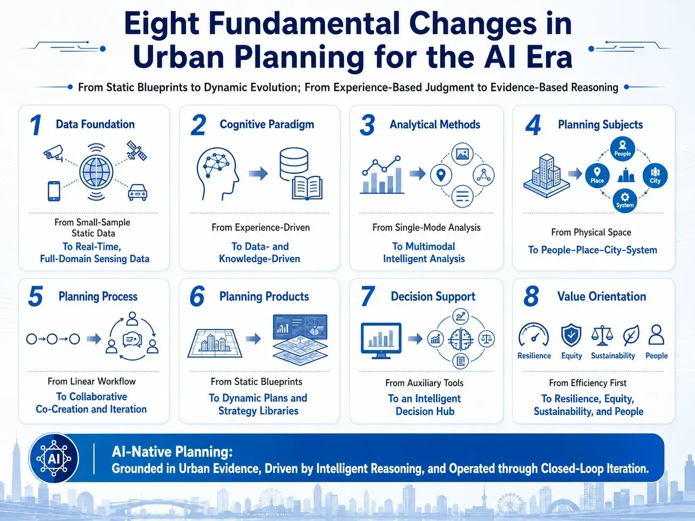
Figure 1｜Eight fundamental changes in urban planning in the AI era
Resilience, equity, sustainability, and human-centeredness in equal measure
These eight changes together show that the essence of AI-native planning is to ground it in urban evidence, support it with intelligent simulation, center it on human–machine joint judgment, and run it through closed-loop iteration — moving planning from a static blueprint toward a dynamic urban decision system.
Three Core Questions: How to Plan · How to Present · How to Apply
The overall positioning of a "world-class AI source" rests on answering three core propositions, which together form a complete logic from method and expression to application.
How to plan: the logic path of AI-native planning
AI-native planning does not append an AI tool to the end of a traditional workflow; rather, from the very start of planning, it organizes the whole process by "readable data, traceable evidence, inferable knowledge, simulatable proposals, explainable decisions, and feedbackable implementation", forming six consecutive stages:
Sensing and data aggregation▶Evidence construction and governance▶Knowledge graph and reasoning▶Proposal generation and simulation▶Decision support and coordination▶Monitoring, evaluation and iteration
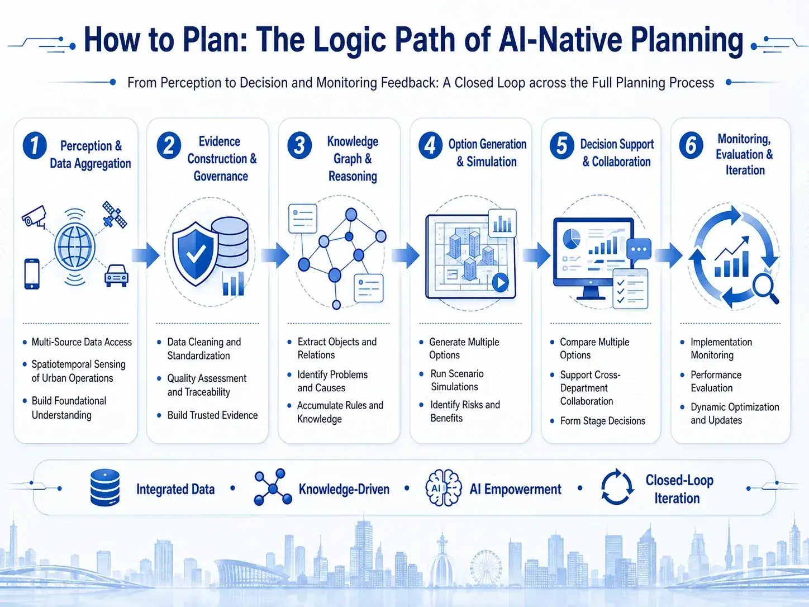
Figure 3｜How to plan: the logic path of AI-native planning
The entire logic path embodies four core traits: data continuity, knowledge-driven, AI-empowered, closed-loop iteration — planning no longer ends with deliverable review, but forms a continuous operating process of "sensing — evidence — reasoning — generation — decision — implementation — feedback".
How to present planning: a new content-interface expression
Planning presentation in the AI era should not merely produce an atlas or a 3D model, but establish a unified planning master, then form six categories of information interfaces according to different users' tasks and cognition: decision interface (conclusion · evidence · risk · action), professional-technical interface (data · method · model · recheck), spatial-experience interface (2D/3D/scenario/viewpoint), approval-rules interface (metrics · conditions · exemptions), project-investment interface (list · schedule · capital · responsibility), and public-and-operations interface (change · progress · feedback · operation).
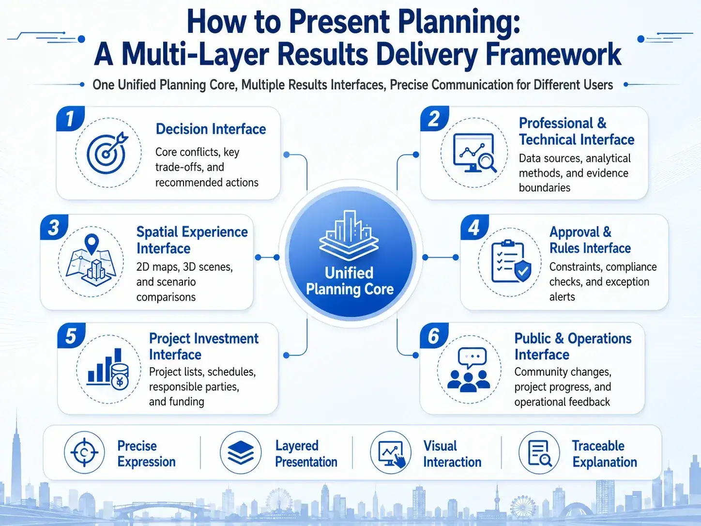
Figure 4｜How to present planning: a new content-interface expression
Planning presentation should have four traits: precise expression, layered presentation, visual interaction, traceable explanation — no longer "making people understand the proposal", but letting different actors make decisions, review, build, operate, and give feedback around one planning master.
How to apply planning: new scenarios and applications in the AI era
AI-driven planning application follows a common path — problem identification — proposal generation — countermeasure simulation — scenario design — execution — feedback optimization: organizing real urban problems into a continuous planning system grounded in trusted evidence, methodized through multi-proposal simulation, anchored by spatial-operational integration, and mechanized through open collaboration and version iteration, so that the Jingzhang Railway urban design shifts from a one-off deliverable into an urban action process that can keep learning, validating, and updating.
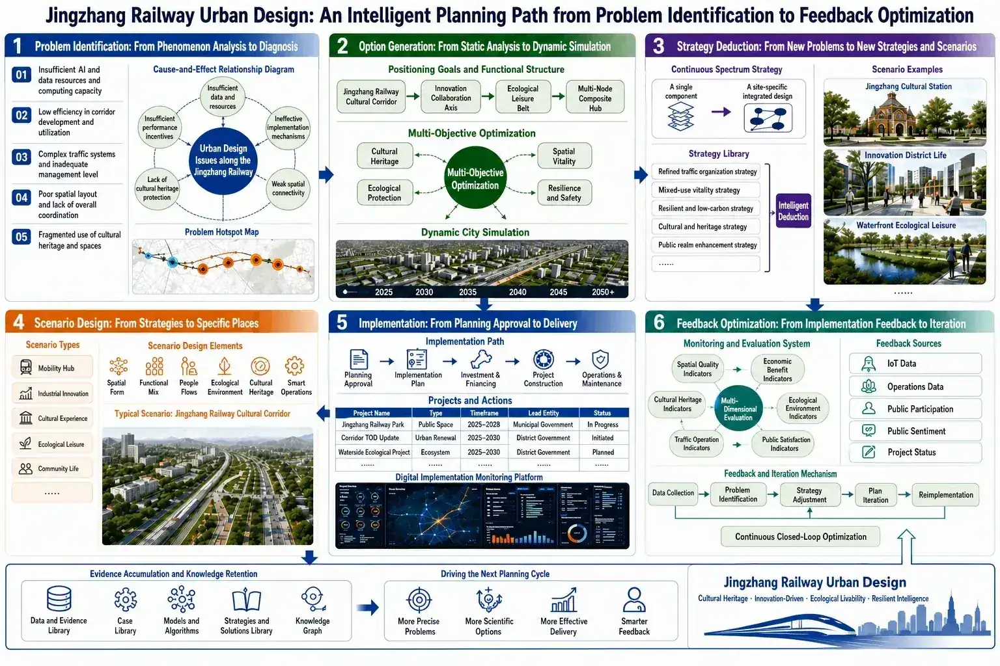
Figure 5｜How to apply planning: new scenarios and applications in the AI era
1.1 Overall Positioning: A World-Class AI Source
The competition's object is the space along the Jingzhang Railway — a composite urban area where sci-tech innovation resources cluster, dual-rail corridors overlap, and historical heritage interweaves. Accordingly, this proposal's overall positioning converges into one sentence:
Centennial Jingzhang ▪ AI Innovation Belt — a world-class AI source.
Taking the historical depth of the century-old Jingzhang Railway as its base, and "science-innovation corridor, cultural corridor, resilience corridor of the AI era" as its three attributes, it builds the Jingzhang Railway Innovation Belt into China's world-class source of the AI era.
Figure A｜Overall positioning: Centennial Jingzhang ▪ AI Innovation Belt · world-class AI source
This overall positioning unfolds on three levels, corresponding one-to-one with the "Three Core Questions" (1.2):
Positioning level
Connotation
Proposition it answers
One corridor (spatial carrier)
The Jingzhang corridor as a composite corridor stacking the three attributes of "science-innovation + culture + resilience"
How to plan
One source (core function)
"World-class AI source" — producing new ideas, new enterprises, and new standards, not merely agglomerating factors
How planning simulates
One method (methodology)
The "planning operating system" — human–machine collaborative planning closed-looped on urban operating feedback
How planning creates value
"World-class AI source" is not a slogan but a testable positioning standard: what distinguishes a source from an ordinary AI park is not denser factors but stronger adaptive capacity — whether the ecosystem can self-substitute, self-reorganize, and self-regenerate when the technological paradigm shifts, compute supply is disrupted, capital enters a down cycle, or talent temporarily flows out. This judgment is continuous with Proposition 4.4 "Flexible Resilience Computing" of this proposal: the core competitiveness of a world-class AI source is precisely its capacity to keep producing new ideas, new enterprises, and new standards amid sustained turbulence.
1.2 Top-Level Driver: Key Discourse on Sci-Tech Innovation Catalysis
General Secretary Xi Jinping · key remarks during an April 2023 inspection tour in Guangdong
"We must strengthen the function of sci-tech innovation catalysis, strive to leap from nothing to something in new scientific discoveries, new technological inventions, new industrial directions, and new development concepts, becoming the first discoverer of scientific laws, the first creator of technological inventions, the first pioneer of innovation industries, and the first practitioner of innovation concepts, producing a batch of original achievements in basic and applied-basic research, and breaking through a batch of bottleneck key core technologies."
This discourse provides the most direct top-level driver for a "world-class AI source", and anchors four measuring dimensions of this proposal's positioning — the "Four Firsts":
First discoverer of scientific laws: relying on the agglomeration of universities and institutes to become a catalytic highland of AI basic research;
First creator of technological inventions: relying on Zhongzhiyuan's full-stack autonomous innovation to become the catalytic engine of key core technology breakthroughs;
First pioneer of innovation industries: relying on the Origin Community's factor convergence to become the catalytic matrix of new industries and new business forms;
First practitioner of innovation concepts: relying on the "planning operating system" methodology to become the debut scenario of planning-paradigm change in the AI era.
The "Four Firsts" map onto the spatial division of "three zones, two wings", forming a complete catalytic chain from ideas to technology, and from industry to concept.
1.3 Three Zones, Two Wings: Division of the Three Key Areas
Following the task book's role assignment for "three zones, two wings", this proposal positions the three key areas as three distinct pivots along the catalytic chain, so that "catalysis" descends from an abstract concept to concrete, divisible, receptive, and collaborative spaces:
Factor convergence and standard output, producing new ideas, enterprises, and standards
Dazhongsi
AI industry cluster
Factor agglomeration · ecosystem synergy
AI-native new business forms + southern low-latency response; industry landing and scenario diffusion
Zhongzhiyuan · Breakthrough▶Origin Community · Catalysis▶Dazhongsi · Agglomeration
The three are strung together by the Jingzhang corridor and rail network, forming a complete chain of "autonomous innovation breakthrough → factor catalysis convergence → industry ecosystem agglomeration"; the two wings (transport, robotics, public-space nodes, and peripheral training centers) act as support and response, jointly upholding the overall "world-class AI source" positioning. This placement is a scenario choice at the urban-design stage, not formal parcel siting; once official boundaries and tenure materials are obtained, specific parcels should be re-compared within each area.
1.4 Zhongzhiyuan AI Autonomous Innovation Accelerator
Key Area 1
Zhongzhiyuan AI Autonomous Innovation Accelerator
【 Open win-win, innovative development 】
Figure B｜Zhongzhiyuan AI autonomous innovation accelerator
President Xi Jinping · keynote speech at the opening of the 2026 World AI Conference and the High-Level Meeting on Global AI Governance
"Artificial intelligence is a new engine of world economic growth and an accelerator of the shift between old and new growth drivers, now moving from the 'digital world' to the 'physical world'. We must seize this rare historic opportunity, encourage open source, openness, cooperation, and sharing, comprehensively promote AI sci-tech innovation, industrial development, and scenario application, and coordinate the transformation and upgrading of traditional industries, the cultivation and expansion of emerging industries, and the forward-looking layout of future industries, so that AI empowers all trades and professions."
Zhongzhiyuan undertakes the technology breakthrough link of the catalytic chain, positioned as the AI autonomous innovation accelerator:
Full-stack autonomous innovation: hosting the AI full-stack autonomous innovation system, covering inference and training centers, chip-testing workshops, model validation fields, and safety-governance laboratories, tackling key core technologies (corresponding to "first creator of technological inventions");
Compute and governance voice: as the recipient of the regional compute main center and standards governance, in turn supporting the Origin Community's factor catalysis;
Open win-win: themed "open win-win, innovative development", encouraging open source, openness, cooperation, and sharing, placing autonomous innovation within an open, globally collaborative framework.
General Secretary Xi Jinping · key instructions during an April 2025 inspection of the "Model Speed Space" large-model innovation ecosystem community in Shanghai's Xuhui District
"AI technology is iterating rapidly and entering explosive growth. Artificial intelligence is a young cause, and a cause of young people. Realizing the great dream of the Chinese nation rests on young people. Everyone should cherish a patriotic heart, set the ambition to serve the country, and strengthen the ability to build it, tightly linking personal endeavor with the nation's future and destiny, running the historical relay well, and blooming with splendid youthful brilliance on the broad stage of advancing Chinese modernization."
The Beijing AI Origin Community is the scenario core of the "world-class AI source", undertaking the ideas and standards link of the catalytic chain:
Factor catalysis and standard output: centered on the convergence and standard output of five factors — talent, enterprise, open source, data, and standards — hosting the open-source release hall, achievement-transfer street, data-factor salon, standards evaluation, and talent community;
Reinforce advantages: relying on the existing advantage of universities, institutes, and young-talent clustering, converting "talent density" into "catalysis concentration";
Youthful self-strengthening: themed "reinforce advantages, youthful self-strengthening", treating young talent as the first resource of catalysis and making AI the landing stage for "a young cause, a cause of young people" (detailed spatial design in 4.4 "AI Origin Community as the source").
1.6 Dazhongsi AI Industry Cluster
Key Area 3
Dazhongsi AI Industry Cluster
【 Factor agglomeration, ecosystem synergy 】
Figure D｜Dazhongsi AI industry cluster
General Secretary Xi Jinping · key discourse across inspections and major meetings on AI industry agglomeration, innovation-ecosystem building, and high-quality AI industry development
"China has rich data resources, a complete industrial system, and enormous market space, with broad prospects for AI development. We must strengthen policy support and talent cultivation, and strive to develop more safe, reliable, high-quality products. We must encourage open source, openness, cooperation, and sharing, comprehensively promote AI sci-tech innovation, industrial development, and scenario application, coordinate the transformation and upgrading of traditional industries, the cultivation and expansion of emerging industries, and the forward-looking layout of future industries, and cultivate a healthy ecosystem in which all actors coexist and co-prosper."
Dazhongsi undertakes the industry landing and ecosystem agglomeration link of the catalytic chain, positioned as the AI industry cluster:
AI-native new business forms: hosting enterprise service stations, product launches, and lightweight edge nodes, converting catalytic achievements into landable, diffusible industrial scenarios;
Southern low-latency response: invoking catalysis and compute services, undertaking southern low-latency response and disaster-recovery caching, strengthening the end-response capability of regional coordination;
Factor agglomeration, ecosystem synergy: themed "factor agglomeration, ecosystem synergy", cultivating a healthy ecosystem in which all actors coexist and co-prosper, so that AI empowers all trades and professions.
Under the overall positioning, the Jingzhang Railway Innovation Belt forms a four-corridor functional structure as the spatial skeleton of the three zones and two wings (corresponding to outline 1.2):
Functional structure
Connotation
Main placement
Science-innovation engine core
University–institute–enterprise innovation cluster, the catalytic engine of innovative ideas
Beijing AI Origin Community (core)
Dual-rail composite corridor
An integrated transport–industry–public-space corridor, the spatial spine linking the three zones
Jingzhang corridor (running through the three zones)
A fusion belt of railway-heritage activation and community renewal, realizing the "cultural corridor" attribute
Along the Jingzhang Heritage Park + Dazhongsi
The four corridors are not four parallel belts, but four attributes stacked on the same space: the science-innovation engine core provides the "density" of catalysis, the dual-rail composite corridor provides the "connectivity" of flow, the resilient computing zone provides the "assurance" of operation, and the heritage-living belt provides the "depth" of identity. Together they convert the historical depth of "Centennial Jingzhang" into the future vision of an "AI Innovation Belt".
1.8 Resilient Division of the Three Zones and Regional Coordination
The "world-class AI source" positioning likewise requires the three zones to form a clear resilience division, so that catalytic capacity does not fail under a single-point shock (see 4.4 for details):
Key area
Resilience role
Main spatial carrier
Relation to the source
Zhongzhiyuan
AI full-stack autonomous innovation + compute and governance voice
Inference and training centers, chip-testing workshops, model validation fields, safety-governance laboratories
Hosts the compute main center and standards governance, in turn supporting the Origin catalysis
Scenario core; six-factor convergence and standard output
Dazhongsi
AI-native new business forms (scenario resilience + edge response)
Enterprise service stations, product launches, lightweight edge nodes
Invokes catalysis and compute services, undertaking southern low-latency and disaster-recovery caching
Peripheral training centers undertake high-energy, long-duration large-scale training; Zhongzhiyuan undertakes full-stack inference, chip testing, and safety governance; the Origin Community undertakes factor catalysis, standard-setting, and trusted data circulation; together with transport, robotics, and public-space nodes, the three zones form a complete chain of "peripheral training — Zhongzhiyuan full-stack inference and validation — Origin factor catalysis and standard output — three-zone edge response".
1.9 Design Boundary
This section is a conceptual positioning for an urban-design competition. The specific parcels, spatial scope, functional ratios, and construction scale of the three key areas are all design-simulation conditions, not approved siting, land-use, or engineering conclusions; "world-class AI source" is a planning vision and evaluation standard, and does not constitute a construction or implementation commitment to any party.
Before formal deepening, official key-area boundaries, regulatory-planning conditions, terrain elevation, power and municipal capacity, tenure, and environmental-impact materials must be supplemented; once obtained, the three-zone positioning, functional structure, and resilience division should be re-verified, with external discourse sources registered in sources.json and unknown conditions registered in assumptions.json.
Key References
The locally cleared summary of the "Centennial Jingzhang AI Innovation Belt Open Call Task Book for Intelligent Agents".
This proposal's structural outline "1 Project Understanding and Functional Structure".
General Secretary Xi Jinping's key remarks in April 2023 during his Guangdong inspection on "strengthening the function of sci-tech innovation catalysis".
President Xi Jinping's keynote speech at the opening of the 2026 World AI Conference and the High-Level Meeting on Global AI Governance.
General Secretary Xi Jinping's key instructions during his April 2025 inspection of the "Model Speed Space" large-model innovation ecosystem community in Shanghai's Xuhui District.
General Secretary Xi Jinping's key discourse on AI industry agglomeration, innovation-ecosystem building, and high-quality industry development.
This proposal's 4.4 "Flexible Resilience Computing Plan" (three-zones-two-wings resilience division).
Before formal inclusion in the submission package, the specific sources of leaders' key discourse and benchmark cases should be registered in sources.json, and unknown conditions such as siting, boundaries, and tenure should be registered in assumptions.json.
Chapter 2Building the Base · What Do We Use for Planning?
Building the Base: From Data Repository to Urban Spatio-Temporal Data
Build a "full-factor, multi-scale, long-cycle" data foundation for the Jingzhang Railway Innovation Belt, and elevate multi-source data into a computable, inferable, traceable knowledge network to underpin problem identification and proposal simulation.
An urban evidence system does not centrally store all urban data, but transforms dispersed, heterogeneous, variable-quality, and differently-permissioned data — through governance, verification, and interpretation — into trusted evidence capable of supporting planning judgments. Its core logic is: multi-source data intake — unified resource management — data governance — evidence formation — planning application. Only when data's source, time, spatial extent, processing method, quality level, and applicability boundary are made explicit can it truly enter planning judgment.
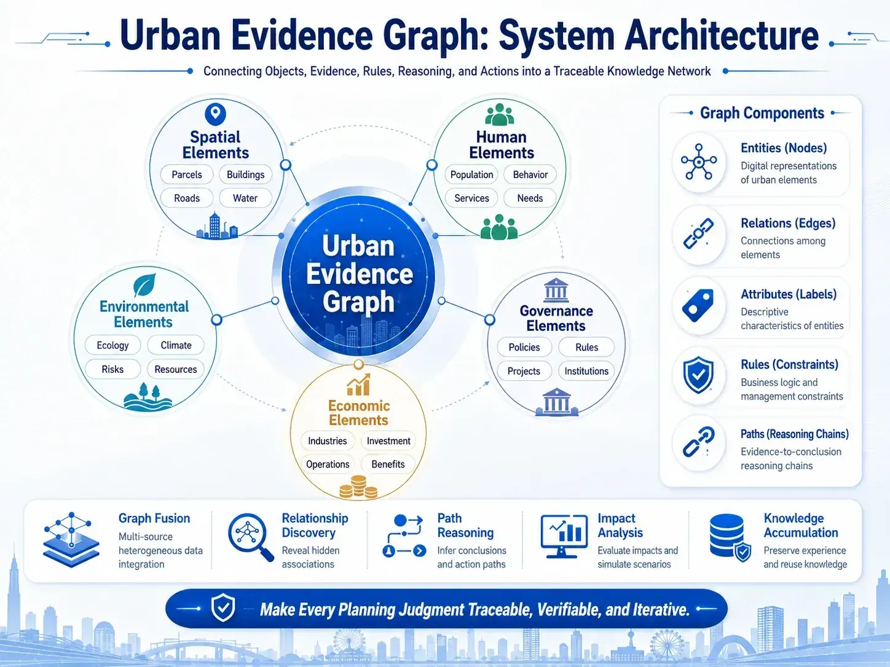
Figure 2｜From data repository to urban spatio-temporal data, from symptom analysis to mechanism hypotheses
2.1 Data Foundation
Static spatial evidence
Land use, buildings, roads, facilities, terrain, water systems
Property rights, ecological sensitive areas, historical and cultural resources
3D urban form, skyline, public-space quality
Dynamic operational evidence
Block-level activity and traffic flow from public statistics, onsite counts or lawfully authorized aggregates; no assumed access to mobile signalling
Energy consumption, water consumption, visitor stay, facility usage
Meteorological and environmental monitoring
Institutional and project evidence
Policy documents, approval conditions, fiscal budgets, land supply
Construction projects, operating rights, contractual arrangements
Implementation entities and funding sources
Social cognition evidence
Resident opinions, enterprise demands, online discussions, complaints and suggestions
Local knowledge, expert judgment
Stakeholder interviews
2.2 Data Graph
An urban evidence graph is not drawing urban data as a relationship network, but — grounded in urban objects — organizing "where data comes from, what it demonstrates, which judgments it supports or refutes, what decisions it forms, and what results it ultimately produces" into a queryable, verifiable, traceable, updatable spatio-temporal relationship system.
Subject base
Spatial units (parcels, blocks, corridors, nodes)
Functional facilities (transport, industry, public services, computing facilities)
Above the "single map" and CIM, the evidence graph adds semantic association, evidence provenance, planning reasoning, decision basis, and implementation feedback, going beyond an ordinary knowledge graph with four key layers: source and credibility; support and refutation relations; reasoning and decision processes; action outcomes and their feedback.
System
Primary question answered
Typical content
GIS
Where, how large in scope, and what the mutual distances are
Parcels, roads, water systems, facilities, administrative districts
CIM / digital twin
What state urban objects are in and how they operate
Buildings, pipelines, equipment, 3D models, sensors
Data middle platform
What data exists and where it resides
Data catalogs, interfaces, databases, data services
Urban knowledge graph
What relations exist among urban objects
Buildings belong to parcels, enterprises sit in parks, roads connect nodes
Urban evidence graph
Why a judgment is formed, whether it is credible, and how it influences decisions
Unify information from different departments, disciplines, and formats to the same urban object, forming a cross-domain evidence system
Association discovery
Discover hidden connections among space, population, economy, environment, and governance, identifying common problems across dispersed systems
Path reasoning
Trace from evidence to judgment, proposal, decision, and project, and reverse-query the planning basis and preconditions
Impact analysis
When policies, data, or projects change, identify affected objects and departments along graph relations
Knowledge accumulation
Continuously accumulate research, judgments, disputes, proposal choices, and implementation results into reusable, updatable knowledge assets
Chapter 3Identifying the Problems · What Must Planning Solve?
AI Urban Design Competition · Problem Identification (Chapter 3)
Identifying the Problems: From Symptom Analysis to mechanism-hypothesis diagnosis
Move beyond description by stating testable explanations of "why" and "which interventions might help". This layer answers what planning must solve by translating observed patterns into diagnostic indicators and candidate mechanisms. It does not claim that causal effects have already been identified.
mechanism-hypothesis diagnosisFive core problemsObserved pattern—candidate mechanism—diagnostic indicatorAI Innovation Belt
Methodological Shift: From Correlation Identification to Testable Mechanism Hypotheses
This layer is the key step entering from "problem identification" in the overall six-step progressive logic, and its methodological shift can be summarized in one sentence:
Shift from correlations to testable mechanism hypotheses. At this stage, the proposal states candidate mechanisms and indicators only. A real pilot must preregister treatment and comparison groups, confounders and identification assumptions, and report uncertainty and robustness checks before making causal claims.
Traditional problem identification mostly stays at the "symptom" and "correlation" level, easily mistaking co-occurrence for causation and thus proposing remedies that treat symptoms but not root causes. This chapter makes three methodological turns:
Dimension
Traditional approach (correlation)
This chapter's approach (mechanism-hypothesis diagnosis)
Problem statement
"A correlates with B"
"X may affect Y through Z" — a testable candidate mechanism
Intervention target
Patch the symptom itself
Locate the controllable leverage point of "what intervention is most effective"
Accordingly, every core problem unfolds in a unified "observed pattern — candidate mechanism — diagnostic indicator" three-part form: the observed pattern states what is seen, the candidate mechanism proposes how it may occur, and the indicator defines how it could be quantified and tracked. These mechanisms are testable hypotheses, not established causal conclusions.
3.2
Overview of the Five Core Problems
In the AI era, the Jingzhang Railway Innovation Belt faces five core problems that are both mutually independent and mutually coupled. The table below is the overview; the deepened diagnosis of each problem is detailed in the corresponding subsection below.
#
Core problem
Symptom
candidate mechanism chain
Diagnostic indicator
1
Mismatch between AI S&T resource clustering and the supporting facilities system
Universities, institutes, and enterprises cluster heavily, yet housing, commercial, cultural, and interaction space is insufficient
Heritage-site protection grade, adaptive-use intensity, public cultural identification
Problem 1
Mismatch between AI S&T Resource Clustering and the Supporting Facilities System
Completed
The complete deepened diagnosis of observed pattern — candidate mechanism — diagnostic indicator follows (including the S&T resource clustering pattern, facilities mismatch and six categories of gaps, and computable diagnostic calibers).
Problem Identification: AI S&T Resources Cluster Yet Facilities Still Hover at "Basic Coverage"
Exploratory point layers suggest university-research and technology-enterprise clusters along the corridor, but they are not item-by-item verified and do not support count, density or ranking claims. Existing public services remain oriented to basic residential provision.
Problem identificationUniversity pointsAI enterprise POIsResource–facility mismatch
Exploratory university and enterprise point layers · qualitative spatial-pattern reading only
The Problem: AI S&T Resources Cluster, Yet the Facilities System Still Hovers at "Basic Coverage"
Overlay "people's points" with "facilities' points" on the same map, and the mismatch is obvious: wherever resources cluster at extreme speed, facilities still remain absent.
Where resources are: university research and technology-enterprise clusters
S&T resources within the innovation belt cluster heavily, forming a spatial bipolar pattern of "northern talent source, southern industry agglomeration"Inference:
University research resources: the exploratory layer suggests a northern talent and research interface.
Technology-enterprise resources: the exploratory layer suggests enterprise-service and translation nodes in the central and southern sections.
The "corridor" in between: between the northern talent and southern industry lies a multi-kilometer commuting and collaboration corridor — where facilities should have expanded, but did not keep up.
Where facilities are: still falling back on "basic-coverage" regulatory-grade facilities
Current public service facilities are mainly at the basic-coverage layer, falling back on residential-companion regulatory valuesRegulatory value: they solve basic living such as "grocery shopping, schooling, medical care, basic exercise", not AI talent's "innovative living". The result is —
Core judgment
Wherever talent density is highest is precisely where innovation facilities are weakest. The current facilities solve the "residence" problem, not the "innovation" problem — a new supplementary facilities system centered on AI talent, rather than residents alone, is needed.
Spatial overview: university and AI enterprise resource clustering
The default map shows exploratory point layers for spatial-pattern reading only; switch layers in the top-right panel.
Public-Service Types and Accessibility Gaps
Against innovation needs, the current public service facilities system can be summarized as "one base + six gaps".
Layer
Current characteristics
Problems relative to AI innovation needs
Basic-living service layer Types and accessibility pending a formal survey
Residential companion facilities at the regulatory-value baseline, covering grocery shopping, schooling, medical care, and basic exerciseRegulatory value
Faces "residents" rather than "innovation talent", mismatched with the high-talent-density spatial distribution; a safety net rather than an enabler
Innovation facilities (six categories) Café social / fitness exercise / library study / meeting & roadshow / canteen dining / display & community
Cannot host AI talent's high-frequency "unexpected interactions" — yet innovation depends precisely on collisions
The population caliber further explains the scale of the mismatch:
Current residents Ph ≈ 450,000Data; AI innovation population Pai ≈ 60,000 (range 40,000–80,000)Derived value.
This means: new facilities should not be "one more layer for 450,000 residents", but "a continuous spectrum tailored for 60,000 high-frequency innovation workers", while also sharing with residents.
Therefore, the core of the proposal is not "adding a few points", but changing the logic — from "basic coverage, point-scattered supply" to "continuous spectrum, four-layer nesting".
Problem 2
Reuse and Redevelopment of Low-Efficiency Land Along the Dual-Rail Spatial Corridor
Completed
The complete deepened diagnosis of observed pattern — candidate mechanism — diagnostic indicator follows (including four sub-problems and computable diagnostic indicators).
AI Urban Design Competition · Problem Identification (Part 2)
Reuse and Redevelopment of Low-Efficiency Land Along the Dual-Rail Spatial Corridor
After the Jingzhang high-speed rail went underground and Line 13 was rebuilt to run elevated, the city once severed by railways was re-sewn into a high-value corridor. Yet large amounts of old factory buildings, trading markets, negative spaces under bridges, and courtyard land backing onto the park along the two sides failed to renew in sync, producing a development mismatch of "potential already released, current state still inefficient". This part focuses on the "reuse and redevelopment of low-efficiency land along the dual-rail spatial corridor" (the second core problem in the overall problem framework), unfolding by the mechanism-hypothesis logic of "observed pattern—candidate mechanism—diagnostic indicator".
Dual-rail corridorLow-efficiency land redevelopmentLand-use efficiencyRenewal-potential indexAI Innovation Belt
Overall Judgment: the Mismatch Between Released Potential and Current Inefficiency
Symptom. Along the 9-km Jingzhang Railway corridor, both sides hold large amounts of low-efficiency land — old factories, low-efficiency buildings, idle parcels, commercial entities in transition, as well as negative spaces under bridges, idle railway land, and temporary parking. Meanwhile, the AI industry needs contiguous, continuous industrial land capable of hosting innovation activities, producing an obvious mismatch: "land is plentiful but fragmented and unclearly tenured" versus "industry needs contiguous land".
Candidate mechanism (unverified). After the dual rail shifted from ground to underground/elevated, the physical barrier disappeared and land value on both sides rose; but three stacked constraints — complex property, high safety-control requirements, and weak renewal momentum — kept markets, shantytowns, old industry, and under-bridge spaces from renewing in time, ultimately leading to spatial fragmentation and sunk value. The candidate mechanism chain of this segment is: complex property + high safety-control requirements + weak renewal momentum → spatial fragmentation and sunk value.
This problem — the "reuse and redevelopment of low-efficiency land along the dual-rail spatial corridor" — ranks second among the core problems in the overall framework: upward it inherits base data such as corridor land-use efficiency and cross-rail accessibility (supported by the urban spatio-temporal data foundation), downward it points toward fine-grained activation and continuous facilities for the existing stock (corresponding to proposal generation and strategy discovery). The result of problem identification will directly translate into computable, monitorable diagnostic indicators and construction requirements for the digital foundation.
Problem 1
The "Timing Gap" Between Corridor Release and Land Renewal Causes Mismatch
After the dual rail went underground/elevated, the railway's physical severance of the city was removed, and land on both sides shifted from "corners devalued by the railway" to "scarce resources of high accessibility", with land value rising markedly. Yet the original markets, shantytowns, old industry/warehousing, and under-bridge negative spaces did not enter the renewal track in sync — the spatial barrier is gone and development potential has emerged, while current quality and function still linger in an inefficient state, forming an obvious timing gap and spatial mismatch between "development potential" and "current quality".
9 km
Length of the Jingzhang Railway corridor
Dual rail
Underground (HSR) + elevated (Line 13) released simultaneously
T+Δ
Corridor value window vs. renewal landing cycle
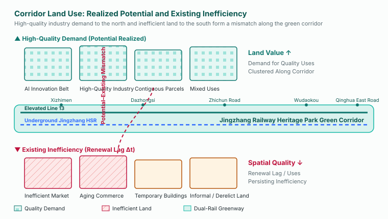
Figure 1 · Low land-use efficiency and poor spatial quality coexist along the corridor. Along the Jingzhang Railway Heritage Park corridor, inefficient markets, old commercial, and temporary buildings contrast sharply with the high-quality demand around them, with both land-use efficiency and spatial quality simultaneously low.
Problem 2
Low-Efficiency Land Is Diverse and Highly Fragmented
Along the 9-km corridor, low-efficiency land is not a single type but a mixed scatter of "point—line—area", hard to consolidate contiguously:
① Trading-market type (targets of non-capital-function dispersal)
Tianming Eyewear Wholesale City, Wudaokou Clothing Market, Sidaokou Shopping Plaza, agricultural markets, antique markets, furniture plazas, Zhongkun Plaza, aquatic-product wholesale markets, and more. These have dated facades and low spatial quality, mostly dispersal targets, with a gap between the vacating pace and industrial handover.
② Negative-space type (large area, lacking function)
Spaces under the Line 13 viaduct, idle railway land, temporary parking, and fenced-off corner land — sizable in area but lacking public function, long trapped in a "visible yet unusable" negative state.
③ Shantytowns and abandoned land
Shantytowns and parcels awaiting renewal exist around nodes such as Zhichun Road, West North 4th Ring, and Wudaokou, with high renewal cost and complex property.
Under-bridge
≈ 19,400 m² negative space (proposal estimate)
Railway idle
≈ 60,500 m² (proposal estimate)
Temporary parking
≈ 48,900 m² (proposal estimate)
Walls
≈ 4,977 m of enclosed frontage (proposal estimate)
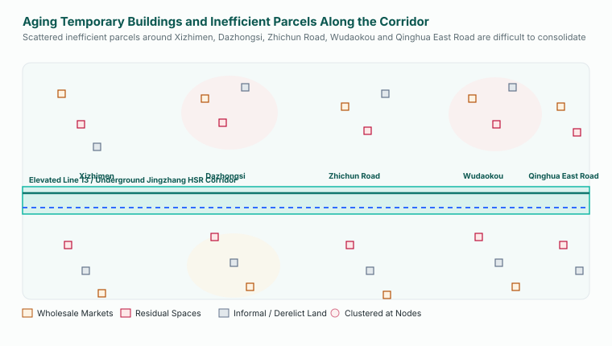
Figure 2 · Distribution of old temporary buildings and low-efficiency parcels along the corridor. Old temporary buildings concentrate around nodes such as Xizhimen, Dazhongsi, Zhichun Road, Wudaokou, and Qinghua East Road, with renewal patches scattered in points and hard to consolidate contiguously.
Problem 3
Courtyard Walls Overlaid with Administrative Boundaries, Dispersing Renewal Actors
Low-efficiency land renewal is not only a spatial issue but a governance issue. The corridor is cut layer by layer by two kinds of boundaries:
Institutional boundaries: visual and field review suggests that some campuses present closed edges to the park corridor; the extent requires onsite verification.
Administrative boundary: the corridor spans 7 sub-districts, each acting on its own, making it hard to form a unified urban-renewal and public-space operating entity; cross-district project coordination and benefit integration are costly.
Verify
Campus-edge relationship to parks
7
Sub-district administrative boundaries
Walls
Enclosed frontage blocking accessibility and sharing
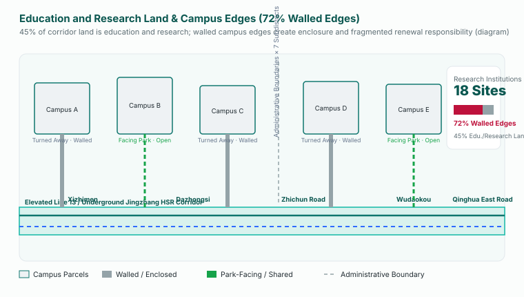
Figure 3 · Educational and research land and campus boundaries. The diagram indicates some wall and fence interfaces; exact shares and extents require official land data and onsite verification.
Problem 4
Missing Public Space and Ecological Network
Even after the corridor is released as a green belt, its "publicness" and "ecologicalness" are still not fully realized:
Open space is divided by interfaces, and some areas show low activity or weak access;
Green space is scattered in points, not forming a continuous green network, so the ecological-corridor effect is hard to realize;
Contiguous nurseries/parks lack linkage and design coordination, so ecological value and public vitality are not fully released.
Diagnostic Indicators: From Symptom Identification to Computable and Monitorable
Following the method of "from symptom analysis to mechanism-hypothesis diagnosis", the four problems above are converted into quantifiable, mappable diagnostic indicators that can be continuously monitored by the digital foundation. The indicators both inherit the urban spatio-temporal data foundation and directly correspond to the monitoring objects of subsequent digital products.
Problem
Diagnostic indicator
Current state / threshold (computable)
Data source and monitoring means (digital foundation)
Problem 1 Timing gap
Corridor land-use efficiency
Share of low-efficiency land, per-unit output intensity; land-value index ↑ after corridor release but current quality not yet in sync
Campus orientation, cross-actor coordination and barrier-interface length
Campus openness data + sub-district boundaries + multi-actor co-governance entry
Problem 4 Missing public ecology
Renewal-potential index (quality dimension)
Open-space activity and green-network connectivity
Open-space / green-space vectors + ecological-network gap visualization
The three core indicator categories above — corridor land-use efficiency, cross-rail accessibility, and renewal-potential index — are the diagnostic core of the "reuse and redevelopment of low-efficiency land along the dual-rail spatial corridor"; this identification further refines them in this segment into computable sub-indicators and data support, as input for subsequent "proposal generation" and "digital products (city-building mini-program)".
Problem 3
Contradiction Between a Complex Transport System and Lagging Urban Transport Management
Completed
The complete deepened diagnosis of observed pattern — candidate mechanism — diagnostic indicator follows (including five sub-problems and computable diagnostic indicators).
AI Urban Design Competition · Problem Identification (Part 3)
Contradiction Between a Complex Transport System and Lagging Urban Transport Management
With the Jingzhang HSR underground, Line 13 elevated, the urban road network reconfigured, the central ecological landscape belt stitched by slow traffic, and multiple TOD hubs plus three-dimensional static transport, this district has evolved into a complex transport system composed of three layers: "underground—ground—elevated". Yet integrated transport management still lingers at static planning and manual experience, unable to cope with the new pattern of multi-layer, multi-entity operation and peak dispersal — the complexity of the transport system and the lagging management form a sharp contradiction. This part focuses on the "contradiction between a complex transport system and lagging urban transport management" (the third core problem in the overall problem framework).
Three-layer composite transportTransfer efficiencyManagement fragmentationCongestion indexAI Innovation Belt
Overall Judgment: the System Is Already Complex, Yet Management Lags
Symptom. Subway, suburban railway (Jingzhang HSR), Line 13, and urban roads overlap heavily, forming a "three-layer composite" system of underground HSR, ground-level park green corridor, and elevated rail; TOD hubs, P+R, diverse buses, and three-dimensional static transport are dense along the corridor. Yet transfer efficiency is low, node conflicts are many, and management is fragmented, so the travel experience of residents and visitors has not improved in step with hardware upgrades.
Candidate mechanism (unverified). Multi-entity operation (railway / subway / municipal / universities / sub-districts) + unintegrated data + insufficient predictive capacity lead to "hardware complexity" and "software roughness" coexisting, ultimately manifesting as both congestion and poor experience. The candidate mechanism chain of this segment is: multi-entity operation + unintegrated data + insufficient predictive capacity → both congestion and poor experience.
This problem — the "contradiction between a complex transport system and lagging urban transport management" — ranks third among the core problems in the overall framework: upward it inherits dynamic operational data bases such as passenger flow, vehicle flow, and public-transit OD, downward it points toward strategies like menu-selected smart mobility and the fusion of the railway corridor with slow traffic. Its diagnostic results will translate into computable, monitorable diagnostic indicators and constitute the core monitoring objects of the smart-transport platform.
Problem 1
Underground—Ground—Elevated Three-Layer Composite, with Complex Vertical Connection
After the Jingzhang HSR went underground and Line 13 was rebuilt, this district formed 7 typical above-ground/underground spatial sections. Passenger flow, vehicle flow, and utility relations among the underground HSR, ground-level park, and elevated rail are highly coupled, and the traditional "planar two-dimensional" organization is no longer adequate — vertical transfer, evacuation, and utility avoidance become new sources of complexity.
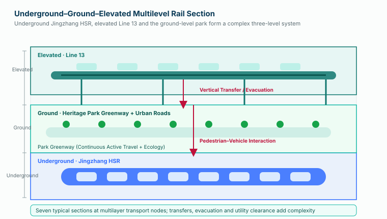
Figure 1 · Underground—ground—elevated three-layer composite rail line distribution. The Jingzhang HSR goes underground while Line 13 alternates between elevated / ground / underground, forming 7 typical vertical sections; stations such as Dazhongsi, Zhichun Road, and Wudaokou sit at multi-layer transport coupling nodes.
Problem 2
East–West Connections Long Severed, with Road-Network Density Still Low
Railways, tracks, the Zhuan River, and expressways together form an east–west transport barrier, forcing residents to detour far to cross the corridor. The study area's comprehensive road-network density is 5.72 km, below the ≥ 8 km/km² required by the new master plan; the current state has 30 dead-end roads and 64 T-intersections, with insufficient network connectivity further amplifying the inconvenience of crossing the corridor.
5.72
Road-network density km/km² (new master plan ≥8)
30
Dead-end roads
64
T-intersections
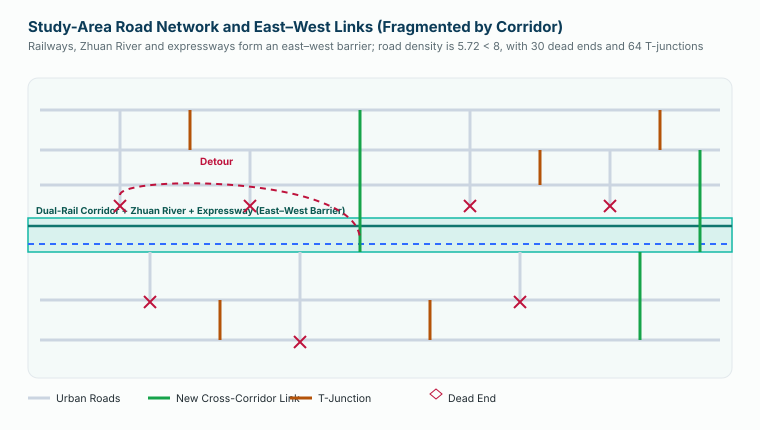
Figure 2 · Study-area road system and east–west corridors. Expressways, arterials, primary roads, secondary roads, and branches are clearly graded, but severed by railways / tracks / the Zhuan River, east–west cross-corridor connections are insufficient, and dead-end and T-intersection roads further amplify detour cost.
Problem 3
Low Station Transfer and Feeder Efficiency
Line 13 parallels the Jingzhang corridor, while the submitted design study identifies candidate transfer and active-mobility discontinuities between stations, parks and cross-corridor links. These observations are exploratory and require official network data, field survey and reproducible route analysis before any coverage ratio or walking-time conclusion is stated.
TBD
Station-to-park accessibility baseline
Survey
Cross-corridor routes and transfer time
4 stations
Dazhongsi / Zhichun Road / Wudaokou / West Qinghua East Road
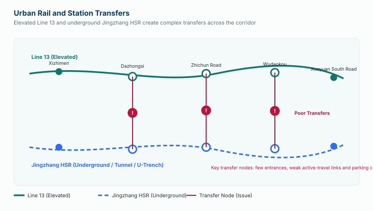
Figure 3 · Urban rail and station transfer relations. The ground / tunnel / U-channel segments of the Jingzhang HSR interweave with the elevated / underground / entry segments of Line 13; transfer relations at Xizhimen, Dazhongsi, Zhichun Road, Wudaokou, West Qinghua East Road, Xueyuan South Road, and other stations are complex.
Problem 4
Mixed Traffic Flows, with Severe Node Conflicts
Through-traffic share is high, and T-intersections, the diagonal Shuangqing Road, and over-close intersection spacing cause severe pedestrian / non-motorized / motorized mixed-flow conflicts and chaotic traffic order. Chengfu Road in the international-exchange segment is chronically congested at peak, with Shuangqing Road and Qinghua East Road / Heqing Road forming traffic "pain points", where pedestrians, non-motorized vehicles, and motor vehicles interfere in limited space.
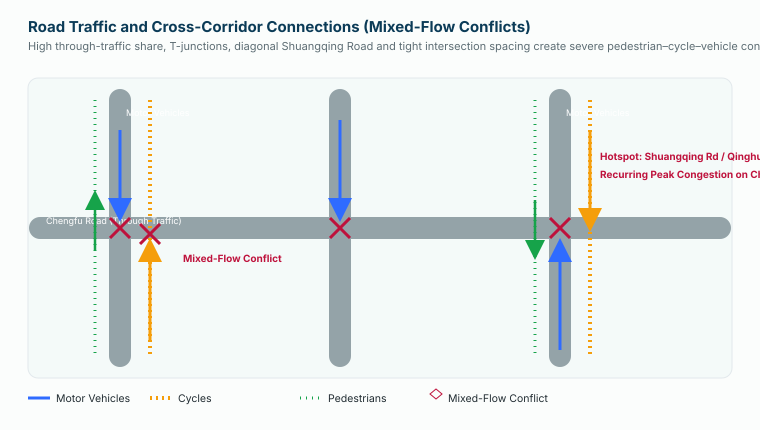
Figure 4 · Urban road traffic analysis and cross-corridor connections. Urban expressways, arterials, and planned-but-unbuilt roads overlap; through-traffic and arriving/departing traffic interweave within the limited corridor, and east–west corridors such as Qinghua East Road, Chengfu Road, and Xueyuan South Road bear high-intensity mixed-flow pressure.
Problem 5
Rough Transport Management: Disorder Under Bridges and Missing Slow-Traffic Experience
① Rough management of under-bridge spaces
Under-bridge spaces are occupied by large amounts of illegal parking, fenced parking, and temporary structures, not converted into orderly public space but instead becoming a source of interference for feeders and slow traffic (also aggravating Problem 3's poor station feeder).
② Missing slow-traffic system management
Bicycle parking is disorderly and encroaches on bus waiting areas; sidewalks are narrow, damaged, and dark, with poor walking experience, weakening the continuous slow-traffic stitching that the green corridor should provide.
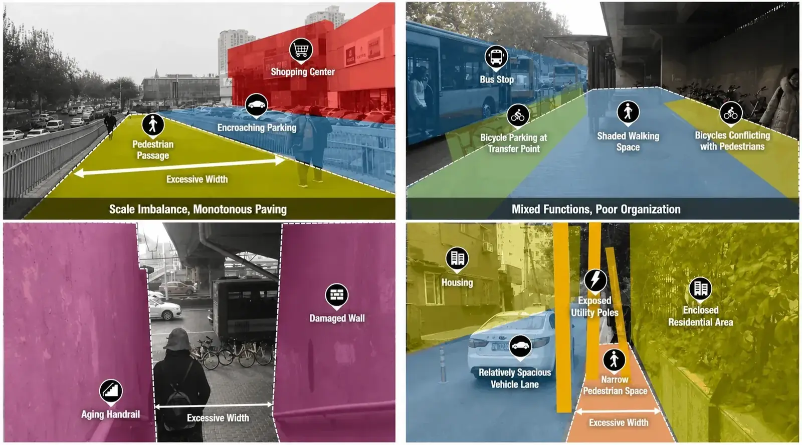
Figure 5 · Rough management of under-bridge spaces and slow-traffic environment. Under-bridge and street spaces generally have overly wide scale, mixed functions, encroached pedestrian passages, mutual interference between bicycles and bus waiting areas, and poor slow-traffic experience, indicating insufficient fine-grained management.
Diagnostic indicators
Diagnostic Indicators: From Symptom Identification to Computable and Monitorable
Following the method of "from symptom analysis to mechanism-hypothesis diagnosis", the five problems above are converted into quantifiable, mappable diagnostic indicators continuously monitorable by the digital foundation, directly corresponding to the monitoring objects of the smart-transport platform.
Problem
Diagnostic indicator
Current state / threshold (computable)
Data source and monitoring means (digital foundation)
Problem 1 Three-layer composite
Transfer time (vertical connection)
Vertical transfer / evacuation duration of 7 sections; number of multi-layer person-vehicle conflict points
Three-layer transport unified map + BIM/IoT twin platform
Problem 2 East–west severance
Congestion index (network capacity)
Road-network density 5.72 < 8; 30 dead-end roads, 64 T-intersections; average cross-corridor detour distance
The core indicators above — transfer time, congestion index, and multimodal travel share — are the diagnostic core of the "contradiction between a complex transport system and lagging urban transport management"; this identification refines them in this segment into computable sub-indicators and data support, as input for subsequent "proposal generation" and "digital products (smart-transport platform)".
Problem 4
Spatial Layout and Safety Resilience of Compute Centers
Completed
The complete deepened diagnosis of observed pattern — candidate mechanism — diagnostic indicator follows (including the overall judgment, four symptoms, candidate mechanism chain, and computable diagnostic indicators).
Chapter 3 · Problem Identification · Problem 4 Deepened Diagnosis
Spatial Layout and Safety Resilience of Compute Centers
When intelligent-computing clusters enter high-density built-up areas at the scale of "city-level infrastructure", siting constraints are overridden by cost logic, resilience design is simplified into "one-step completion", and operational governance is shelved by "build-heavy, operate-light" — the "heat" of layout and the "cold" of resilience form a systemic mismatch. This section unfolds a deepened diagnosis in the three-part form of "observed pattern — candidate mechanism — diagnostic indicator".
3.4.1 Overall Judgment: the "Heat" of Compute Layout vs. the "Cold" of Safety Resilience
Symptom. Large-model training and agent inference spur explosive growth in compute demand; hundred-thousand-card intelligent-computing clusters and intelligent-computing infrastructure construction are accelerating across the board, with compute facilities upgrading from "enterprise computer rooms" to "city-level infrastructure" that decides regional competitiveness. Against this backdrop, intelligent-computing centers and compute centers expand rapidly and scramble to locate along the innovation corridor, showing an obvious "compute-on-the-street" tendency — clustering toward high-density built-up areas, around universities and institutes, and near rail stations to gain nearby compute and talent convenience. Yet at the same time, the high-energy, high-sensitivity, high-risk spatial attributes of compute facilities are not given equal reverence: siting safety boundaries are compressed by cost logic, spatial-resilience requirements such as flood, seismic, and fire resistance are diluted by the "locate first, argue later" pace, and redundancy, degradation, and self-healing capacity in the operational phase are chronically absent.
Candidate mechanism (unverified). Compute-demand density keeps climbing, and the three major constraints of energy, land, and safety cluster at the same spatial scale, turning "layout" and "resilience" into a structural contradiction: layout pursues closeness to users, the power grid, and talent, while resilience requires avoiding disasters, retaining redundancy, and supporting reconfiguration — the two are hard to satisfy simultaneously in an innovation corridor where land is at a premium, and current practice generally prioritizes layout and compromises resilience, ultimately manifesting as accumulated layout risk coexisting with a resilience deficit. The candidate mechanism chain of this problem is: compute-demand surge + siting constraints yielding to cost + simplified resilience design + missing operational governance → layout risk and insufficient resilience.
This problem — "spatial layout and safety resilience of compute centers" — ranks fourth among the core problems in the overall framework: upward it inherits base data such as compute-demand density, energy assurance, disaster-risk exposure, and network resilience (supported by the urban spatio-temporal data foundation), downward it points toward spatial disaster resistance, factor redundancy, and institutional self-healing strategies of "AI+ flexible resilient computing" (corresponding to proposal generation and strategy discovery). The result of problem identification will directly translate into computable, monitorable diagnostic indicators and construction requirements for the digital foundation.
100k cards
Domestic intelligent-computing cluster construction target (regional)
High sensitivity
Rigid dependence of compute facilities on power / communications / environment
Mono-layout
Single-point failure risk from concentrated layout
3.4.2 Symptom 1: Head-On Conflict Between Demand Surge and Siting Constraints
A compute center is not an ordinary industrial building; it has strict rigid requirements for siting conditions, while the spatial reality of high-density built-up areas conflicts with them systematically:
Energy constraint: power supply must be ample and reliable, communications fast and unobstructed, and transport convenient — yet the core area of the innovation corridor has limited grid capacity and substation increments, with large-scale compute electricity competing against urban residential electricity for the same grid;
Environmental constraint: the natural environment must be clean and the ambient temperature conducive to energy saving — yet high-density built-up areas have a pronounced heat-island effect and complex sources of dust and oil smoke, compressing year-round natural-cooling hours and passively raising PUE;
Hazard avoidance: must stay away from dust, oil smoke, harmful gases, and corrosive, flammable, or explosive materials — yet fuel and gas stations, warehousing and logistics, and cooking fumes are scattered throughout the built-up area, making safe distances hard to satisfy item by item;
Disaster avoidance: must stay away from flood, earthquake, and other natural-disaster hazard areas — yet riverside/waterfront segments, rising-groundwater zones, and fault-zone influence ranges along the corridor all carry siting boundary risks;
Functional compatibility: medium- and large-scale compute centers should not be built within residential and commercial areas — yet "compute-on-the-street" pushes compute nodes precisely toward high-density residential and commercial mixed areas, with noise, heat dissipation, and transport directly adjacent to residents' lives.
Figure 1 · Siting-constraint conflict diagram. The rigid siting requirements of compute facilities (green) and the spatial reality of high-density built-up areas (red) come into head-on conflict across the four dimensions of energy, environment, disaster, and function, squeezing the safely sitable space from both sides.
3.4.3 Symptom 2: Concentrated Layout and Disaster-Risk Exposure
Compute facilities naturally tend toward "concentrated layout, shared facilities" to amortize costs, but against the backdrop of frequent disasters and normalized extreme weather, concentrated layout is compressing systemic risk into single points:
Flood risk: if low-lying, waterlogging-prone locations such as riverside/ditch-side areas, depressed bridge zones, and rising-groundwater zones carry compute functions, they risk backflow, submergence, and total shutdown under rainstorms and super-standard floods; if first-floor key equipment sits below the 100-year flood level, one extreme rainfall can cause catastrophic loss;
Seismic risk: if compute centers' seismic-fortification category and structural system follow ordinary Class-C buildings, the probability of cabinet overturning, pipeline rupture, and cluster paralysis rises markedly under strong earthquakes;
Environmental risk: compute nodes near strong-vibration sources (rail transit, large machinery) and strong-electromagnetic-field sources (substations, high-voltage corridors) face sustained pressure on equipment stability and data integrity;
Single-point risk: compute clusters concentrate in an "island" fashion; once the host area suffers power outage, fire, or waterlogging, clusters lacking cross-node takeover and off-site disaster recovery face total failure, with compute interruption directly transmitted to the urban operations and industrial innovation depending on it.
Figure 2 · Concentrated-layout single-point risk diagram. Compute clusters share one area and one grid/route; disaster-recovery nodes are not physically dispersed, so once the disaster impact front covers them the whole system fails.
3.4.4 Symptom 3: Absent Spatial-Resilience Design
Even after siting lands, the spatial-resilience design of compute facilities themselves still has four pervasive gaps, leaving "disaster resistance" and "reconfigurability" on paper:
① Flood-resistance gap. Key data, governance control, and core compute are placed in flood-prone underground space or low-lying first floors; building entrances, ramps, vents, and utility openings lack backflow protection; underground-garage ramps and utility entries are not zone-isolated — under extreme rainfall, the rainwater-backflow path points directly at core equipment.
② Fire-resistance gap. Computer-room, power, and energy-storage areas are not physically separated, so one fire can spread to the entire compute cluster; the park's ring fire lane, independent fire-compartment isolation, and fire/emergency circulation are insufficient; key systems such as power supply and cooling lack the "one fault does not propagate" compartment design.
③ Phasing gap. The master plan is not planned once with reserved long-term expansion land; computer rooms, power distribution, and cooling trunk networks are not built once; compute units are not cluster-laid-out, causing the "one-step" full build-out to detach from the real business-growth rhythm, both raising investment risk and forcing later expansion to disturb already-online business.
④ Reconfigurability gap. Civil work and hardware are deeply coupled, so cabinet density cannot accommodate evolution from low-power servers to ultra-high-density liquid-cooled full cabinets; power-distribution and cooling modules cannot stack-expand; utilities, trays, and interfaces are unstandardized, so hardware replacement or architecture adjustment requires large-scale civil rework; a single computer room's or cluster's fault cannot be isolated, propagating along shared systems.
Figure 3 · Comparison of spatial-resilience gaps and the ideal framework. A systematic gap exists between the current four-dimension gaps (red) and the ideal resilience profile (green) of "elevated critical layers + compartmental isolation + phased growth + modular decoupling".
3.4.5 Symptom 4: Insufficient Factor and Institutional Resilience
A compute center's resilience depends not only on the computer room itself, but more on factor supply and operating institutions. There are currently obvious "soft-resilience" shortcomings at both the factor and institutional levels:
Factor-resilience shortcomings
Human single-point dependency: operation capability over-depends on a few local key personnel, lacking off-site expert-support channels, AB-role rotation, and knowledge-base accumulation, so loss of key personnel becomes a system risk;
Vendor lock-in risk: compute supply, hardware, software, and scheduling platforms are bound to a single supplier; failure or supply cutoff of a single chip, cloud platform, or scheduling system is directly transmitted to the entire cluster;
Open-source supply-chain risk: if base scheduling frameworks, cluster management, and monitoring components directly use overseas open-source versions without domestic adaptation-hardening or internal maintenance branches, upstream discontinuation or vulnerability outbreaks leave no backstop;
Data-disaster-recovery gap: hot/warm/cold data is not stored in graded multi-copy form, compute and disaster-recovery nodes are not physically dispersed across risk zones, and training tasks lack checkpoint-resume mechanisms, so hardware damage zeroes out tasks;
Full-configuration hard binding of compute resources: general, intelligent, and super-computing resources are not pooled, with no degraded-operation mode, so under extreme faults core compute cannot be retained and non-core business cannot be shut down, and there is no cross-regional scheduling channel when local compute is insufficient.
Institutional-resilience shortcomings
Build-heavy, operate-light: resilience indicators (acceptable degradation ratio, RTO/RPO, fault-handling flow, chaos-drill requirements) are not embedded in the whole project feasibility, design, acceptance, and operation-assessment flow, looking only at PUE and compute peak;
Standard-system confusion: the two systems of infrastructure grade (computer-room construction standard) and compute-business grade (intelligent-computing capability grading) are confused, with interfaces, hardware, and scheduling protocols using private closed standards, leaving insufficient room for future new standards and new hardware iteration;
Missing governance coordination: emergency-linkage responsibilities and response flows among compute operators, grid companies, telecom operators, tenants, and regulators are unclear, with agent-alarm information siloed and lacking a unified event bus and global visibility.
3.4.6 candidate mechanism chain: From Demand Surge to Resilience Deficit
Stringing the symptoms above together, this problem's mechanism hypothesis structure presents a clear progressive chain:
Compute-demand surge (large-model training / agent inference / hundred-thousand-card clusters)→Construction wave surges toward high-density built-up areas (nearby compute, near talent, near users)→Siting constraints yield to cost and pace (energy / disaster / functional compatibility compressed)→Concentrated layout + exposure to low-lying / hazard-source / strong-vibration areas→Spatial resilience simplified (flood/fire-resistance gaps / full build-out at once / non-reconfigurable)→Factor and institutional resilience missing (single-point dependency / build-heavy operate-light)→Overall shutdown risk under extreme events
Final outcome: accumulated layout risk + resilience deficit → compute supply interruption → transmitted to AI industry and urban operations
The key leverage points lie in two intervenable links: "safety-boundary front-loading" at the siting end (treating disaster avoidance, hazard spacing, and functional compatibility as non-negotiable rigid constraints, with veto power in siting comparison) and "resilience-metric embedding" at the design-operation end (writing redundancy, degradation, reconfiguration, and self-healing into feasibility, design, acceptance, and operational assessment). The former decides whether risk enters; the latter decides whether risk can be absorbed.
Following the method of "from symptom analysis to mechanism-hypothesis diagnosis", the symptoms above are converted into quantifiable, mappable diagnostic indicators continuously monitorable by the digital foundation. The indicators both inherit the urban spatio-temporal data foundation and directly correspond to the monitoring objects of subsequent digital products (flexible-resilient-computing platform, compute–energy–safety coordinated scheduling).
Diagnostic dimension
Diagnostic indicator
Current state / threshold (computable)
Monitoring means (digital foundation)
Layout constraint (siting safety)
Siting compliance
Spacing compliance of compute facilities from flood-discharge zones, detention basins, seismic fault zones, hazardous-chemical sites, and strong-vibration/strong-magnetic sources; whether Grade-A facilities avoid residential and commercial areas
Unified territorial "single map" overlaid with automatic siting-compliance verification
Compute-demand density
Compute deployed per unit area (FLOPS/km²) vs. regional grid available capacity; matching degree between intelligent-computing node density and load-bearing capacity
Compute-resource ledger + grid-load monitoring
Disaster exposure (spatial disaster resistance)
Flood-risk exposure
Elevation difference between key equipment and the 100-year flood level (≥1.0 m compliance rate); share of compute nodes in depressed bridge areas and riverside low-lying segments; distance from groundwater to the base slab
Seismic-fortification category compliance (Grade A ≥ Class B); mechanical/electrical/storage compartmentation ratio; independence of fire lanes and fire compartments
Building BIM ledger + fire-protection IoT monitoring
Energy and network (factor redundancy)
Energy assurance
Power-supply reliability (target 99.999%); dual independent mains + diesel generator + energy-storage redundancy ratio; PUE and green-power share
Power SCADA + energy-efficiency monitoring platform
The four core indicator categories above — siting compliance, flood-risk exposure, energy assurance, and spatial reconfigurability — are the diagnostic core of "spatial layout and safety resilience of compute centers"; this identification further refines them into computable sub-indicators and data support, as input for subsequent "proposal generation" and "digital products (flexible-resilient-computing platform)".
Problem 5
Contradiction Between Historical-Cultural Conservation and Spatial Renewal and Utilization
Completed
The complete deepened diagnosis of observed pattern — candidate mechanism — diagnostic indicator follows (including the overall judgment, four symptoms, candidate mechanism chain, and computable diagnostic indicators).
Chapter 3 · Problem Identification · Problem 5 Deepened Diagnosis
Contradiction Between Historical-Cultural Conservation and Spatial Renewal and Utilization
When a century-old trunk railway carrying the memory of national self-reliant innovation is simultaneously required to be "authentically preserved" and "intensively renewed", the authenticity and integrity demands of conservation meet the functional and livelihood demands of renewal head-on along the 9-km linear corridor. This section unfolds a deepened diagnosis in the three-part form of "observed pattern — candidate mechanism — diagnostic indicator".
Observed pattern · candidate mechanism · diagnostic indicatorAuthenticity conservationIntegrity conservationAdaptive-reuse conservationStitch the city
3.5.1 Overall Judgment: the "Height" of Heritage Value vs. the "Fuzziness" of the Activation Path
Symptom. As the first trunk railway independently built by China, the Jingzhang Railway carries conservation significance that has transcended individual buildings and risen to the level of integral industrial-heritage conservation and heritage transmission: rails, roadbeds, station houses, bridges, tunnels, welded components, and other original industrial relics form a linear heritage corridor of great historical-information authenticity and legibility; the first phase of the heritage park is completed and open, turning it from a "dormant abandoned railway" into public space perceivable by citizens. However, the difficulty of balancing conservation and activation has surfaced — heritage value is widely recognized, yet the path of "what to preserve, how to preserve, what to change, how to change, who uses it, how to operate it" remains fuzzy, with rigidified conservation boundaries coexisting with a hollowed activation path, and the spaces on both sides still in a stalemate of "conservation not yet systematic, renewal not yet scaled".
Candidate mechanism (unverified). High recognition of heritage value → conservation boundaries tend toward rigid control; yet the activation path is fuzzy (lacking a "conservation-through-use" middle path and graded-control rules) → weak renewal momentum and continued spatial fragmentation; on top of a missing public-participation mechanism → cultural identification can hardly convert into co-building and co-governance action, ultimately manifesting as heritage fracture. The candidate mechanism chain of this problem is: rigid conservation boundary + fuzzy activation path + insufficient public participation → heritage fracture.
This problem — the "contradiction between historical-cultural conservation and spatial renewal and utilization" — ranks fifth among the core problems in the overall framework: upward it inherits base data such as heritage-resource inventory, current corridor spatial conditions, and public cultural needs (supported by the urban spatio-temporal data foundation), downward it points toward the series of strategies of heritage activation, corridor stitching, and cultural empowerment within the "living-heritage development strategy" and "fine-grained activation strategy". The result of problem identification will directly translate into computable, monitorable diagnostic indicators and construction requirements for the digital foundation.
9 km
Linear heritage corridor · spatial spine running north–south
First
Industrial-heritage value of a self-built trunk railway
Two poles
Two polar risks of static freezing ↔ renewal-driven destruction
3.5.2 Symptom 1: the Spatial Contest Between Conservation and Renewal Demands
Conservation and renewal raise mutually pulling spatial demands on the same corridor, and both are regarded as "non-negotiable":
Conservation end: demands authenticity conservation — completely preserving rails, road bridges, welded components, and other original industrial relics to ensure the authenticity and legibility of historical information; demands integrity conservation — extending the conservation scope from individual relics to the linear corridor and its historical nodes, covering roadbeds, stations, workshops, bridges, and all other elements; demands adaptive-reuse conservation — converting static relics into living landscapes within public space, making historical elements participatory and experiential;
Renewal end: demands stitching the city — breaking the long-term severance of urban space by railways and elevated facilities, opening dead-end roads, and reconstructing the severed urban fabric; demands livelihood priority — precisely responding to the daily-life needs of diverse groups such as surrounding residents, commuters, and university students and staff; demands ecological intensification — converting idle "grey infrastructure" into green public space.
On the surface the two are complementary, but in reality they contend for the same corridor land: the space where conservation demands "preserve as-is" and the space where renewal demands "function implantation" are often the same roadbed, the same station house, the same under-bridge space. When "conservation first" is read as "freeze as-is", renewal corridors, facilities, and industrial functions have nowhere to go; when "stitch the city" is prioritized, the authenticity of original relics faces the risk of being cut, wrapped, or obscured.
Figure 1 · Spatial-contest diagram. Conservation (green) demands "preserve as-is" while renewal (red) demands "function implantation"; the two contest the same corridor space head-on, lacking a reconciliation framework of grading, zoning, and sequencing.
3.5.3 Symptom 2: Structural Contradiction Between Point Conservation and the Linear Corridor
The heritage attribute of the Jingzhang Railway is "linear", yet in reality conservation and renewal mostly unfold in "points", producing a mismatch in structure and scale:
Heritage points acting independently: station houses, bridges, tunnel mouths, turnouts, and other heritage nodes are often designated and protected point by point, lacking a unified corridor-wide heritage-value genealogy and display framework, so the historical narrative is chopped into isolated fragments;
Broken corridor-heritage continuity: the 9-km linear corridor presents completely different states in different segments — some sections already built into parks, some still enclosed walls, some occupied by temporary parking and low-efficiency functions — the heritage is spatially intermittent and cannot form an overall pattern of "one belt stringing together multiple activated points";
Misaligned conservation and renewal scales: conservation takes the "point" as unit, renewal the "parcel", and operation the "segment" — the three boundaries are inconsistent, making it hard to align conservation plans, urban-renewal proposals, and operational management spatially;
Missing value interpretation: heritage value interpretation stops at "what has been preserved", lacking a systematic expression of "why it matters and how it is experienced", with no perceivable narrative connection between industrial relics and contemporary urban life.
3.5.4 Symptom 3: the Two Polar Risks of Static Freezing and Renewal-Driven Destruction
In the tug-of-war between conservation and renewal, practice often slides toward two extremes, while the truly needed "conservation-through-use" middle path is chronically absent:
Extreme 1: static freezing. Reducing "conservation first" to "seal as-is", heritage is fenced off and removed from use, becoming a "dead specimen" to be viewed from afar but not used up close. Its consequences: relics are isolated from daily life, cultural value cannot be perceived, and conservation becomes a fiscal burden; spaces lacking functional support rapidly decay, generating new safety and environmental problems; conservation investment can hardly form a sustainable operational loop.
Extreme 2: renewal-driven destruction. Reducing "stitch the city" to "tear down and rebuild", original relics are demolished, cut, or wrapped in the name of renewal, or large-scale new functions are implanted without heritage assessment. Its consequences: the authenticity and legibility of historical information are damaged, and the memory carrier of the railway disappears; once destruction occurs it is irreversible, and heritage fracture becomes a fait accompli; public trust is damaged, making it harder to build social consensus for subsequent conservation and renewal.
What is lacking between the two poles is precisely the "conservation-through-use" middle path: letting heritage continue through use via reasonable function implantation, and endowing industrial relics with contemporary vitality through functional substitution rather than functional freezing — old waiting facilities converted into resting benches, industrial gantry cranes turned into iconic check-in spots, abandoned carriages converted into cultural display or light-dining spaces. The absence of this path keeps conservation and renewal locked in an either/or opposition.
Figure 2 · Two-polar-risk diagram. Static freezing (left) and renewal-driven destruction (right) are the two failure exits of the conservation–renewal tug-of-war; the middle path of "conservation through use" (dashed box) is precisely what is missing.
3.5.5 Symptom 4: Dispersed Multiple Actors and Insufficient Public Participation
The Jingzhang corridor spans multiple sub-districts and multiple property-right entities, with highly dispersed conservation and renewal responsibilities and interests, while coordination mechanisms and public participation are chronically absent:
Dispersed actors: the railway property owner, corridor units, street communities, merchants, and residents each manage their own segment, lacking a unified responsibility boundary and coordination platform, producing a situation of "no one leading conservation, renewal going its own way, and no one responsible for operation";
Unequal interests: the responsibility of conservation (restricting construction, maintaining relics) often falls on local actors, while the benefits of renewal (land appreciation, foot-traffic import) are shared by a larger scope; the mismatch of responsibility, rights, and benefits weakens the initiative of conservation actors;
Insufficient public participation: residents, students and staff, and local enterprises — as daily users of the heritage — participate insufficiently in key links such as heritage-list designation, renewal-option comparison, and operational-content planning, so cultural identification can hardly convert into co-building and co-governance action;
Lack of sustainable operation: after public spaces are built, there is a lack of routine cultural-content operation — railway-themed exhibitions, cultural-creative markets, historical and cultural tours are missing, so the spaces decay again from management absence, forming a "built-then-idle" cycle.
3.5.6 candidate mechanism chain: From Conservation Rigidity to Heritage Fracture
Stringing the symptoms above together, the mechanism hypothesis structure of this problem presents two interlocking paths:
High heritage-value recognition (first self-built trunk railway)→Conservation boundaries tend toward rigid control→Renewal space constrained, activation path fuzzy (unclear what and how to change)→Weak renewal momentum → corridor keeps fragmenting, relics isolated→Insufficient public participation → declining cultural identification→Conservation and renewal fall into an either/or deadlock
Final outcome: heritage fracture — a triple fracture of historical-memory continuity, spatial-fabric continuity, and social-identification continuity
The key leverage points lie in two intervenable links: the "graded-control rules" at the conservation end (limiting rigid control to the conservation core area and reserving elasticity in the buffer coordination area, achieving "rigid-elastic combination, one-policy-per-object") and the "conservation-through-use mechanism" at the activation end (letting heritage continue through use via function implantation, cultural operation, and public co-building). The former solves "over-rigid conservation", the latter solves "over-aggressive change", jointly converging the two polar risks onto the middle path.
Following the method of "from symptom analysis to mechanism-hypothesis diagnosis", the symptoms above are converted into quantifiable, mappable diagnostic indicators continuously monitorable by the digital foundation. The indicators both inherit the urban spatio-temporal data foundation and directly correspond to the monitoring objects of subsequent digital products (heritage digital archive, public-participation platform, cultural-operation monitoring).
Diagnostic dimension
Diagnostic indicator
Current state / threshold (computable)
Monitoring means (digital foundation)
Heritage conservation (authenticity and integrity)
Heritage-conservation grade and integrity
Coverage of graded designation of corridor heritage points; intact-preservation rate of original relics such as rails/roadbeds/station houses/bridges; enforcement rate of rigid control in the conservation core area
Share of continuous heritage-narrative segments along the corridor (point-scattered vs. continuous); mileage covered by heritage signage/guide; density of restored historical scenes and display points
Dead-end-road opening rate; number of new pedestrian/vehicular passages; average east–west cross-corridor detour distance; length of released enclosed walls
Heritage function-implantation rate (implanted functions / implantable space); number of activation carriers (museums/exhibitions/cultural spaces/cultural-creative formats); frequency of routine cultural operation
Social identification (co-building and co-governance)
Public cultural identification
Heritage-value awareness rate among residents/students-staff/visitors; cultural-activity participation and satisfaction; cultural-creative consumption conversion rate
Public-participation platform surveys + activity check-in data + consumption monitoring
Multi-party coordination degree
Number of cross-sub-district coordination units; coverage of conservation–renewal–operation responsibility-subject agreements; public-opinion adoption and feedback closed-loop rate
The three core indicator categories above — heritage-continuity index, cross-rail accessibility, and public cultural identification — are the diagnostic core of the "contradiction between historical-cultural conservation and spatial renewal and utilization"; this identification further refines them into computable sub-indicators and data support, as input for subsequent "proposal generation" and "digital products (heritage digital archive and public-participation platform)".
Chapter 4Discovering the Strategies · What Strategies Does Planning Give?
Discovering the Strategies: From New Problems and New Means to New Strategies and New Scenarios
Addressing the five core problems identified in Chapter 3, this forms five strategy systems: continuous-spectrum facilities, fine-grained activation, menu-selected smart mobility, flexible resilient computing, and living-heritage development.
4.1 Continuous-Spectrum Facilities StrategyPublic-service facilities and AI infrastructure (continuous-spectrum public-facility network S/M/H/L + compute hubs and edge nodes)
Continuous-Spectrum Facilities Strategy the S / M / H / L Network and AI Infrastructure
On the basis of problem identification, the proposal reconfigures public-service facilities from "point-scattered supply" into a continuous spectrum covering solitude, chance encounters, co-presence, exchange, collaboration, display, community, and urban public life, and completes the AI infrastructure with 3 compute hubs + 12 edge nodes.
Continuous-spectrum networkS / M / H / LCompute hubsEdge nodes
150 S / 50 M / 3 H / 3 L four-tier facilities · 3 compute hubs + 12 edge nodes · data uplink · compute downlink
Spatial overview: continuous-spectrum facilities and AI infrastructure
The default view shows exploratory university and enterprise points for spatial-pattern reading only; facility and infrastructure layers can be switched.
Continuous-Spectrum Facilities Strategy: the S / M / H / L Four-Tier Network
Reconfigure facilities from "point-scattered supply" into a continuous spectrum covering eight states from "solitude → urban public life", so that every intensity of "presence" has a place.
The spectrum axis: eight states, none of which should be missing
Human public life is a continuous intensity axis, from the most private solitude to the most public urban celebration:
Eight spectrum states
Solitude → chance encounter → co-presence → exchange → collaboration → display → community → urban public life
Broken down by per-capita area (total 3.0 m² / person)Case value:
State
Solitude
Encounter
Co-presence
Exchange
Collaboration
Display
Community
Urban public life
Per capita (m²)
0.3
0.2
0.4
0.5
0.8
0.3
0.3
0.2
This derives the total new facilities D = Pai × 3.0 ≈ 180,000 m² (range 150,000–210,000 m²)Derived value.
Four tiers: S / M / H / L (nested L ⊃ H ⊃ M ⊃ S)
Distribute the 180,000 m² across four tiers, forming a "nested enlargement" spatial skeleton — each tier is a functional amplification and publicness upgrade of the tier below:
Tier
Count
Area share
Role and typical
S Focus & encounter touchpoints
150
≈ 26% (≈47,000 m²)
Smallest touchpoints, rentable by the hour: focus desks / encounter bars, scattered between universities and enterprises
M Innovation / life / community / composite / physical
50
≈ 41% (≈74,000 m²)
Daily mainstays of the corridor and blocks: innovation lounges, life nodes, third spaces, composite nodes, sports & health
H Industry flagship engines
3
≈ 23% (≈41,000 m²)
Zhongzhiyuan / Beijing AI Origin Community / Dazhongsi, hosting industry flagships and pilot lines
L City-scale destinations
Scenario-based
Recompute from the formal boundary
Public-facing cultural, talent and industry exchange interfaces
Why a "spectrum" rather than "gap-filling"
Point-by-point gap-filling only solves "existence", not "whether collisions can happen". The essence of innovation is unexpected interaction, requiring a continuous, composable spatial gradient: an AI researcher moves from "solitary thinking" to "chance encounter with colleagues", then to "collaborative roadshow" and "showing results" — every intensity should have corresponding facilities to receive it. The spectrum strategy keeps facilities in sync with the work/life rhythm of AI talent, rather than merely "sufficient".
New AI Infrastructure: Compute Hubs + Edge Nodes
Beyond facilities for people, an AI city also needs "facilities for compute". This proposal adds 3 compute hubs + 12 edge nodes, forming a dual loop of "data uplink · compute downlink".
Why: the dual-track demand of latency × scale
AI training needs "scale" — handed to the Beijing-Tianjin-Hebei hundred-thousand-card cluster; AI inference needs "latency" — requiring local millisecond-level response.
The strategy is therefore "don't stack cards locally"Derived value: locally only about 2000 cards (≈0.6 EFLOPs, about 2% of off-site compute), undertaking "low-latency inference + data-uplink interface", with training handed to Beijing-Tianjin-Hebei.
A compute hub is not just a computer room, but a city-level interface of the dual elements "compute + data"Inference.
Compute hubs: 3 (1 main port + 2 sub-ports)
Hub
Tier
Local cards
Compute
Area
Main room placement
Zhongzhiyuan main port
Main port
1000
~0.30 EFLOPs
~3,800 m²
Renovated factory / new heavy-load building
Origin Community port
Sub-port
600
~0.18 EFLOPs
~2,500 m²
Stock implantation / new heavy-load building
Dazhongsi port
Sub-port
400
~0.12 EFLOPs
~2,000 m²
Stock implantation / new heavy-load building
The three hubs adopt "stock implantation + light-heavy separation"User decision: each hub = 1 light landmark (R&D building, a visitable intelligent-computing shrine) + 1 heavy base (computer room, heavy-load slab / liquid cooling) — not an island-style data center, but letting compute become a visible, visitable urban element.
Edge nodes: 12 (16–64 cards each)
The 12 edge nodes total about 384 cards (≈0.1 EFLOPs)Derived value, located in AI-enterprise POI clusters (e.g., the 12 core enterprises of Zhongzhiyuan, the Wudaokou cluster, etc.), serving low-latency inference and data-collection uplink.
Siting follows regulatory-value setback distancesRegulatory value: ≥800 m from Class-A railway / ≥100 m from Class-B–C; ≥100 m from Class-A subway / ≥80 m from Class-B–C; ≥100 m from residences; medium/large computer rooms must not enter residential/commercial areas; prohibited in flood-restricted zones.
Key References and Data Calibers
Category
Content
Source / caliber
University-research and technology-enterprise points
Exploratory distribution layers used only to demonstrate spatial patterns
Not item-by-item verified; no count, density or ranking claim
Basic-coverage facilities 298
Public-service facilities ledger measured per residential planning-standard values
Regulatory-value baseline
Pai ≈ 60,000
AI innovation population (range 40,000–80,000)
Derived value
3.0 m² per capita / 8 states
Solitude 0.3 / encounter 0.2 / co-presence 0.4 / exchange 0.5 / collaboration 0.8 / display 0.3 / community 0.3 / urban public life 0.2
Case value
S/M/H/L mix
Scenario mix based on activity intensity, service reach and delivery conditions
Conceptual framework; no fixed count or ratio claim
Compute hubs 3
Zhongzhiyuan main port 1000 cards / Origin Community port 600 cards / Dazhongsi port 400 cards (local ≈2000 cards ≈0.6 EFLOPs ≈ 2% of off-site)
Derived value; main-room placement is a proposal decision
Edge nodes 12
16–64 cards each, total ≈384 cards ≈0.1 EFLOPs
Data (POI clustering) + derived value
Siting setback
Railway A ≥800 m / B–C ≥100 m; subway A ≥100 m / B–C ≥80 m; residence ≥100 m; flood-prohibited
Regulatory value
Values in this report fall into three categories, each labeled: [Regulatory value] (industry/regulatory standards), [Case value] (domestic/foreign case experience), [Derived value] (computed from traceable calibers); [Data] is raw POI/statistical caliber, [Inference] is data-based analytical judgment, and [User decision] is a proposal-level manual decision. All point coordinates are presented directly in WGS84, consistent with the basemap, with no offset applied.
4.2 AI+ Fine-Grained Activation of the Stock-Asset Renewal Cloud
Taking the low-efficiency, fragmented, and idle spaces along the Jingzhang Railway Innovation Belt as its operating object, this converts the "stock-asset renewal cloud" concept into a matchable asset-operation system; with the closed loop of "spatial-asset identification → AI-assisted decision → precise spatial activation → intelligent operation scheduling → feedback optimization", it turns space from dormant assets into innovation cash flow and a talent-retention carrier.
Micro-renewal · function mixing · time-shared use · community operation｜Fit projects to spaces · tailor spaces to projects
4.2.1 Strategy Positioning: Turning the Spatial Stock into an Innovation-Operations Traffic Entry
Along the Jingzhang Railway Innovation Belt lie large amounts of low-efficiency space precipitated by railway rerouting, industrial upgrading, and complex property rights: grey spaces under bridges, idle station houses, old industrial courtyards, corner green spaces, and office ground-floor retail vacant at night. These are not "negative assets" of urban development, but "dormant assets" not yet precisely matched to suitable projects and operators.
This strategy borrows the "stock-asset renewal cloud" concept — fit projects to spaces, tailor spaces to projects — and understands fine-grained activation as a lightweight operating system running through 4.1–4.3: it does not rely on large demolition and construction, but rather, through spatial-asset identification, AI-assisted decision, precise spatial activation, intelligent operation scheduling, and feedback optimization, turns low-efficiency space into a low-cost, high-elasticity entry for innovation facilities and life services. In other words, what 4.3 answers is "how the innovation belt's space sustains itself and keeps generating value through operation", not "how many more square meters of new buildings to construct".
The mini-program homepage sets four entries — "Resource Plaza, Resource Map, Policy Information, Forum" — corresponding respectively to asset discovery, spatial positioning, rule query, and community co-governance, serving as the lightweight interface through which the Jingzhang corridor's low-efficiency space moves from "dormant assets" to "dynamic operation".
4.2.2 Spatial-Asset Identification: From Dormant Assets to Operable Data
Spatial-asset identification is the starting point of the stock-asset renewal cloud loop. Only by digitizing and structuring the "inventory" of low-efficiency space can reliable input be provided for subsequent AI decisions, matching, and operation.
Four categories of low-efficiency space
The activatable spaces along the Jingzhang corridor can be summarized into four categories, each with different activation potential and constraints:
Space type
Typical object
Core problem
Activation potential
Under-bridge grey space
Space under railway/road bridges and elevated lines
Community gardens, flexible activity fields, pet-friendly spaces
Spatial-asset database fields
Establish a database of low-efficiency space assets along the Jingzhang corridor, generating for each asset a queryable, comparable, traceable digital ID:
Basic information: asset number, name, coordinates, administrative division, sub-district, land area, floor area, plot ratio, number of floors;
Tenure and legal: property owner, land nature, land-right certificate status, lease/use status, planning restrictions, fire-safety and structural-safety grade;
Multimedia and documents: current photos, aerial videos, point-cloud models, survey drawings, scanned property-certificate documents;
Dynamic status: online status, matching status, operation status, performance score, complaint and feedback records.
AI spatial-vitality evaluation indicators
Combining static endowment with dynamic operational data, build a spatial-vitality evaluation model to provide a quantitative basis for acupuncture-point screening and priority ranking:
Indicator dimension
Specific indicator
Data source
Location value
Distance to rail stations, bus coverage, road-network accessibility, job-housing density
OSM and public-transport data; authorized aggregates only after a DPIA
Population demand
Surrounding population density, innovation-talent share, age structure, facility-gap index
Census, POI, survey questionnaires
Current vitality
Block-level time-band footfall and dwell-intensity classes plus public-space observation
Onsite counts, public statistics or lawfully authorized aggregates; no direct mobile-signalling, Wi-Fi-probe or personal social-account feeds
Site survey, planning conditions, expert assessment
The model outputs a 0–100 spatial-vitality index and gives three categories of recommendations: "activate first", "observe potential", and "defer".
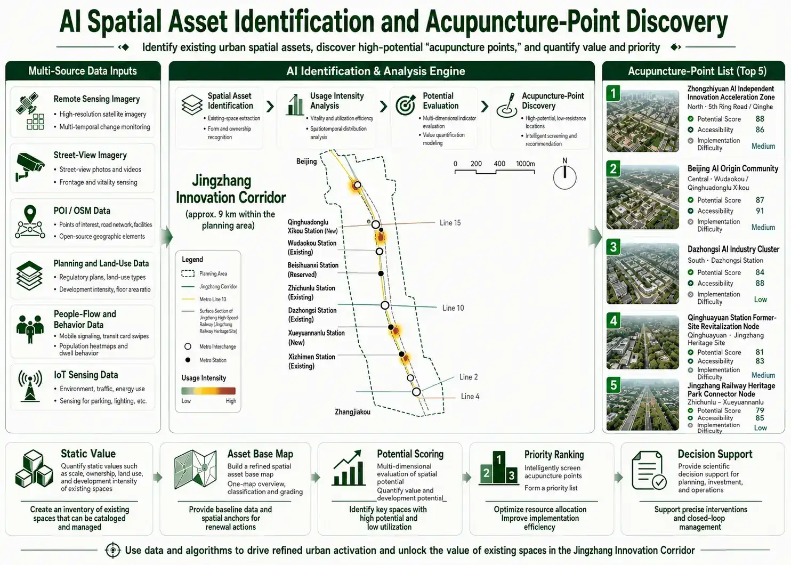
AI spatial-asset identification and acupuncture-point discovery
Figure 1: AI spatial-asset identification and acupuncture-point discovery — fusing the asset database, vitality-evaluation model, and GIS spatial analysis, it automatically identifies high-potential acupuncture points along the Jingzhang corridor and generates priority ranking and preliminary format suggestions.
The Resource Plaza and Resource Map are the visualization entries for asset-identification results: the Resource Plaza supports filtering by space type, heavy/light asset, and tag combinations; the Resource Map displays asset distribution, tenure boundaries, and surrounding facilities on a real basemap, reducing the cost of field survey.
4.2.3 AI-Assisted Decision: Acupuncture-Point Identification, Proposal Generation, and Actor Matching
On the basis of asset digitization, AI plays the assisting decision role of "diagnose—match—generate", converting fuzzy spatial problems into actionable project lists.
Acupuncture-point identification logic
AI acupuncture-point identification follows a five-step flow of "data fusion → candidate screening → comprehensive scoring → priority ranking → field verification":
Conditional data fusion: prioritize public asset records, POI, planning conditions, onsite counts and de-identified complaint statistics; do not assume access to mobile-signalling, Wi-Fi-probe or personal social-account data; any additional source requires legality, necessity and DPIA review;
Candidate screening: set hard thresholds — relatively clear property or coordination possibility, no major structural-safety hazards, basic accessibility;
Comprehensive scoring: compute each point's composite score based on vitality-evaluation indicators, and identify weak links (e.g., large facility gap but high foot traffic);
Priority ranking: combine implementation difficulty, demonstration effect, investment scale, and stakeholder support to generate an annual acupuncture-project library;
Field verification: carry out rapid survey and community interviews at high-priority points, correcting "data blind spots" in AI judgment.
Spatial digital profile
Generate a dynamic "spatial digital profile" for each asset, as the unified language for matching and operational decisions:
Basic profile: location, scale, tenure, current function, constraints;
Vitality profile: foot-traffic time series, crowd composition, activity types, peaks and troughs;
Demand profile: population, industry, and facility gaps within the surrounding 5/10-minute walking circle;
Project-side input: business plan, target customer, investment scale, operating experience, social benefit, time-shared use demand;
Operator-side input: entity type and authorized project-experience and capability tags; do not create personal credit scores or use unrelated behavioral history or geographic preferences;
Matching algorithm: generate recommended ranking based on multi-objective optimization (spatial compatibility, expected revenue, social value, risk controllability, operational sustainability);
Decision closed loop: recommendations enter the "asset details—I'll operate" application channel, the property owner reviews online, and the platform continuously tracks fulfillment performance and feeds back to the model.
Micro-renewal proposal generation flow
For the screened acupuncture points, AI assists in generating "light, fast, economical" micro-renewal proposals:
Problem diagnosis: identify the point's weak links (lack of seating, lighting, greenery, function, barrier-free access);
User profile: analyze the spatio-temporal distribution and needs of surrounding groups (commuters, residents, students, visitors);
Toolkit matching: combine compatible modules from the standardized toolkit (paving, furniture, pavilions, greenery, lighting, digital facilities);
Scenario packaging: overlay localized functions (café-book bar, community kitchen, shared meeting room, courier station, cycling service station, pet-friendly facilities);
Cost estimation: output a rough budget range based on module unit prices and workload;
Proposal output: generate floor-plan schematic, bill of materials, implementation schedule, operation-mode suggestions, and expected effects;
Public feedback: publicize the proposal on the online platform; residents like, comment, and vote; AI aggregates opinions and assists optimization.
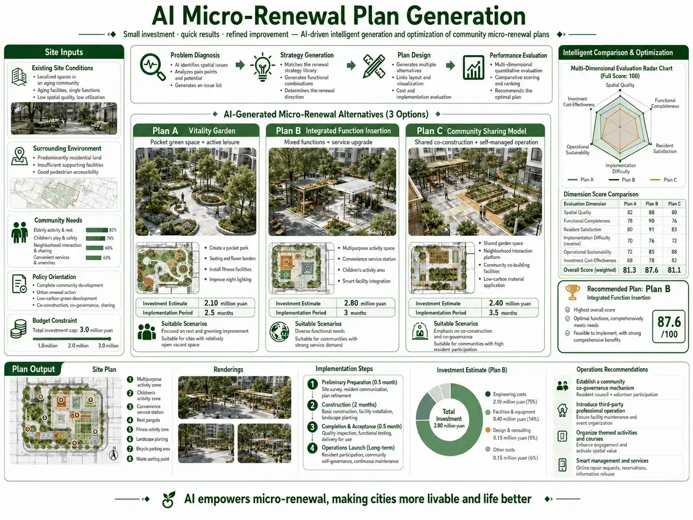
AI micro-renewal proposal generation
Figure 2: AI micro-renewal proposal generation — based on point diagnosis, user profile, and standardized toolkit, AI automatically generates multiple micro-renewal proposals for communities, designers, and operators to select, vote on, and iterate.
The asset-details page is the landing interface for AI-assisted decisions: clicking a resource card lets one view current spatial information, the tenure owner, current photos, operating-concession conditions, location and project overview, parcel details, and the AI-generated suitable formats and revenue projections.
4.2.4 Precise Spatial Activation: Micro-Renewal Toolkit, Innovation Boxes, and Community Embedding
AI decisions ultimately land in concrete spatial renovation and function embedding. This stage emphasizes "small cuts, quick results, accumulable", activating dormant assets with low-cost acupuncture-style intervention.
Standardized micro-renewal toolkit
Build a replicable, low-cost renewal "menu", quickly combining according to a point's weak links:
Ground and interface: permeable-paving refurbishment, railway sleeper-rail texture paving, movable platforms, modular benches, vertical green walls;
Facilities and services: movable furniture, modular pavilions, public Wi-Fi, charging piles, smart light poles, courier lockers, drinking water;
Ecology and landscape: flower boxes, rain gardens, shade canopies, pet-friendly facilities, bike racks;
Digital and interaction: information screens, QR-code guides, NFC tags, environmental-monitoring sensors, foot-traffic counters.
Localized scenario implantation
Embed differentiated functions according to the characteristics of the surrounding population, avoiding "a thousand points all alike":
Commuting nodes: café-book bar, quick breakfast, temporary office, cycling service station;
Within the innovation belt, lay out small community spaces such as "innovation boxes", "joint discussion rooms", and "open-source lounges" at a 5–10 minute walking scale:
Functional positioning: support chance-encounter exchange, impromptu roadshows, cross-sector cooperation, and small events;
Spatial form: modularly assembled, movable, time-shared and reusable, 20–100 m²;
Service embedding: integrate life facilities such as short-rent apartments, shared kitchens, laundry & fitness, childcare, and pet care around community spaces, reducing innovation talent's life friction;
Enterprise–community sharing interface: encourage enterprises to open meeting rooms, exhibition halls, green spaces, and parking resources to the community, in exchange for public-service points or brand exposure, forming a reciprocal mechanism.
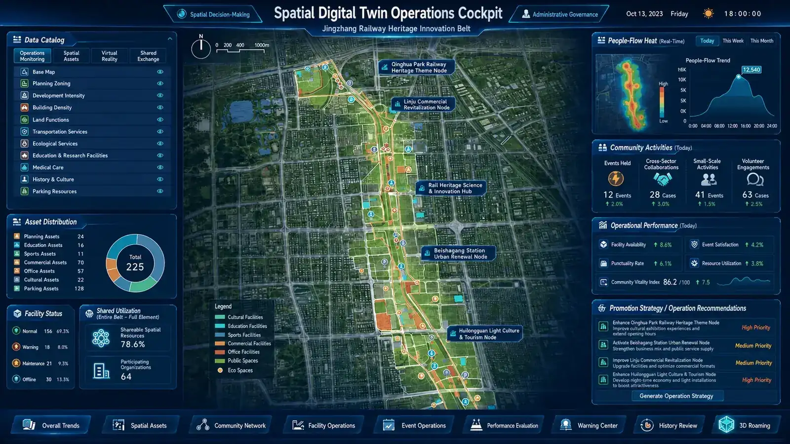
Spatial digital-twin operations cockpit
Figure 3: Spatial digital-twin operations cockpit — aggregates asset location, foot-traffic heat, facility status, operational performance, and community activities into one visualization interface, enabling managers to grasp spatial operation in real time and decide quickly.
4.2.5 Intelligent Operation Scheduling: Time-Shared Use and Dynamic Matching
The same space serving different groups in different time slots is the core of the stock-asset renewal cloud's asset-efficiency improvement. AI operation scheduling unifies the four variables of time, space, user, and activity for optimization.
Time-shared use strategies for four space categories
Space type
Mixed/time-shared strategy
Typical time-slot allocation
Carried functions
Under-bridge grey space
Daytime innovation facilities + nighttime community activities
9:00–18:00 shared office/display; 18:00–22:00 community fitness/market
Weekday walks, lunch breaks; weekend/holiday themed markets, open-air movies
Community gardens, flexible activity fields
AI time-shared operation scheduling mechanism
Slot granularity: build a year-round bookable calendar in 1-hour or 30-minute units;
User stratification: distinguish resident daily, enterprise service, community activity, commercial operation, maintenance & cleaning, with different priorities and pricing rules;
Dynamic pricing: peak-hour market price, off-peak member price, public-benefit hours low-cost or free;
Conflict resolution: when multiple parties apply for the same slot, auto-adjudicate by priority "safety maintenance > contracted long-term lease > public-benefit activity > commercial activity > temporary application";
Smart booking: users view real-time available slots online, book with one click, pay, and obtain access/pass codes;
Handover management: clarify facility handover, cleaning, and security responsibilities across time slots, lowering multi-party shared-use transaction costs.
Function-mixing admission and agreement templates
Admission list: formulate catalogs of encouraged, restricted, and prohibited functions, allowing moderate mixing of commercial, cultural, and innovation services while ensuring safety and compliance;
Agreement template: clarify the using entity, time slot, fee standard, facility handover, safety management, insurance, and breach liability, forming a standardized time-shared operation agreement;
Light-asset matchmaking: introduce professional operators, community curators, university entrepreneurship teams, and other actors, lowering the burden on government and property owners through short-lease, joint-operation, and revenue-share models.
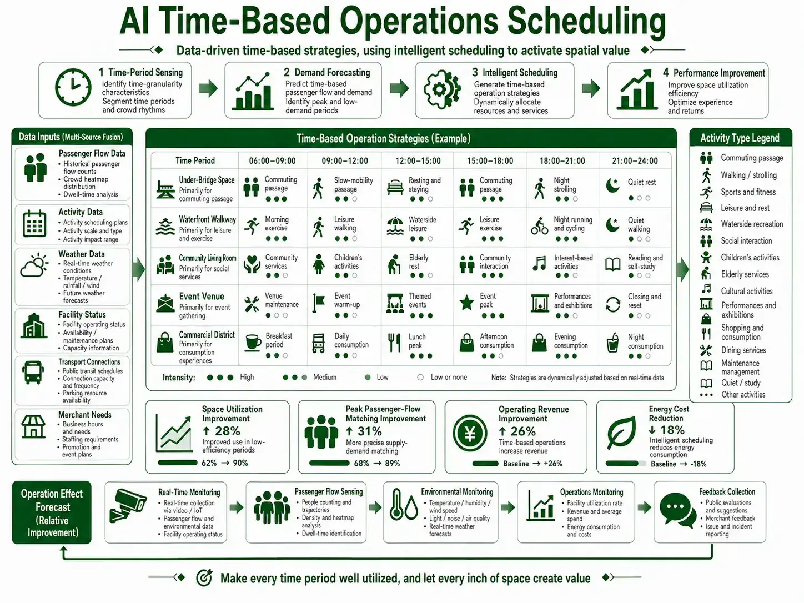
AI time-shared operation scheduling
Figure 4: AI time-shared operation scheduling — based on booking data, foot-traffic prediction, and priority rules, it automatically generates time-slot allocation plans, achieving efficient and safe time-shared reuse of the same space.
4.2.6 Feedback Optimization: Community-Operation Agent and Co-Governance Platform
The last link of the stock-asset renewal cloud loop is continuously collecting usage feedback, making community self-organization the sustained driver of spatial operation.
Community-operation Agent
Deploy an intelligent community-operation Agent as the "connector" among residents, operators, and managers:
Demand sensing: automatically analyze forum posts, demand releases, voting data, and activity feedback, identifying high-frequency needs (e.g., "need nighttime fitness space", "hope to add childcare waiting area");
Spatial matching: based on demand type, crowd size, and time-slot preference, automatically recommend suitable acupuncture points or community spaces and generate activity-plan drafts;
Resource matchmaking: match activities with potential curators, volunteers, partner merchants, and policy support;
Smart reminders: push activity notifications to target audiences and remind operators of facility maintenance and handover;
Feedback learning: after activities, automatically collect satisfaction, participation, energy use, and safety events, updating spatial profiles and operation strategies;
Point incentives: record residents' contributions to co-creation, volunteering, and activity organization, redeemable for public-space use rights or cultural-creative benefits.
Demand release and forum co-governance
Demand release: users fill in demand title, description, type, location, and site photos, releasing demands for rent-seeking, site-seeking, renovation, cooperation, etc.;
AI matching: the system automatically matches citizen/enterprise demands with the platform's online assets, and reverse-pushes potential operation opportunities to property owners;
Forum discussion: discuss specific assets or renewal topics; residents, designers, and operators co-build proposals, like and comment, forming a transparent co-governance atmosphere;
Policy information: centrally display policies on stock-asset revitalization, urban renewal, park supporting services, lowering the information threshold.
Performance feedback and model iteration
Operation-performance dashboard: display each asset's usage rate, revenue, satisfaction, energy use, and safety events in real time;
Problem closed loop: establish ticket flow for complaints, faults, and misuse, tracking resolution;
Model iteration: feed operation data back into the asset database and matching algorithm, continuously optimizing acupuncture-point identification, proposal generation, and actor-matching performance.
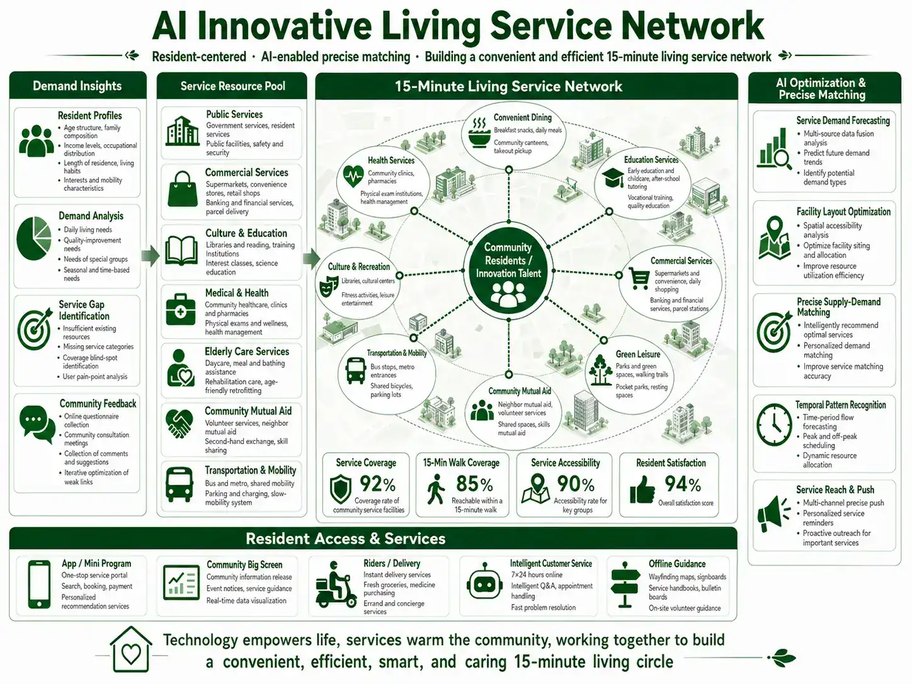
AI innovation life-service network
Figure 5: AI innovation life-service network — through the community-operation Agent, demand release, forum co-governance, and point incentives, it converts resident and innovation-talent needs in real time into spatial-operation and micro-renewal proposals, forming a self-growing service network.
Demand release and the forum are the human–machine collaborative entries for feedback optimization: residents release needs with one click, AI automatically matches spaces and potential operators; the forum hosts co-building discussions around specific assets, forming a transparent co-governance atmosphere.
4.2.7 How the Three AI+ Scenarios Unfold
The stock-asset renewal cloud mini-program is the lightweight user interface of the above loop. The following three scenarios convert "spatial-asset identification → AI-assisted decision → precise spatial activation → intelligent operation scheduling → feedback optimization" into perceptible user experience.
Scenario 1: discovering assets — resource plaza and resource map
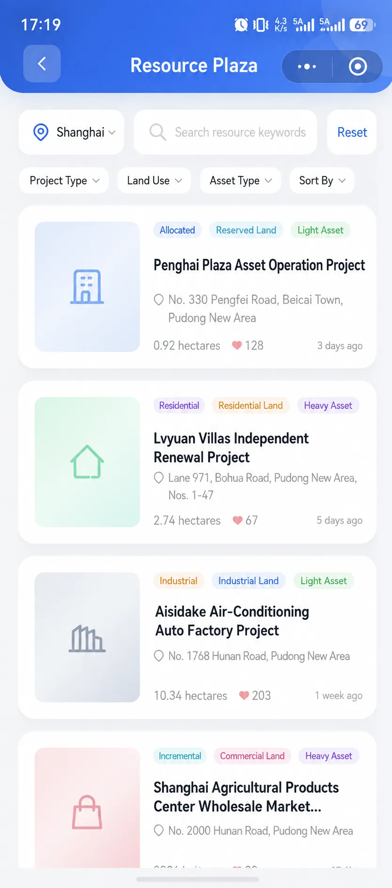
Resource Plaza
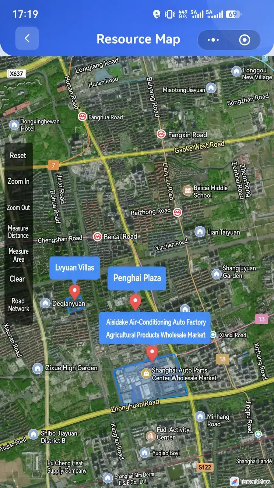
Resource Map
Service objects: local government, state-owned platforms, spatial operators, innovation enterprises, community curators, citizens.
Spatial placement: covering activatable assets along the Jingzhang corridor such as low-efficiency land, under-bridge space, idle buildings, and corner green space.
Smart experience:
1. Resource Plaza browsing: enter the Resource Plaza from the homepage, filter by "all/hot assets/light assets/heavy assets", and quickly locate by space type and operation mode;
2. Multi-dimensional tag search: support combined search by city, land type, tag, and sort order; AI recommends potentially matching assets based on the user's historical preferences and project profile;
3. Resource Map positioning: switch to the Resource Map to quickly view asset distribution, tenure boundaries, and surrounding facilities on a real basemap, reducing field-survey cost;
4. Closed-deal case reference: display historical deal cases via "Resource Column", offering operators referable formats and revenue models.
Data and privacy boundary: public spatial-asset information is desensitized; tenure and financial sensitive information is open only to authenticated operating entities.
Scenario 2: applying to operate — asset details and "I'll operate"
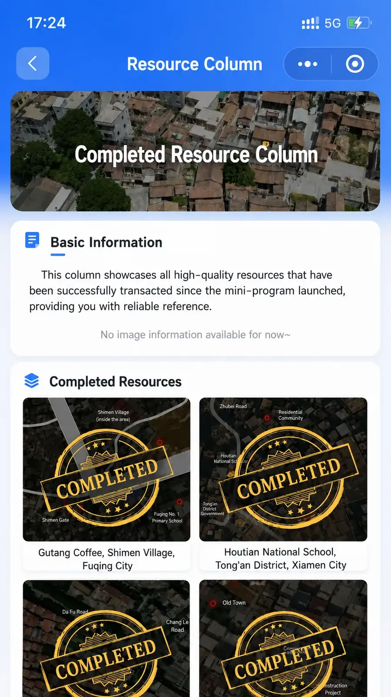
Resource Column
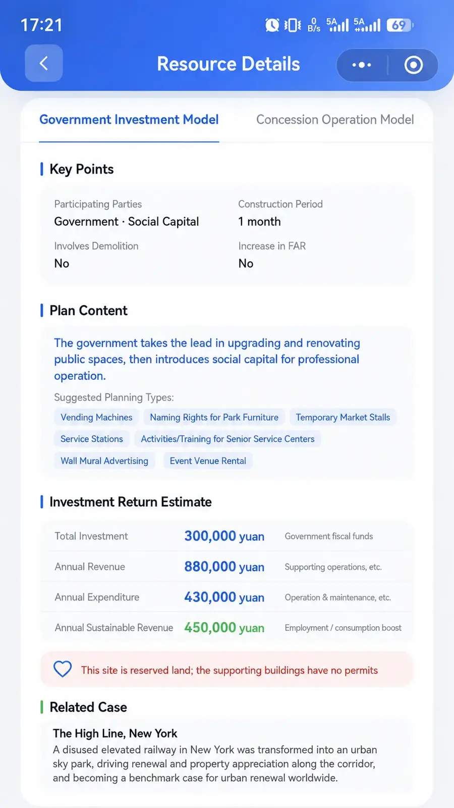
Resource Details
Service objects: prospective operators, community curators, innovation enterprises, cultural-creative teams.
Spatial placement: any online asset within the Jingzhang corridor.
Smart experience:
1. Asset-details card: view current spatial information, tenure owner, land area, floor area, leasing/selling intent, current photos, operating-concession conditions, location and project overview, parcel details;
2. AI fit assessment: the system automatically assesses function-mixing feasibility, time-shared use plan, and revenue projection based on asset features and the project plan submitted by the operator;
3. One-click apply to operate: the operator clicks "I'll operate (quick application)" to submit intent, and the platform routes it to the state-owned platform/property owner for review;
4. Quick consultation and connection: a "quick consultation" entry lets operators directly communicate with platform service or the property owner on policy, tenure, renovation requirements, etc.
Data and privacy boundary: the operator's business plan and contact information are visible only to authorized reviewers; public information contains no personal privacy.
Smart experience:
1. Demand release: the user clicks the bottom "release demand" button, fills in demand title, description, contact, demand type, selection type, and city, and uploads site photos, releasing rent-seeking, site-seeking, renovation, cooperation, and other demands;
2. Demand-plaza matching: the system AI-matches citizen/enterprise demands with the platform's online assets, and reverse-pushes potential operation opportunities to property owners;
3. Forum discussion: discuss specific assets or renewal topics in the forum; residents, designers, and operators can co-build proposals, like and comment, forming a transparent co-governance atmosphere;
4. Policy-information query: centrally display policies on park supporting services, stock-asset revitalization, urban renewal, etc. in the policy-information section, lowering the information threshold for operators and citizens.
Data and privacy boundary: contact details are private by default and disclosed only to a specified recipient after explicit, revocable consent; correction, deletion and appeal are supported.
Mismatch between AI S&T resource clustering and the supporting facilities system
Fill talent's daily-interaction and life-service gaps through micro-renewal acupuncture points, innovation boxes, and life-service embedding
Reuse and redevelopment of low-efficiency land along the dual-rail spatial corridor
Re-match projects and operators to low-efficiency space along the railway corridor via the stock-asset renewal cloud platform, raising asset value
Contradiction between a complex transport system and lagging urban transport management
Implant micro-spaces such as transfer-waiting, cycling-service, and temporary-office around bridges and stations, improving transfer experience and slow-traffic continuity
Contradiction between historical-cultural conservation and spatial renewal and utilization
Acupuncture-style intervention minimally disturbs heritage-adjacent space; function mixing lets historical space carry contemporary life services
4.2.9 Master Graph of Intelligent Approaches
Urban-design layer
Intelligent approach
Output
Asset identification
Spatial-asset census + tenure & planning-condition database + heavy/light asset classification + potential-rating model
Jingzhang corridor low-efficiency space asset map and asset-details cards
Asset discovery
Resource Plaza category search, Resource Map positioning, hot and closed-deal case recommendation
Spatial-asset list matching user demand
Project matching
AI space–project matching engine, revenue projection, operating-concession review
Fitted operation plans and time-shared use agreements
Annual acupuncture-style renewal project library and implementation list
Spatial operation
Booking-sharing platform, foot-traffic monitoring, energy and safety warning
Efficient and safe time-shared operation of low-efficiency space
Community governance
Community profile, activity matching, co-creation records, point incentives
Self-organizing innovation-community network
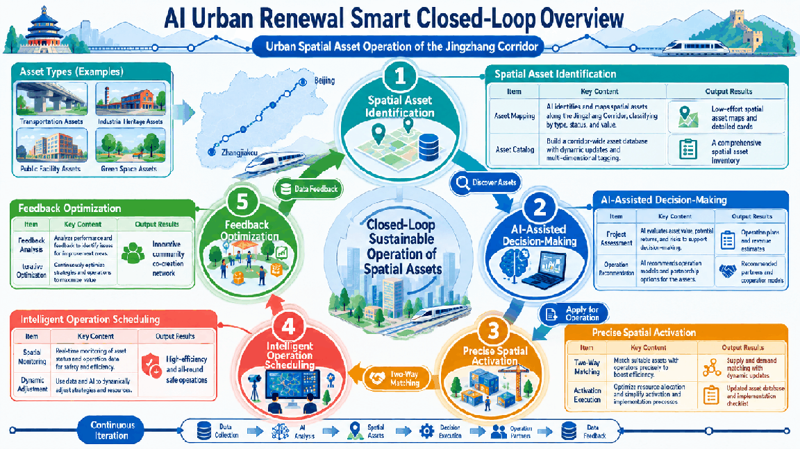
AI stock-asset renewal cloud intelligent closed-loop master graph
Figure 6: AI stock-asset renewal cloud intelligent closed-loop master graph — from spatial-asset identification, AI-assisted decision, precise spatial activation, and intelligent operation scheduling to feedback optimization, it forms a continuously iterating "data—algorithm—space—operation—co-governance" urban spatial-asset operation loop.
4.2.10 Interfaces with Other Strategies
With 4.1 continuous-spectrum facilities: innovation boxes and community spaces are the end touchpoints of the innovation-service spectrum, providing flexible offline extensions for incubation, acceleration, and achievement-transfer nodes;
With 4.3 menu-selected smart mobility: acupuncture-style micro-renewal points and under-bridge spaces can serve as slow-network stations, cycling service stations, and transfer-waiting spaces;
With 4.4 flexible resilient computing: time-shared use of low-efficiency space can overlap with the resilience commons and open-source trail, enhancing urban redundancy and emergency-response capacity;
With 4.5 living-heritage development: industrial-relic renovation spaces can be incorporated into the stock-asset renewal cloud platform for unified operation, letting historical space carry both cultural narrative and innovation life services.
4.2.11 Evaluation Metrics
Coverage of low-efficiency space asset census and completeness of asset-details cards;
Number of assets online in the Resource Plaza and heavy/light asset classification accuracy;
Number and implementation rate of acupuncture-style micro-renewal points;
Number of function-mixing and time-shared use projects;
Number of registered operating entities on the stock-asset renewal cloud platform, matching success rate, and "I'll operate" application conversion rate;
Number of project-demand releases and supply-demand two-way matching deals;
Forum active-user count and resident/talent participation;
Usage duration and reuse rate of innovation boxes/community spaces;
Life-service facility coverage and 5-minute accessibility rate;
Asset return rate or rent-increase rate after low-efficiency space revitalization;
Public satisfaction survey score on surrounding space;
Average cycle of micro-renewal projects from demand submission to implementation.
4.2.12 Design Boundary
This strategy is a conceptual strategy for an urban-design competition, not an independent implementation plan. The specific tenure, planning conditions, fire-safety and municipal capacity, and operating-cost and revenue models of low-efficiency spaces must be based on official materials and pilot calculations. Before formal deepening, the following should be supplemented: corridor low-efficiency land list, property owners and lease status, regulatory-planning conditions, structural-safety assessment, municipal-capacity calculation, operating-cost projection, and public-participation records.
Key References
Locally cleared summary of the "Centennial Jingzhang AI Innovation Belt Open Call Task Book for Intelligent Agents".
Minutes of the Jingzhang Railway project internal discussion meeting, August 18, 2026.
14 "Stock-Asset Renewal Cloud: Urban Spatial-Asset Operation Mini-Program" PPT (2024.10): proposes the stock-asset renewal cloud concept of "fit projects to spaces, tailor spaces to projects", and a three-stage operation model of asset exploration, asset packaging, and information distribution.
China Academy of Urban Planning and Design: "Jingzhang Railway Heritage Park Through-Connection Conceptual Scheme Solicitation [CAUPD]", March 2020.
China Architecture Design & Research Group: "Jingzhang Railway Heritage Park Through-Connection Conceptual Scheme Solicitation [CADG] Text", 2020.
AI map/map-three-layers.html and AI map/osm-data.js: provisional scope and OSM road, rail, water-system, and green-space background data, used only for design research and spatial-relation identification.
Before formal inclusion in the submission package, the specific pages and citation boundaries of external materials should be registered in sources.json, and unknown conditions such as siting, tenure, structural safety, municipal, and fire-safety should be registered in assumptions.json.
4.3 Menu-Selected Smart Mobility StrategyStrategy for the "complex transport system and lagging management" (transport · rail · slow-traffic, including slow-traffic stitching and under-bridge space activation, also responding to "dual-rail low-efficiency land")
Transport · Rail · Slow Traffic — Making the "Intelligent Spine" the Flowing Main Spine
Transform the Jingzhang Railway Heritage Park from an "east–west severing railway barrier" into a "north–south through-connecting public intelligent spine". Based on the spatial structure of "one belt, three cores, multi-point co-creation" and the "blue-green slow-traffic composite loop", it gives verifiable road-network, rail, slow-traffic, parking, and external-transport proposals: with slow traffic and blue-green as the main spine, rail as the backbone, and AI-native mobility as the capability, letting the mobility system serve talent flow, nearby compute supply, and scenario testing.
One belt · three cores · multi-point · composite loop｜Graded road network · layered transit · networked slow traffic · verifiable metrics
4.3.1 Transport Proposition and Strategy
4.3.1.1 Proposition: the intelligent spine is first a mobility system
This proposal carries the overall positioning of "Centennial Jingzhang · AI Innovation Belt" — a world-class AI source, and transport is precisely this source's mobility system: the vessels of talent flow, the capillaries of nearby compute supply, and the running chassis of scenario testing. The Jingzhang Heritage Park can become the "intelligent spine" not because it is a green corridor, but because it simultaneously carries two mobility functions: vertical transmission (north–south through-connection) and horizontal stitching (east–west connection). SourceStandard
The transport system follows the principle of "governance before technical apparatus": AI-native transport is not about piling up equipment or showing off technology, but about organizing open contribution, real testing, public safety, and long-term operation into mobility rules, with every scenario having data minimization, explainability, human review, and a clear operating entity; flexible resilience, as the robustness requirement of the mobility system, is embodied in emergency scenarios and the indicator system.
4.3.1.2 Transport development strategy
Strategy
Connotation
Placement
Slow-traffic priority
The Jingzhang corridor and surroundings are led by walking and cycling, with motorized traffic yielding to slow traffic
One-belt main spine, composite loop
Transit priority
Rail + regular bus + feeder form the backbone, ensuring punctuality and priority passage
Rail portals, bus corridors
TOD integration
Organize "station—slow traffic—industry" integration around stations (conceptual, no preset intensity)
Qinghe Station, Dazhongsi Station, Wudaokou, West Qinghua East Road
Demand management
Guide green travel through parking supply, time-shared sharing, and unmanned feeder
Parking zones, P+R, MaaS
Accordingly, two transport zones are delineated: the slow-traffic priority zone (the Jingzhang Heritage Park and three-core public space, with motorized speed limits and right-of-way yielding) and the transit priority zone (within 500 m of rail portals, with transit priority and densified feeders). Zone boundaries are conceptual suggestions, pending re-verification against official regulatory planning and traffic organization.
4.3.2 Transport Skeleton and Spatial Structure
4.3.2.1 Current road network
The roads in this belt form a "ring + vertical axis" skeleton. Three ring roads (North 3rd/4th/5th Ring) and the Jingzang Expressway carry express traffic; Zhongguancun Avenue, Xueyuan Road, and others carry north–south arterial traffic; Zhichun Road, Chengfu Road, and Qinghua East Road carry east–west connections. The Jingzhang corridor was originally a railway; after its ground conversion into a heritage park, road micro-circulation and branch-road networks on both sides are generally insufficient, with many dead-end roads — the main shortcoming for slow traffic and parcel accessibility.
4.3.2.2 Current rail
Rail
Relation to this belt
Key nodes
Line 13
Roughly along the old Jingzhang alignment, closest to the spine
Western north–south line, serving universities and Zhongguancun
Zhongguancun—Peking Univ. East Gate—Renmin Univ.—Xizhimen
Line 10
Ring line, east–west transfer
Zhichun Road—Xitucheng
Jingzhang HSR
Northern portal hub
Qinghe Station
16 / 12 / 15 / Changping lines
Supplementary network, alignment to be verified
West Qinghua East Road, etc. (to be verified)
Alignments and stations are conceptual judgments; precise alignments, station entrances, transfers, and ridership must be verified against OSM / official data.
4.3.2.3 Current bus, slow traffic, parking, and external transport
Bus: regular buses run along main roads, with insufficient transfer connection to rail stations and lacking feeder and customized bus organization;
Slow traffic: the Jingzhang main spine has strong continuity, but there are few east–west crossings and many walls, leaving the slow network "a spine without a network";
Parking: the current state is mainly parcel-configured, lacking P+R and time-shared sharing organization, with insufficient linkage between static and dynamic traffic;
External transport: Qinghe Station is the HSR portal, but "station–city" integrated feeder and regional freight organization need strengthening.
4.3.2.4 Current-state diagnosis
Triple severance: the North 3rd/4th/5th Ring cut horizontally three times, with slow-traffic continuity relying on a few nodes;
Station disconnection: stations and industrial space are isolated by roads and walls, with weak "last-mile" feeder;
Insufficient east–west stitching: few crossings and many walls, with weak linkage between the university side and the park/community side;
A spine without a network: the slow main spine is strong, but the branch network, micro-circulation, and slow-network density are insufficient;
Uneven accessibility: 5/10/15-minute accessibility, slow-traffic break points, and public-service coverage gaps are derived by spatio-temporal analysis and the digital sandbox "Module B · Innovation Interaction and Slow Traffic", cross-checked against geometry/roads.geojson and geometry/public_space.geojson.
4.3.2.5 Road-network system and sections
4.3.2.5.1 Road-network hierarchy
Grade
Function
Roads in this belt (conceptual)
Handling principle
Expressway
Long-distance motorized traffic, fully enclosed
North 3rd/4th/5th Ring, Jingzang Expressway
At intersections with the Jingzhang corridor, prioritize continuous slow-traffic crossing
Arterial
Inter-area traffic
Zhongguancun Avenue, Xueyuan Road, Zhichun Road
Transit priority, separation of people and vehicles, optimize intersections
Secondary road
Intra-area traffic, diverting arterials
Xitucheng Road, Chengfu Road, Dazhongsi East Road, Heqing Road
Organize micro-circulation, connect slow traffic and bus
Branch road
Parcel access, slow traffic and micro-circulation
Internal park/community roads (to be supplemented)
Densify the branch network, open dead-end roads
The core action is to densify the branch network and open dead-end roads, raising branch-network density to support slow-traffic accessibility and bus feeder. Road grades and red-line widths are conceptual judgments, pending official regulatory-planning confirmation.
4.3.2.5.2 Road sections and traffic organization
Urban road sections: arterial/secondary roads adopt the complete section of "motor lane + non-motorized lane + sidewalk + green belt", with continuous non-motorized lanes not mixed with motor traffic (conceptual suggestion);
Main-spine section: the Jingzhang corridor adopts the composite section of "blue-green on top, slow traffic in the middle, feeder on the side" (see this section 4.3.2.8);
Intersections: at key intersections such as Dazhongsi, Wudaokou, and cross-ring road, propose conceptual organization of people-vehicle separation, slow-traffic crossing, and signal-timing optimization, without presetting channelization and engineering forms;
Micro-circulation: organize one-way/low-speed micro-circulation with the branch network and internal park roads, reducing through-traffic entering the slow-traffic core area.
4.3.2.6 Public-transport system
4.3.2.6.1 Three-tier bus hierarchy
Tier
Carrier
Function
Backbone tier
Rail (13/4/10/Jingzhang HSR, etc.)
High-capacity rapid links among the three cores and externally
Regular tier
Regular bus + precise bus
Coverage along arterial/secondary roads, vehicle-road coordination priority, punctual arrival
Qinghe Station: a comprehensive portal of HSR + rail + bus + feeder, handling external arrival/departure and transfer;
Dazhongsi Station: rail transfer + bus hub + four-quadrant pedestrian connection, handling southern dispersal;
Wudaokou, West Qinghua East Road: rail + bus + slow-traffic feeder points, handling the university-side dispersal.
The integrated "station—slow traffic—industry" development intensity around stations is a conceptual suggestion, not presetting plot ratio and building height, pending official regulatory-planning conditions.
4.3.2.7 Slow-traffic system
4.3.2.7.1 Pedestrian-system hierarchy
City level: the Jingzhang main spine (north–south through the three cores, linking Qinghe Station and Xizhimen);
District level: east–west stitching connections (cross-ring, cross-corridor, station four-quadrant);
Community level: micro-circulation branch roads and public space, serving daily travel.
4.3.2.7.2 Bicycle system and barrier-free
Main skeleton: the Jingzhang main-spine cycling path (separate section or time-shared from walking);
Secondary skeleton: stitching lines and composite-loop cycling paths;
Micro-circulation: internal park/community bike lanes, connecting to shared-bike parking;
Barrier-free: the main spine, portals, crossings, and public space are barrier-free throughout, with continuous ramps, tactile paving, and barrier-free feeder.
The core verifiable indicators of the slow-traffic system include: slow-network density (slow-path length / land area), slow-traffic coverage (slow-path buffer area / land area), number of slow-traffic break points, and 5/10/15-minute slow-traffic accessibility. Formulas and calculation calibers are in Section 4.3.5; specific values await recomputation after official boundaries and road data are supplemented.
4.3.2.8 One Belt · Three Cores · Multi-Point · Composite Loop
4.3.2.8.1 One belt (north–south main spine)
The Jingzhang Heritage Park, as the main spine, is divided into three segments by the three cores, each bound to a rail portal:
Segment
Range
Bound portal
Leading activity
North segment
Qinghe Station—Zhongzhiyuan—North 4th Ring
Qinghe Station portal
HSR arrival/departure feeder, park commuting, Qinghe waterfront
Middle segment
North 4th Ring—Origin Community—Zhichun Road
Wudaokou · West Qinghua East Road portal
Near-campus slow traffic, open-source interaction, Xiaoyue River waterfront
South segment
Zhichun Road—Dazhongsi—Xizhimen
Dazhongsi Station portal
Rail dispersal, intelligent economy, Zhuan River waterfront
The main-spine section is "blue-green on top, slow traffic in the middle, feeder on the side" (walking/cycling/blue-green/feeder), with section width and right-of-way adjusted by segment. The main spine's "reconfigurable right-of-way" is the spatial prerequisite for resilience switching: during large events or emergencies, the cycling path can temporarily convert to pedestrian evacuation or emergency passage.
4.3.2.8.2 Three-core portals and east–west stitching
The three cores each become a "rail—slow traffic—industry" portal, and respectively carry the official positioning — Zhongzhiyuan (open win-win · innovative development), Origin Community (reinforce advantages · youthful self-strengthening), Dazhongsi (factor agglomeration · ecosystem synergy) — the transport portals are the mobility support of these positionings; stitching prioritizes three lightweight actions of crossing continuity, station integration, and wall opening, without presetting bridge/tunnel works:
The specific forms of nodes (overpass, underpass, underground connection) are all conceptual suggestions, not constituting engineering-feasibility conclusions.
4.3.2.8.3 Composite loop
The composite loop is the closed mobility form of "one belt, three cores, multi-point": relying on the water system (Qinghe—Xiaoyue River—Zhuan River) and the public spaces of universities, parks, and communities, it forms several slow-traffic loops connecting the main spine and the three cores. On weekdays it carries commuting and near-campus slow traffic; on weekends it carries blue-green leisure, AI experience, and activity routes; the slow-traffic break points, interaction hot spots, east–west stitching nodes, and ground-floor opening suggestions on the loop are derived by spatio-temporal analysis and the digital sandbox "Module B".
4.3.2.9 Static traffic and parking
4.3.2.9.1 Parking zones
Core strict-control zone (Jingzhang main spine and three-core public space): led by transit and slow traffic, strict parking supply, encourage sharing;
Peripheral moderate zone (park and community periphery): mainly parcel-configured, combined with P+R and time-shared sharing.
4.3.2.9.2 Parking organization
P+R / park-and-ride: Qinghe and Dazhongsi stations set P+R (conceptual suggestion), guiding external vehicle flow to transfer to rail;
Non-motorized parking: portals and public spaces set concentrated parking and transfer lock racks, connecting to shared bikes, not occupying the main pedestrian way;
Time-shared sharing: with "full-domain intelligent parking" as the method reference, link static parking and dynamic traffic through data (conceptual suggestion).
Parking configuration scale, berth layout, and charging must be based on official regulatory planning and traffic conditions; this proposal does not give definitive values.
4.3.2.10 External transport and freight logistics
4.3.2.10.1 External transport
Qinghe Station is the belt's HSR portal, handling Jingzhang HSR and regional arrival/departure; regional connections rely on the Jingzhang HSR, ring expressways, and rail network, forming the external transfer chain of "HSR arrival/departure—rail feeder—slow-traffic entry to the spine". External-transport organization is a conceptual suggestion, pending confirmation of railway, rail, and road conditions.
4.3.2.10.2 Freight and logistics traffic
Freight corridors: freight uses peripheral expressways and dedicated corridors, avoiding crossing the slow-traffic core area (conceptual suggestion);
Unmanned delivery logistics: sorting—ground unmanned-vehicle/drone delivery—terminal stop handover, with logistics flow time-shared or section-separated from walking, independent of evacuation corridors;
Low-altitude logistics: drone routes and takeoff/landing points must be confirmed through airspace and safety management, not presetting routes.
4.3.3 Five AI+ Transport Scenarios
The five AI+ scenarios land "AI-native transport" in experienceable, operable reality: each scenario corresponds to a real transport problem — talent flow, last-mile delivery, bus punctuality, mobility services, resilience assurance — and gives a complete "space—service—governance" closed loop, with service objects, spatial placement, system architecture, data governance, operating entity, and exit mechanism each spelled out.
The five AI+ scenarios are not isolated devices, but are uniformly operated by one smart-transport management platform — first presenting the platform prototype and seven modules, then unfolding the five scenarios one by one.
The platform gathers the scheduling and governance of the five scenarios into one entry, following the "governance before technical apparatus" principle: AI only outputs suggestions, while evacuation, road closure, and scheduling are confirmed by humans; data is minimized, desensitized, and traceably logged. The platform is not an independent product, but the operational support layer of the urban-design proposal.
4.3.3.1 Platform prototype
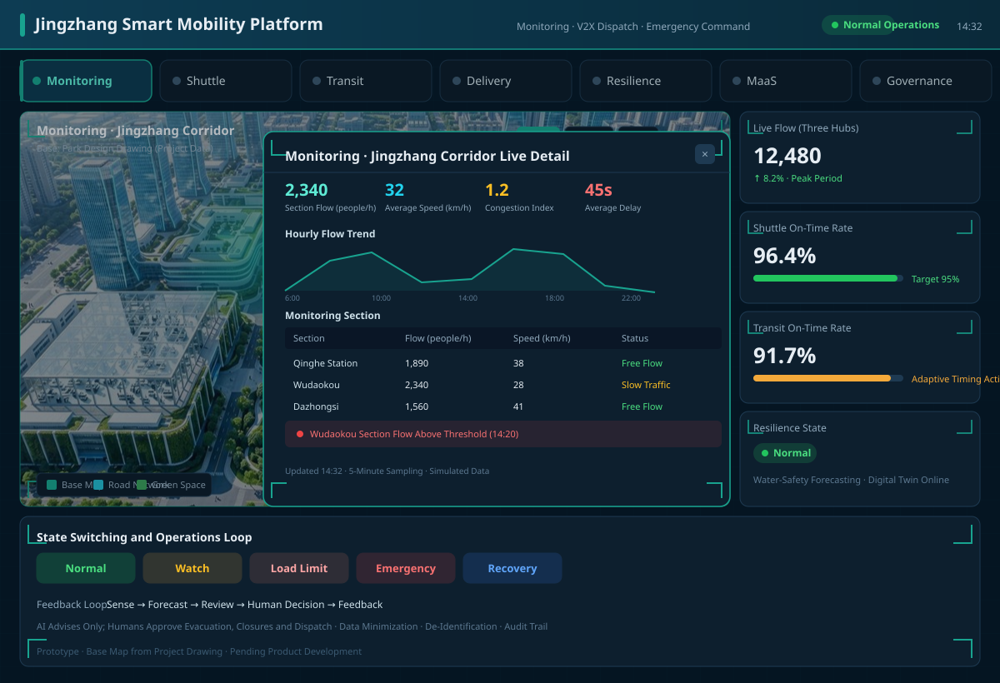
Smart-transport management platform dashboard prototype: top module switch + park basemap + operation-monitoring detail popup + KPI + five-state switch (prototype illustration, to be deepened for productization)
4.3.3.2 Seven functional modules and five-scenario mapping
Module
Corresponds to
Main function
Operation monitoring
Full-domain situation
Real-time sensing of passenger flow/road conditions/water level, section metrics and alarms
Trip planning, transfer recommendation, carbon points
Data and governance
Cross-scenario
Data grading, desensitization, audit trail, human review
The following scenarios borrow the "vehicle-road coordination / precise bus / autonomous driving + MaaS / digital twin" capabilities and the "three-line fusion / full-domain parking / cloud twin / low-altitude logistics" framework of smart-transport solutions. Capabilities are method references, not constituting a commitment to build or implement for any party.
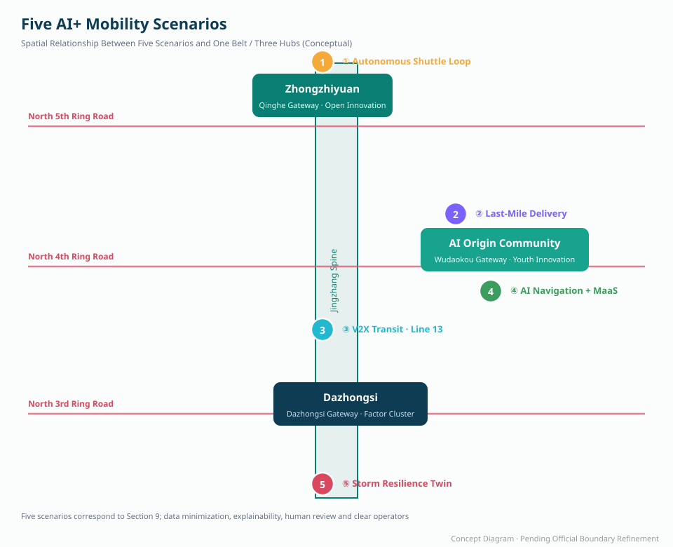
Spatial relation of the five AI+ transport scenarios to the one-belt-three-cores (conceptual illustration, pending official-boundary refinement)
Positioning and objects: backbone feeder among the three cores, serving commuters, visitors, and Qinghe Station HSR arrival/departure passengers, shortening talent's travel time among the three cores. Spatial placement: along Qinghe Station—Dazhongsi Station, low-speed unmanned feeder (hydrogen/electric minibus, design speed 20–40 km/h), stations set at 300–500 m conceptual spacing, combined with the main-spine feeder belt and three-core portals.
System architecture (end—edge—cloud)
End: on-board LiDAR/millimeter-wave radar/cameras, roadside RSU and holographic-intersection sensing;
Edge: edge-computing units at portals and feeder stations, handling low-latency obstacle avoidance and docking decisions;
Data closed loop: sensing → positioning → path planning → control → arrival feedback → scheduling optimization.
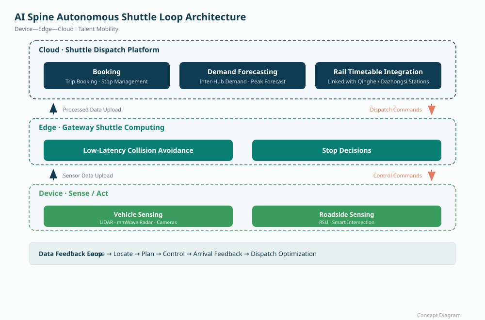
Scenario 1 system architecture: end (vehicle/roadside sensing)—edge (portal edge compute)—cloud (feeder scheduling)
Service flow: booking/fixed-stop docking → vehicle-road coordinated sensing → three-core portal transfer → arrival info feedback → scheduling optimization.
Data and governance: passenger flow is publicly aggregated, vehicle status is authorized, personal trips are restricted; only desensitized passenger-flow and scheduling data is used, no personal trajectories collected; on sensor failure: slow down → pull over → remote takeover; operating routes and stops are confirmed by the transport department, fully traceable.
Human review and operation: operating entities are the source operator + autonomous-driving operator; a safety officer rides along or takes over remotely; the non-digital alternative is regular bus feeder.
Metrics and verification: feeder response latency, commute time among the three cores, arrival punctuality; test on closed/semi-open segments first, open only after reaching the safety threshold.
Implementation and exit: cost level medium; pilot is the single Qinghe Station—Dazhongsi Station line; stop if safety fails to meet standards, reverting to regular feeder.
Differentiator (highlight): running along the Jingzhang main spine with rail portals as ends, serving talent flow rather than scenic sightseeing — the unmanned feeder is the vessel of talent flow among the three cores, not a tourism tool.
Positioning and objects: last-mile delivery for parks/communities/universities, serving park enterprises, community residents, and university students and staff, landing "nearby compute + life" on the last kilometer. Spatial placement: Zhongzhiyuan and the Origin Community set delivery stops and end warehouses, combined with low-altitude drone takeoff/landing platforms.
Scenario 2 system architecture: end (unmanned vehicle/drone)—edge (end-warehouse edge)—cloud (delivery scheduling)
Service flow: sorting → ground unmanned-vehicle/drone delivery → stop-point handover → signing and exception reporting → scheduling review.
Data and governance: order and delivery-status minimized, recipient information minimized; no-fly zones, air routes, and takeoff/landing points confirmed through airspace and safety management; logistics flow time-shared or section-separated from walking, independent of evacuation corridors.
Human review and operation: operating entities are the source operator + logistics operator; delivery exceptions are backed up by humans; the non-digital alternative is traditional courier + self-pickup lockers.
Implementation and exit: cost level light (reusing existing warehouses and roads); pilot is the single Zhongzhiyuan park; shrink scope if safety or complaints fall short.
Differentiator (highlight): reusing redundant rail/road capacity, delivery time-shared or section-separated from walking, serving AI talent's high-frequency small items — landing low-altitude delivery on the "nearby compute + life" last kilometer.
Scenario 3: vehicle-road coordinated precise bus
Positioning and objects: punctualization of Line 13 corridor and cross-corridor bus, serving bus passengers and supporting east–west stitching. Spatial placement: integrated "cloud—edge—vehicle" renovation of traditional bus along the Line 13 corridor, with holographic-intersection sensing points.
System architecture (end—edge—cloud)
End (roadside): RSU, millimeter-wave radar, holographic intersection, signal collector;
Edge: intersection edge computing, dynamic signal timing;
Cloud: bus dispatch center, service-frequency and route optimization;
Data closed loop: roadside sensing → dynamic timing → bus priority → arrival feedback → scheduling optimization.
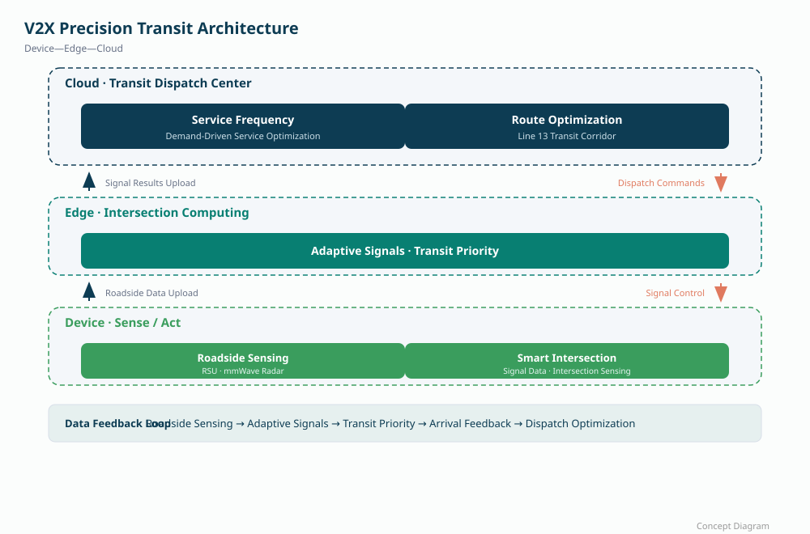
Scenario 3 system architecture: end (roadside sensing)—edge (intersection edge compute)—cloud (bus dispatch center)
Service flow: roadside sensing → dynamic timing → bus priority → arrival info feedback → scheduling optimization.
Data and governance: only aggregate vehicle position, speed, and passenger-flow data, not collecting personal identity; signal control and priority strategies are confirmed by the transport-management department, with human takeover preserved.
Human review and operation: operating entities are the traffic-operation department + source operator; signal strategies manually confirmed; the non-digital alternative is fixed timing + manual dispatch.
Metrics and verification: bus on-time arrival rate, signal-timing self-adaptation rate, peak punctuality improvement.
Implementation and exit: cost level medium (roadside renovation); pilot is the single Line 13 corridor bus corridor; revert to fixed timing if effect falls short.
Differentiator (highlight): precise bus serves the Line 13 corridor's east–west stitching — landing bus punctualization on cross-corridor connection, rather than a single hub's dispersal.
Scenario 4: AI slow-traffic navigation and MaaS integrated mobility
Positioning and objects: one-stop slow-traffic + rail + feeder mobility, serving residents, students and staff, entrepreneurs, and visitors. Spatial placement: with the Jingzhang vitality belt as the interface, use low-intrusion sensing and explainable wayfinding to identify slow-traffic break points, crowded nodes, and barrier-free needs.
Edge: vitality-belt edge nodes, slow-traffic break-point and crowding identification;
Cloud: MaaS platform, trip planning, transfer recommendation, carbon points;
Data closed loop: trip planning → transfer recommendation → slow-traffic navigation → carbon-point feedback → break-point update.
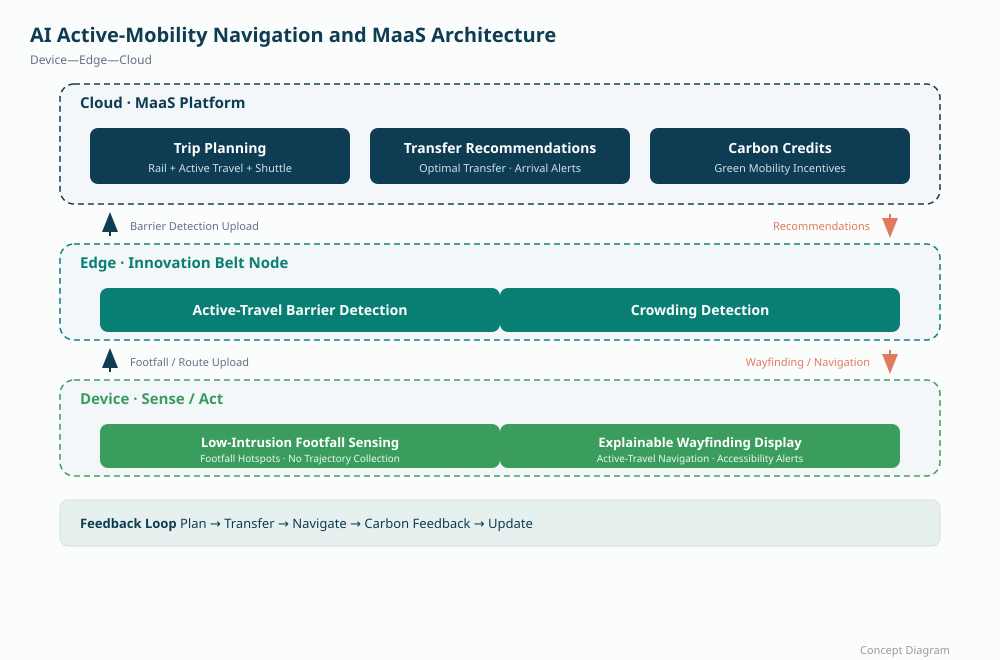
Scenario 4 system architecture: end (pedestrian-flow sensing/wayfinding)—edge (vitality-belt edge)—cloud (MaaS platform)
Service flow: trip planning (rail + slow traffic + feeder + shared bikes) → transfer recommendation → slow-traffic navigation → carbon points and travel feedback.
Data and governance: only aggregate pedestrian-flow and path data, no personal profiling, no commercial recommendation; wayfinding and recommendation content is desensitized and manually reviewed; barrier-free conclusions are professionally rechecked.
Human review and operation: operating entities are the source operator + mobility-service platform; wayfinding and recommendations desensitized and reviewed; the non-digital alternative is static signage + manual inquiry.
Metrics and verification: 5/10/15-minute slow-traffic accessibility, number of slow-traffic break points identified, transfer-recommendation adoption rate.
Implementation and exit: cost level light; pilot is a single segment of the Jingzhang main spine; remove recommendations if privacy or misdirection problems arise.
Differentiator (highlight): MaaS serves the slow main spine and three-core feeder, with the core being "identifying slow-traffic break points" rather than simply recommending routes.
Scenario 5: resilience switching under large crowds and heavy rain
Positioning and objects: digital-twin-supported transport emergency, serving authorized managers (transport, emergency, water, park operators), with the public perceiving through desensitized display. Spatial placement: the digital-twin base conducts "pre-event simulation—in-event scheduling—post-event review" for Global AI Activity Week large crowds and rainstorm waterlogging, connecting with 4.4's water-safety "four-forecasting".
Edge: the Zhongzhiyuan urban reasoning center, multi-agent "four-forecasting" closed loop;
Cloud: urban-operations, transport, and emergency linkage platform;
Data closed loop: sensing → four-forecasting → review → human decision → execution feedback.
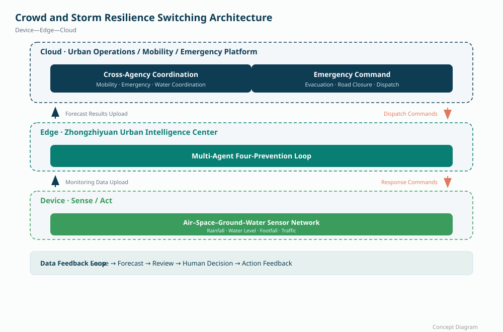
Scenario 5 system architecture: end (space-ground-waterworks sensing)—edge (urban reasoning center "four-forecasting")—cloud (linkage platform)
Switching logic: attention state (passenger flow/water level deviation) → load-limit state (non-critical activities degraded, feeder densified) → emergency state (segment isolation, cross-node takeover, evacuation corridor activated) → recovery state (inspection and phased recovery).
Data and governance: only process structured monitoring and desensitized indicators, no personal trajectories; all evacuation, road-closure, and scheduling decisions are confirmed by humans, with AI only outputting suggestions.
Human review and operation: operating entities are the urban-operations department + Zhongzhiyuan urban reasoning center + digital-twin technical support (capability reference at the conceptual stage); the non-digital alternative is contingency plans + manual command.
Metrics and verification: switching time, contingency lead time, cross-node takeover success rate (benchmarked against digital-twin simulation).
Implementation and exit: cost level medium (reusing four-forecasting capability); pilot is a single Global AI Activity Week event; adjust the model if false alarms/misses fall short.
Differentiator (highlight): extending resilience switching to rainstorm waterlogging, converging with the water-safety four-forecasting of the Jingzhang water system (Qinghe/Xiaoyue River/Zhuan River).
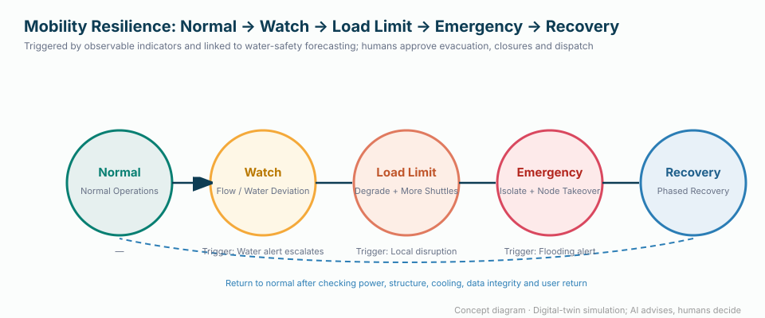
Transport resilience-switching five states (normal→attention→load-limit→emergency→recovery, digital-twin simulation)
Smart-transport and digital-twin water-conservancy case data serve as capability endorsement; before formal inclusion in the submission package, sources must be registered in sources.json and confirmed citable, and this does not constitute a commitment to build or implement for any party.
4.3.4 New Infrastructure and Vehicle-Road Coordination
New infrastructure serves the flexible supply of "nearby light compute + regional heavy compute", not pursuing equipment piling:
Roadside units and holographic sensing: edge-computing units, RSU, millimeter-wave radar, smart multi-function poles, deployed as needed at portals and key intersections;
On-device compute and edge nodes: combined with on-device compute stations, handling low-latency feeder scheduling, slow-traffic break-point identification, and delivery coordination;
Battery-swap and unmanned-delivery stops: portals and parks set battery-swap/charging, unmanned-delivery stops, and end warehouses;
Digital-twin base: support large-crowd and emergency simulation with "cloud twin", reusing 4.4's water-safety "four-forecasting" capability.
Equipment deployment, compute configuration, and energy conditions are all conceptual suggestions, to be deepened based on power, communications, municipal, and safety conditions.
4.3.5 Metrics · Implementation · Boundary
4.3.5.1 Demand forecast and capacity (method framework)
Transport-demand forecasting adopts the four-stage method (trip generation—distribution—mode split—assignment); peak-hour demand and road-network/rail/slow-traffic capacity assessment must be based on official population, employment, trip rates, and road/rail materials; this proposal does not fabricate flow and capacity values, only providing the method framework, to be calculated by a professional team after data are supplemented.
Official traffic surveys and regulatory-planning conditions
Performance calibration
Feeder punctuality, unmanned-delivery backstop rate, resilience-switching time, desensitization-review completeness
Continuously calibrated from operational data
Calibers of the geometrically verifiable indicators: road-network density = total road length / land area (km/km²); slow-traffic coverage = slow-path buffer area / land area; rail-station coverage = station 500-m buffer area / land area; accessibility is measured by the 5/10/15-minute slow-traffic isochrone coverage ratio. The three overall visual indicators (site_area_sqm, green_ratio, public_space_ratio) are uniformly calculated at the overall-metric layer.
Road red line, under-bridge space, traffic organization
JT-02
Dazhongsi Station four-quadrant pedestrian connection
Rail integration / slow traffic
Rail station, intersection, municipal utilities
JT-03
Qinghe Station station-city feeder upgrade
External transport / feeder
Railway, rail, bus depots
JT-04
Branch-network densification and micro-circulation
Road network / slow traffic
Tenure, regulatory planning, existing walls
JT-05
AI feeder and vehicle-road coordination pilot
New infrastructure / scenario
Energy, compute, safety, operating entity
Near-term prioritizes reversible pilots and governance agreements (slow-traffic break points, station-city feeder, branch micro-circulation), mid-term coordinates public space and building renewal, and long-term expands validated AI transport services.
Design boundary
This proposal is a conceptual proposal for an urban-design competition. Road grades, sections, bus tiers, slow-traffic hierarchies, parking zones, external-transport organization, the five AI+ scenarios, and new-infrastructure deployment are all design-simulation conditions, not approved siting, red lines, scale, or engineering conclusions.
Before formal deepening, the following must be supplemented: official design scope and key-area boundaries, road red lines, rail alignments and station entrances, bridge/tunnel and engineering conditions, traffic volume and trip rates, municipal utilities, fire safety, low-altitude airspace and drone routes, tenure, and environmental impact. After supplementation, regenerate the current transport map, road network and sections, slow network, stitching nodes, composite loop, scenario siting, and resilience-switching simulation, and recompute accessibility and road-network/slow-traffic indicators.
Key References
Locally cleared summary of the "Centennial Jingzhang AI Innovation Belt Open Call Task Book for Intelligent Agents".
Smart-transport solutions: vehicle-road coordination, precise bus, autonomous driving + MaaS, smart parking, three-line fusion, full-domain intelligent parking, cloud twin, green-mobility MaaS, transport-tourism fusion, low-altitude economy, etc., used only as capability and method references.
"Beijing Regulations on Autonomous Vehicles" (2024).
"Measures for Road Testing and Demonstration Application of Autonomous Vehicles in Beijing (Trial)" (Jing Jing Xin Fa [2025] No. 43).
"Beijing Implementation Plan for Lawfully Promoting Innovative Applications of Autonomous Vehicles" (2025).
"Beijing 14th Five-Year Plan for High-Precision and Advanced Industry Development" (intelligent-connected vehicles).
National standards: GB/T 51328 "Standard for Urban Comprehensive Transport System Planning", CJJ 37 "Code for Design of Urban Road Engineering", GB 50647 "Code for Design of Urban Road Traffic Facilities".
AI map/map-three-layers.html and AI map/osm-data.js: provisional scope and OSM road, rail, water-system, and green-space background data, used only for design research and spatial-relation identification.
Before formal inclusion in the submission package, external materials (including specific sources of global benchmark cases and smart-transport solution cases) should be registered in sources.json, and unknown conditions such as rail alignments, road red lines, bridge/tunnel works, low-altitude airspace, municipal, and fire safety should be registered in assumptions.json.
4.4 Flexible Resilient Computing StrategyThe adaptive capacity of a world-class AI source (1 base + 5 catalyses · three-tier compute network · energy–compute–urban-safety coordination · headroom for technology evolution)
4.4 Flexible Resilient Computing Strategy
As the resilience-strategy slice of the Chapter 4 strategy system, 4.4 defines flexible resilience as "the adaptive capacity of a world-class AI source", taking the "three zones, two wings" (Zhongzhiyuan, AI Origin Community, Dazhongsi) as the spatial caliber and "1 base (compute) + 5 catalyses (talent, enterprise, open source, data, standards)" to reconstruct the six factors, unfolding around three core strategies — "elastic layout and redundancy design of compute facilities, energy–compute–urban-safety coordination, and headroom & compatibility for future technology evolution" — with three AI+ scenarios and deepened urban-operations scenarios, giving the source three layers of resilience: factor redundancy, spatial disaster resistance, and institutional self-healing.
Core-strategy designWorld-class AI sourceFlexible resilient computing
4.4.1 Strategy Positioning: Flexible Resilience Is the Essential Definition of a World-Class AI Source
This strategy does not interpret "resilience" as whether a single computer room can withstand disasters, nor does it take "how many cards and redundant lines to build" as its goal; instead it proposes a more fundamental judgment: the core competitiveness of a world-class AI source is precisely its ability to keep producing new ideas, new enterprises, and new standards amid sustained turbulence in technology paradigms, supply chains, and talent and capital cycles.
This definition converges "flexible resilience" and "world-class AI source" from two parallel matters into one: what distinguishes a source from an ordinary AI park is not denser factors but stronger adaptive capacity — whether the ecosystem can self-substitute, self-reorganize, and self-regenerate when the model paradigm shifts from CNN to Transformer and then to the next paradigm, when compute supply is hit externally, when capital enters a down cycle, or when talent temporarily flows out.
In other words, what 4.4 answers is "how a world-class AI source keeps self-substituting, self-reorganizing, and self-regenerating amid sustained turbulence in technology paradigms, supply chains, and talent and capital cycles", not "how many cards, redundant lines, or square meters of computer rooms to build". It elevates flexible resilience from "computer-room-level disaster resistance" to "source-level adaptive capacity", with compute as the base and talent/enterprise/open-source/data/standards as the catalyses, landing this definition on space and mechanism through three core strategies.
Accordingly, the resilience of the AI Origin Community is composed of the "1 base + 5 catalyses" factor structure and three layers of resilience:
Six factors (1 base + 5 catalyses): compute is the base-type enabling factor, the first-principles infrastructure that lets the five catalytic factors of talent, enterprise, open source, data, and standards operate; the catalytic factors are the output subjects of a world-class innovation ecosystem, and the base factor is their common support;
Three layers of resilience:
Factor resilience (redundancy and substitutability): when any factor is hit, there exist alternative sources or redundant supply, so no single-point failure occurs;
Spatial resilience (disaster resistance and reconfigurability): physical space can resist flood and fire, be phased and reconfigured, with key functions not placed in flood-prone or isolated positions;
Institutional resilience (self-healing and discourse power): standards, rules, open-source governance, and multi-agent collaboration mechanisms are iterable and auditable, and continuously export discourse power globally.
Within this framework, compute is established as the "base-type enabling factor" — it is not a "computer-room park" grabbing visual and functional dominance, but a load-bearing wall that does not steal the show: the foundation does not occupy the leading role, yet bears the entire source. Large-scale training and centralized inference remain with peripheral training centers whose energy and municipal conditions are suitable, and with Zhongzhiyuan, which carries the "AI full-stack autonomous innovation system"; the AI Origin Community organizes elastic layout through the "peripheral training—Zhongzhiyuan full-stack inference—Origin nearby light compute—Dazhongsi edge" three-tier compute network, obtaining regional compute services on demand through high-speed compute networking, and locally retaining nearby light compute, edge caching, and validation workshops, rather than turning itself into a "computer-room park" within a high-density built-up area. SourceStandard
Core scenario: a "self-regenerating source" — talent flows through the open-source release hall and joint research, enterprises grow and reorganize in the factor-sharing courtyard, standards are produced in the evaluation and safety-governance laboratories and go global, data circulates compliantly in the trusted sandbox, compute is called on demand as a public service, and citizens perceive the health and switching of all this in the resilience commons.
The Jingzhang context: the railway corridor as the resilience skeleton
The Jingzhang Railway Innovation Belt provides this strategy with an irreplaceable linear spatial skeleton and historical narrative anchor. It is not only a transport corridor connecting northern Haidian, the central city, and peripheral areas, but can be re-understood as a composite corridor stringing innovation factors, carrying urban resilience, and continuing industrial memory.
Spatial skeleton: Zhongzhiyuan (North 5th Ring/Qinghe), the AI Origin Community (university–rail-dense area north of the North 4th Ring), and Dazhongsi (North 3rd Ring/Zhuan River) distribute in a north-to-south gradient along the Jingzhang corridor, forming the complete resilience chain of "peripheral training—Zhongzhiyuan full-stack inference and validation—Origin factor catalysis and standard output—three-zone edge response". The railway corridor and its low-efficiency land, station-front spaces, and under-bridge spaces become the physical carrier of this chain.
Factor channel: the Jingzhang Railway corridor, together with the subway and suburban railway, forms a multimodal channel for talent, materials, data, and emergency response. Under extreme events, the corridor can serve as an urban lifeline ensuring cross-regional flow and backup of innovation factors.
Water-safety boundary: water systems such as the Qinghe, Xiaoyue River, and Zhuan River interweave with the railway corridor, constituting both a spatial safety boundary and a real city-level application scenario for the water-safety "four-forecasting" digital twin.
Activation of historical memory: the industrial heritage of the Jingzhang Railway (rails, bridges, station-house memory) is converted into the "open-source trail", "resilience commons", and public-art interface, letting historical space carry future innovation and avoiding heritage fracture during renewal.
Global benchmarks confirm the transferability of this judgment: the Silicon Valley Stanford–Sand Hill Road system embodies "talent density × risk capital × achievement-transfer redundancy"; Boston's Kendall Square embodies the generational renewal of "university anchoring × industry alternation"; Israel's Tel Aviv "Silicon Wadi" embodies the self-healing of military-civilian technology transfer and talent return under geopolitical pressure; Shenzhen embodies rapid paradigm switching "from OEM to innovation"; Paris's Station F and Singapore's one-north embody the ecosystem aggregation and institutional supply of government–large enterprise–startup; Zhongguancun itself is the locally established source sample of "university-institute—leading enterprise—unicorn—incubation". The above benchmarks are conceptual-direction references; specific case sources and applicability boundaries must be registered in sources.json before citation, and do not constitute any factual commitment of this proposal. Source
4.4.2 Mapping to Earlier Problem-Identification Chapters
This strategy does not discuss compute resilience in isolation, but explicitly responds to the earlier "problem identification" chapters, making the "flexible resilient computing strategy" a verifiable, landable strategy node within the whole proposal. Among them, the three-tier compute network layout with compute as the base-type factor directly responds to Chapter 3 Problem 4's diagnosis of "spatial layout and safety resilience of compute centers" (compute-demand density, energy assurance, disaster-risk exposure, network resilience).
Chapter 3 core problem
This strategy's response
Key spatial / intelligent carrier
Mismatch between AI S&T resource clustering and the supporting facilities system
Form a six-factor-converging facilities ecosystem through talent, enterprise, and open-source clusters and the factor-sharing courtyard; shorten factor-acquisition time via the "one-stop access to the catalysis ecosystem" platform
Talent/enterprise/open-source clusters, factor-service hall, joint research rooms
Reuse and redevelopment of low-efficiency land along the dual-rail spatial corridor
Convert the railway corridor and its low-efficiency spaces into a "resilience commons—open-source trail—innovation service belt", turning the corridor from a spatial-severance belt into a factor-connection belt
Jingzhang corridor, under-bridge space, station-front space, public innovation loop
Contradiction between a complex transport system and lagging urban transport management
The public innovation loop and safety operations loop are separated; smart mobility and multimodal transfer support cross-node commuting for talent; graded isolation of data flows safeguards urban-operation safety
Two-loop circulation, slow-traffic system, data-security zone
Spatial layout and safety resilience of compute centers
Establish compute as the "base-type factor", organizing elastic layout through the "peripheral training—Zhongzhiyuan full-stack inference—Origin nearby light compute—Dazhongsi edge" three-tier compute network; the Origin Community retains nearby light compute and validation workshops, achieving substitutable supply through "nearby light compute + regional heavy compute + cross-tier scheduling"
Contradiction between historical-cultural conservation and spatial renewal and utilization
Jingzhang Railway industrial memory is integrated into public art, spatial interfaces, and the "open-source trail", turning historical space into a future innovation public interface
Public art, resilience commons, open-source trail
4.4.3 Three Core Strategies
This strategy lands the "adaptive capacity of a world-class AI source" on three executable core strategies, corresponding respectively to the elastic layout of the compute base, the systemic coordination of energy–compute–urban safety, and headroom compatibility for future technology evolution, forming the landing backbone of "factor resilience—spatial resilience—institutional resilience".
Core Strategy 1: elastic layout and redundancy design of the compute base (three-tier compute network)
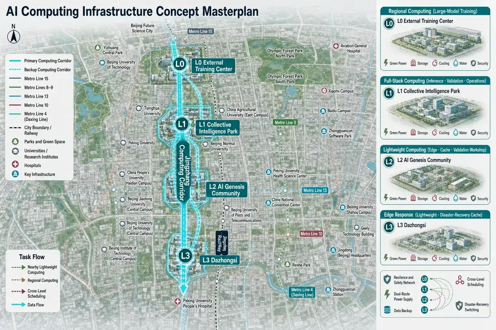
Three-tier compute network AI compute infrastructure conceptual master plan
As the base-type factor, compute is organized through the "peripheral training—Zhongzhiyuan full-stack inference—Origin nearby light compute—Dazhongsi edge" three-tier compute network, so that compute infrastructure is neither rejected by high-density built-up areas nor fails to truly serve as the source's enabling base:
Tier
Node
Compute role
Elasticity and redundancy design
L0 Peripheral training center
Peripheral park with suitable energy and municipal conditions
Southern latency-sensitive scenarios, doubling as off-site backup
The three tiers interconnect through high-speed compute networking; when any tier faces fault, waterlogging, power restriction, or demand surge, tasks can be scheduled across tiers: the Origin's nearby-light-compute tasks can be escalated to Zhongzhiyuan or the periphery, and when Zhongzhiyuan is hit, low-latency validation can be pushed down to the edge nodes of the Origin and Dazhongsi. This "nearby light compute + regional heavy compute + cross-tier scheduling" organization makes compute infrastructure itself redundant rather than a single point, forming the source's elastic base.
Core Strategy 2: coordinated planning of energy–compute–urban safety
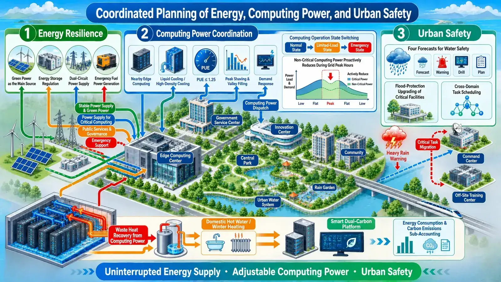
Coordinated planning of energy–compute–urban safety
As the base-type factor, compute's energy supply, energy-use efficiency, and waste-heat utilization are not "secondary issues", but the first-principles constraint of source resilience. This strategy plans energy, compute, and urban safety as one coordinated whole:
Energy-supply resilience: compute clusters adopt multi-source power of "green power first + energy-storage regulation + dual-circuit supply + emergency diesel generator", with key inference and governance control not relying on a single power source; power is reserved for future compute-density increases;
Energy-use efficiency: nearby-light-compute centers adopt liquid/high-density cooling, benchmarking PUE≤1.25; prioritize free cooling and natural cold sources, reducing energy use and urban heat island;
Waste-heat recovery (formal coordinated design): compute waste heat serves as a controllable heat source, prioritizing building domestic hot water and winter heating, coordinating with stable nearby heat users (communities, public buildings), and incorporated into the smart dual-carbon platform's energy–carbon sub-account accounting, turning "waste heat" from passive emission into a measurable low-carbon resource;
Compute–grid coordination: compute load participates in peak-shaving, valley-filling, and demand response, actively shedding load as an interruptible load during grid peaks or extreme weather in exchange for the power safety of urban public services;
Urban-safety coordination: compute clusters link with Scenario 4's water-safety "four-forecasting", pre-scheduling key tasks to the flood-safe Zhongzhiyuan/periphery during rainstorm warnings, with local nearby light compute entering load-limit/emergency states, preventing compute infrastructure from becoming a fragile point of waterlogging, fire, or power accidents.
The above coordination is a conceptual proposal; specific power capacity, PUE, waste-heat scale, and connection methods must be specially argued after obtaining official power and municipal materials; the shared hall can display recovered-heat destinations and measured energy use, but must not write unimplemented waste-heat utilization as a definite commitment.
Core Strategy 3: headroom and compatibility for future technology evolution
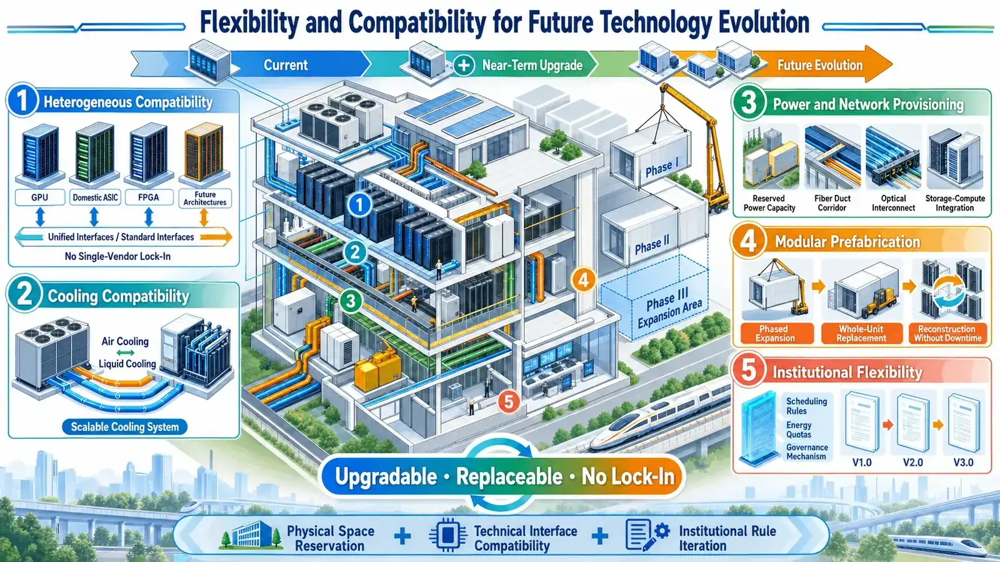
Headroom and compatibility for future technology evolution
Compute paradigms iterate extremely fast; this strategy reserves "upgradable, replaceable, non-locked" physical and institutional space for the base:
Heterogeneous compatibility: power distribution, cabinets, and network reserve interfaces for GPU / domestic ASIC / FPGA / future architectures, avoiding lock-in to a single chip route;
Cooling compatibility: nearby-light-compute centers reserve air-cooling–liquid-cooling switching capability, with cooling systems designed for scalability;
Power and network reservation: reserve power capacity and fiber ducts by future compute density, leaving physical space for optical interconnect, compute-in-storage, and other directions;
Modular prefabrication: compute clusters use modular prefabricated rooms, expandable in phases and replaceable as a whole;
Institutional headroom: compute-scheduling rules, energy quotas, and governance mechanisms iterate in versions, avoiding premature fixation that locks in technology evolution.
4.4.4 Spatial Elaboration of the Strategy: Three-Zones-Two-Wings Siting and Resilient Spatial Organization
The three core strategies do not stay at the principle level, but land on the "three zones, two wings" spatial division and the specific spatial organization of the AI Origin Community. This section unfolds, layer by layer, the source's scenario siting, master plan, three-layer resilience, water-park relationship, circulation, architectural form, proportions, and drawings as the spatial elaboration of the three strategies.
Scenario siting: the AI Origin Community as the source, three-zones-two-wings resilience division
Following the task book's role assignment for "three zones, two wings", this proposal positions the AI Origin Community as the "world-class AI innovation ecosystem · source", carrying six-factor convergence and standard output; Zhongzhiyuan carries AI full-stack autonomous innovation and compute/governance discourse power; Dazhongsi carries AI-native new business forms and southern low-latency response. This division directly corrects the misalignment of "treating the inference center as the Origin's main scenario": the source is where "ideas, enterprises, and standards are produced", while inference and training centers are infrastructure serving it, and should not take its place.
This siting is only a scenario choice at the urban-design stage, not formal parcel siting. After obtaining official boundaries, terrain, power, municipal, tenure, and fire-safety materials, specific parcels should be re-compared within the AI Origin Community.
Key area
Resilience role
Main spatial carrier
Relation to the source
Zhongzhiyuan
AI full-stack autonomous innovation + compute and governance voice
Inference and training centers, chip-testing workshops, model validation fields, safety-governance laboratories
Hosts the compute main center and standards governance, in turn supporting the Origin catalysis
Scenario core; six-factor convergence and standard output
Dazhongsi
AI-native new business forms (scenario resilience + edge response)
Enterprise service stations, product launches, lightweight edge nodes
Invokes catalysis and compute services, undertaking southern low-latency and disaster-recovery caching
Peripheral training centers undertake high-energy, long-duration large-scale training; Zhongzhiyuan undertakes full-stack inference, chip testing, and safety governance; the AI Origin Community undertakes factor catalysis, standard-setting, and trusted data circulation; together with transport, robotics, and public-space nodes, the three zones form the complete chain of "peripheral training—Zhongzhiyuan full-stack inference and validation—Origin factor catalysis and standard output—three-zone edge response".
Roads, rails, water systems, and green space in the figure are uniformly projected and drawn from the local OSM cache of AI map/osm-data.js; the overall design scope and the three key areas follow the provisional estimated coordinates of map-three-layers.html, used only for competition-stage spatial-relation identification. Zhongzhiyuan carries full-stack innovation and compute governance; the AI Origin Community carries ecosystem catalysis and standard output; Dazhongsi carries new-business-form conversion and edge response. The three are strung together by the Jingzhang corridor and, together with peripheral training resources and the urban-scenario edge network, form the "three zones, two wings" resilience coordination system.
Master plan: one courtyard, two loops, three interfaces, six clusters
The AI Origin Community adopts the spatial structure of "one courtyard, two loops, three interfaces, six clusters", corresponding to the spatial carriers of the six factors. Conceptual working units can be simulated at about 30–50 mu; the actual land scope and construction scale must follow official planning conditions.
One courtyard: the factor-sharing courtyard
Buildings enclose an open central shared courtyard, serving as the source's public living room:
The ground embeds a real-time "ecological resilience" information band, displaying the aggregated health of talent flow, enterprise growth, open-source activity, compliant data circulation, standards iteration, and compute utilization;
Set up bookable achievement-release platforms, open-source demo areas, scenario-validation fields, and small release venues;
Connect the open-source release hall, standards-evaluation workshop, data-factor salon, and enterprise-service space through semi-outdoor corridors;
Set up shading, rain gardens, movable seating, and all-weather work interfaces;
At night only desensitized public operational data is displayed.
Two loops: the public innovation loop and the safety operations loop
The public innovation loop faces urban roads, universities, and green space, stringing together public exhibition halls, the factor-service hall, open-source and shared meetings, achievement demos, talent services, and roof gardens. The public and enterprises can complete the whole process of "understand the ecosystem—raise needs—access factors—view results" along the loop.
The safety operations loop sits at the periphery or back-of-house of the data and standards security zone, independently organizing large-equipment transport, spare parts, fire rescue, power-distribution maintenance, and cooling-system repair. The operations loop does not cross the public pedestrian circulation, and reduces its impact on public space and community through greenery, building massing, and sound barriers.
Three interfaces
Urban-service interface: facing main roads and public transport, with entrance plazas, the factor-service hall, enterprise services, and display-release spaces;
Campus-innovation interface: facing universities and research institutions, with open-source communities, joint research rooms, standards-evaluation workshops, and trusted data sandboxes;
Park-ecology interface: facing green space, arrange low-density public functions, rain gardens, rest platforms, and energy-science facilities, avoiding equipment unloading, heat exhaust, and high-noise facilities directly facing the park.
Six clusters
Cluster
Corresponding factor
Core content
Spatial character
Talent cluster
Talent
Joint research rooms, international talent community, youth apartments, nighttime collaboration space
Adjacent to the campus interface, mixing residence—R&D—social
Enterprise cluster
Enterprise
Incubation, acceleration, unicorn buildings, investment-financing and legal services
Continuous street-facing interface, splittable and reconfigurable
Open-source cluster
Open source
Open-source release hall, public code wall, contributor space
Open ground floor, connecting courtyard and city entrance
Data cluster
Data
Trusted data sandbox, data-factor salon, compliance audit
Graded authorization, key data above the safety elevation
Standards cluster
Standards
Evaluation laboratories, safety governance, red-team testing, standards development
On-device compute stations, edge nodes, model validation workshops, nearby-light-compute center
As a base-type enabling factor, combined with public services, scalable and reconfigurable
The six clusters form a phase-grown building group through the shared courtyard and corridors. The talent, enterprise, and open-source clusters form public vitality; the data, standards, and compute clusters constitute the controlled governance and support core — among which the compute cluster, as the base-type enabling factor, provides nearby light compute, edge caching, and validation capability for the first five clusters, and is the source's public-infrastructure plane: it does not occupy visually or functionally dominant massing, but is a key load-bearing link in resilience and energy coordination.
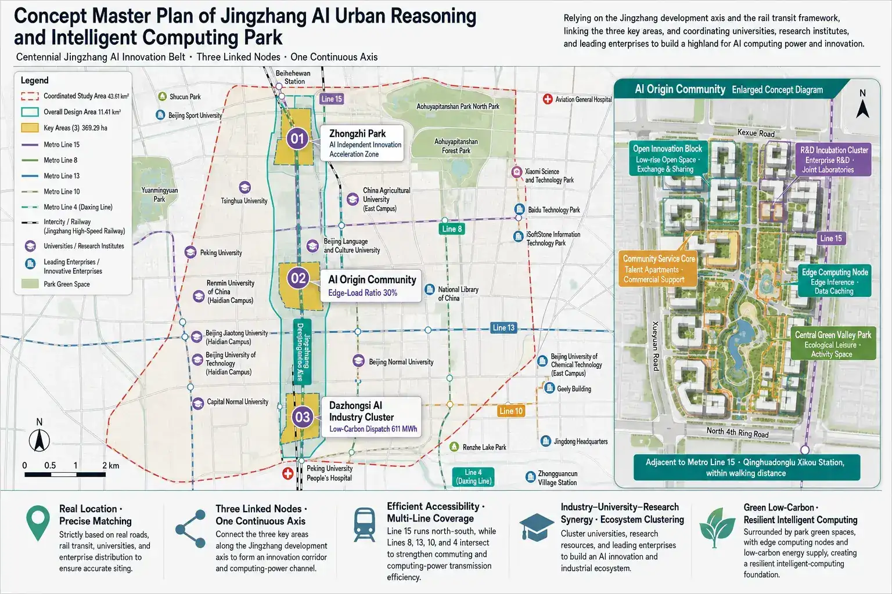
AI Origin Community resilient source conceptual master plan (full-domain mapping + key-area enlargement)
The master plan adopts a "full-domain mapping + key-area enlargement" dual-scale structure: the left figure uses AI Map data base drafts to express the spatial relations of Zhongzhiyuan, the AI Origin Community, and Dazhongsi within the Jingzhang development axis, roads, rails, water systems, and green-space network; the right figure uses AI-assisted generation to produce a bird's-eye conceptual proposal, showing open innovation blocks, R&D incubation clusters, the community-service core, compute edge nodes, and the central green-valley park. The right-figure elements correspond respectively in this framework to the talent/enterprise/open-source clusters, enterprise incubation cluster, talent community and factor-service core, compute cluster (base-type enabling factor), and the factor-sharing courtyard and park-ecology interface. The generated images serve competition-scenario and spatial-intent expression, not as survey basemaps, tenure verification, formal siting, or engineering layout.
Spatial realization of three-layer resilience
Factor resilience: redundancy and substitutability
Talent: establish flow and mutual-recognition channels among universities, parks, and enterprises, so talent fluctuation at any single university or enterprise does not constitute an ecosystem break point; set flexibly convertible joint research rooms and short-term work units;
Enterprise: incubation—acceleration—unicorn tiers and redundancy coexist, avoiding over-reliance on a single leading enterprise or single track; space is splittable and reconfigurable, supporting enterprise growth and exit;
Open source: code, models, and community are decentralized, not relying on a single hosting platform; the public code wall and contributor space can be reconfigured at any time;
Data: key data is zone-divided, graded, multi-copy, and auditable; the trusted sandbox supports cross-entity compliant collaboration;
Standards: evaluation and governance methods are openly participatory and version-iterated, avoiding monopoly of standards by a single institution;
Compute: as the base-type factor, achieve redundant supply through the "peripheral training—Zhongzhiyuan full-stack inference—Origin nearby light compute—Dazhongsi edge" three-tier compute network; the Origin locally retains nearby light compute, edge caching, and validation workshops, with tasks schedulable across tiers when any tier fails, forming the substitutable supply of "nearby light compute + regional heavy compute + cross-tier scheduling".
Spatial resilience: disaster resistance and reconfigurability
The AI Origin Community adopts the composite section of "public space below, collaboration space in the middle, key data and standards placed above, energy systems on the roof", avoiding placing key data, standards, and governance functions in flood-prone underground space.
Key data sandboxes, standards evaluation, and governance control are set on above-ground floors rechecked for flood, structure, and fire, using compartmented, zone-divided, and modular design;
Underground space in principle only hosts parking and non-critical auxiliary rooms, not core data, unified governance control, key network nodes, and sole power-supply control systems;
Building entrances, ramps, vents, and utility openings are fitted with backflow protection; garage ramps and utility entries are zone-isolated;
Clusters use phaseable, splittable structures, allowing partial reconfiguration or renewal without interrupting core functions.
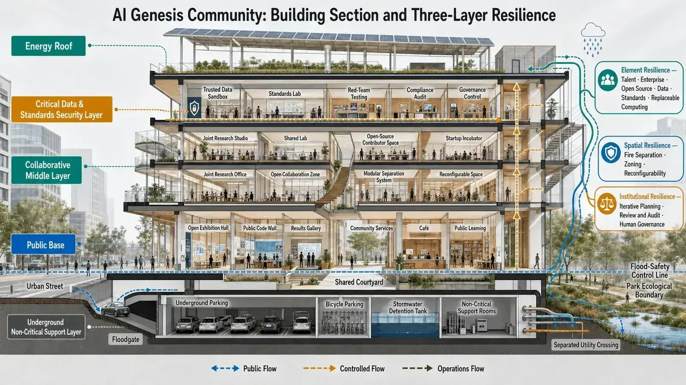
AI Origin Community building section and three-layer resilience stratification
The section uses "public base—collaboration middle—key data and standards security layer—energy roof" as its vertical structure: public space connects city streets, the shared courtyard, and the park-ecology interface; collaboration space supports flexible reconfiguration of joint research, open-source contribution, and enterprise incubation; key data, standards evaluation, red-team testing, and compliance audit are set above the flood-safety control line; underground only retains parking, rainwater storage, and non-critical auxiliary functions. Factor resilience, spatial resilience, and institutional resilience run through the whole building, organized respectively through the public, controlled, and operations circulations.
Institutional resilience: self-healing and discourse power
Multi-agent collaborative governance: urban agents assist in identifying slow-traffic break points, public-space heat, facility maintenance, enterprise-service needs, and activity-safety risks, but do not replace planning approval, do not output unauthorized personal profiles, and do not claim official implementation commitment;
Standards and governance output: translate evaluation, red-team testing, safety grading, and compliance audit into a visitable, bookable, regulable public interface, making "how standards are set and how models are governed" the source's perceivable, exportable core capability;
Open-source and rule iteration: open-source community governance, data-circulation rules, and algorithm-filing guidance are openly participatory, versioned, and auditable, forming institutional products reusable by other cities.
Design relation to water systems, parks, and the urban environment
Water is not a cooling shortcut but a safety boundary
Zhongzhiyuan is near the Qinghe and Xiaoyue River, Dazhongsi near the Zhuan River, and the AI Origin Community still needs to check urban ponding and groundwater. The source scenario adopts the physical flood-defense principle of "avoidance first, key-layer elevation, zone-based flood prevention, monitoring linkage, cross-node switching", and Scenario 4's water-safety "four-forecasting" digital twin provides dynamic forecast—warning—preview—contingency support; the two form a dual-layer water-safety system of "static defense + dynamic preview":
Key data, standards, and governance functions are above the rechecked safety elevation;
Underground space does not bear sole critical functions;
Building entrances, ramps, vents, and utility openings are fitted with backflow protection;
Cooling water, fire water, rainwater, and sewage are managed by separate systems;
Key areas are fitted with zone leakage detection and automatic shutoff;
Rain gardens undertake daily storage, but do not replace the protection of key facilities themselves;
Relying on Scenario 4's multi-agent "four-forecasting", preview flooding ranges and generate contingency plans before rainstorms and super-standard floods (capability endorsement in Scenario 4, not constituting an implementation commitment).
The park is not the computer-room back-of-house, but a public innovation interface
The side near the park arranges exhibition halls, shared courtyards, cafés, meetings, and science-popularization trails; equipment unloading, backup energy, heat exhaust, and high-noise facilities are arranged in the urban-service back-of-house. The building ground floor stays partially transparent and passable, avoiding cutting off public space with large-scale walls.
Central park belt: from landscape to ecological resilience base
The central park belt released by the HSR going underground is the AI Origin Community's most distinctive public space and the hardware base of the smart dual-carbon platform. Every design in the park simultaneously carries ecological and data-collection functions:
Plant configuration as carbon-sink hardware: prioritize high-carbon-sink, low-maintenance, locally climate-adapted native species, using tree–shrub–grass multi-layer structure to raise per-area leaf-area index and carbon-sequestration efficiency; through vegetation-health monitoring, dynamically adjust irrigation and pruning, avoiding "green for green's sake" high-carbon maintenance.
Water-body design as climate-resilience hardware: preserve and expand rain wetlands, ecological ditches, and retention ponds, carrying the triple functions of rainstorm storage, water purification, and evaporative cooling; wetland plants and microbial communities simultaneously become monitoring objects of carbon sink and methane emission, incorporated into dual-carbon accounting.
Permeable paving and sponge facilities as water-carbon synergy hardware: permeable paving, sunken green spaces, and ecological tree pits increase rainwater infiltration, reducing surface runoff and heat-island effect; their infiltration rate and substrate moisture are online-monitored, providing data support for "no ponding in light rain, no waterlogging in heavy rain, resilient water bodies".
Slow-traffic network as behavioral carbon-reduction hardware: walking and cycling paths in the park connect campus, enterprises, and public transport, quantifying the carbon-reduction contribution of "replacing motor vehicles with slow traffic" through passenger-flow statistics and travel-mode identification.
Through the smart dual-carbon platform, these "hardware" items are continuously monitored, uniformly accounted, and dynamically optimized, turning the central park belt from static landscape into ecological infrastructure actively participating in urban resilience operations.
Pedestrian, logistics, data, and fire circulations
Circulation
Entry and path
Design requirement
Public and enterprise pedestrian flow
City entrance—factor-service hall—shared courtyard—exhibition hall—park
Open, continuous, barrier-free, not passing the core security zone
Research-staff circulation
Campus entrance—identity verification—joint research room / validation workshop—controlled data zone
Graded authorization, bookable entry, not crossing equipment logistics
Equipment and operations logistics
Back-of-house entrance—unloading platform—equipment elevator—compute and energy clusters
Independent and enclosed, allowing large-equipment replacement and all-day maintenance
Fire and emergency circulation
City roads—ring fire lane—rescue site—each fire compartment
Clear at all times, not conflicting with parking, activities, and temporary displays
Public-display data, research data, enterprise data, urban-sensitive data, and governance-control data enter different networks and security zones respectively. The public exhibition hall can only call desensitized, delayed, or simulated data; the data, standards, and governance-control networks are isolated from the public network.
Architectural form and urban cityscape
The AI Origin Community adopts low-mid-rise, clustered, and phase-grown architectural form:
Talent, enterprise, and open-source clusters form continuous, active urban interfaces along the street;
Data and standards clusters sit inside the cluster, organizing a technical image with shading, perforated members, and maintenance corridors;
Building height is jointly controlled by surrounding campuses, communities, and urban interfaces; statutory height is not preset at the conceptual stage;
Roof energy and photovoltaic equipment are incorporated into the fifth-facade design;
Nightscape only expresses public entrances, the shared courtyard, and operating states, not forming large-area media facades;
Public art combines the industrial memory of the Jingzhang Railway, the history of computing, and Zhongguancun innovation culture.
Spatial modules and reference proportions
The following proportions are conceptual priority references at the urban-design stage, used to guide the relative relations of the six-factor spaces, not final statutory indicators. Specific values should be calibrated after obtaining official regulatory-planning conditions, industry-demand calculations, and municipal-capacity assessments.
Functional category
Reference priority / proportion range
Design intent
Talent, enterprise, open-source clusters
40%—50%
Form the source's factor convergence and public vitality
Data, standards, governance clusters
20%—25%
Carry trusted data circulation and governance discourse-power output
Compute, edge, and validation (base)
15%—20%
Nearby light compute, edge caching, validation workshops, and energy coordination, as the base-type enabling factor
Transport, logistics, and safety auxiliary
10%—15%
Ensure equipment transport, fire rescue, and daily operations
Reserve the main space for talent, enterprise, and open source, letting the "source" rather than the "computer room" dominate; at the same time, adjust compute from a "compressed supporting role" to the "base-type enabling factor" — its on-site volume is used for nearby light compute, edge caching, and validation workshops, and it carries the physical interface of energy–compute–urban-safety coordination, rather than being trimmed to negligible. The 30–50 mu working unit is only a conceptual simulation scale; the final land boundary must be determined by the official key-area scope and regulatory-planning conditions.
Design drawings and simulation deliverables
Subsequent deliverables should form at least seven design drawings, not just system block diagrams:
Scenario master plan: express one courtyard, two loops, three interfaces, and six clusters;
Ground-floor open-space diagram: express the connections among public, enterprise, research, and park;
Building section: express the public base, collaboration middle, key-data-and-standards security layer, energy roof, and flood-defense relation;
Four-circulation diagram: express pedestrian, logistics, data, and fire circulations;
One-day scenario diagram: express how research, enterprises, the public, and urban governance use the source;
Shock-switching simulation: express factor reorganization and spatial response under talent/enterprise/compute/supply fluctuation;
Central park belt smart dual-carbon platform diagram: express sensing nodes, carbon-sink patches, water-body and permeable-paving layout, and the dual-carbon cockpit interface.
The digital sandbox should allow switching among "normal—attention—load-limit—emergency—recovery" states, showing changes in open zones, closed zones, factor-task positions, power paths, ponding risk, and personnel evacuation under different states.
4.4.5 Three AI+ Scenarios: Three User Journeys
The following three scenarios target the source's three most core user groups — research teams, startups, and citizens — respectively showing how factors are "one-stop" acquired, how resilience is "diagnosed", and how the source is "perceived".
Scenario 1: research team "one-stop access to the catalysis ecosystem"
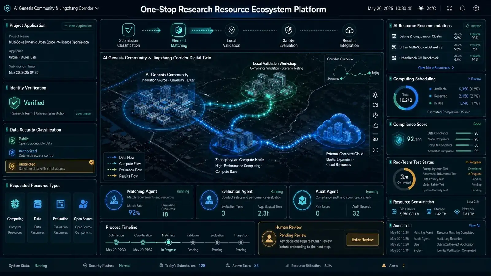
Research team one-stop catalysis-ecosystem platform digital system
Service objects: university and research-institution teams (students and staff, postdocs, independent researchers), entering from the campus-innovation interface.
Spatial path: campus-innovation interface → identity verification → factor-sharing courtyard (achievement-submission desk) → local validation workshop → result feedback.
Flow:
1. Submission and grading: the team submits the achievement summary, data-security level (public/authorized/restricted), and required factors (compute, data, evaluation, open-source hosting);
2. Factor matching: the system gives factor-combination suggestions by the principle of "minimum factors, nearby compute, compliance first" — small-scale validation stays in the local validation workshop, while large-scale training and centralized inference are scheduled to Zhongzhiyuan or the periphery;
3. Safety evaluation: results feed back locally for low-latency testing, and after red-team testing and safety grading in the standards-cluster evaluation laboratory, a decision is made on whether to connect to enterprises, the open-source community, or urban applications;
4. Trace and review: fully auditable trace throughout, with the team able to review resource consumption and compliance conclusions.
Data and privacy boundary: only process achievement metadata and the team's self-submitted safety level; campus data and research achievements require authorization; no personal research-behavior trajectories are collected.
Human review: safety grading and launch conclusions are confirmed jointly by security staff and the team, with the system only giving suggestions.
Core feature — single-point dependency assessment: the clinic also outputs a "single-point dependency" report, flagging which factors are over-concentrated in a single supplier (single cloud, single data source, single compute channel), and gives redundancy-building suggestions, landing "resilience" from a park slogan to enterprise-executable business decisions.
Data and privacy boundary: only process business and compliance information actively submitted by enterprises; data goes through the trusted sandbox, compute through Zhongzhiyuan or the periphery.
Human review: the final plan is confirmed jointly by the enterprise, technical staff, and security staff, with an offline window retained as a backstop.
Operating entities: source operator + enterprise-service team.
Scenario 3: citizens entering the "perceivable resilience commons"
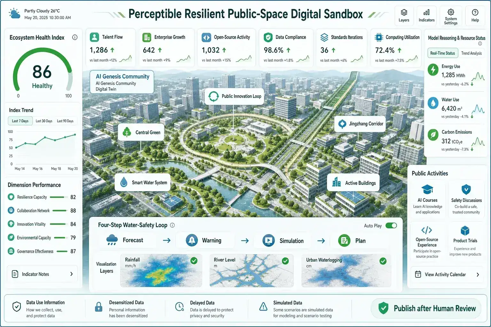
Perceivable resilience commons digital sandbox
Service objects: surrounding residents and the public.
Spatial path: public innovation loop → exhibition hall → shared courtyard → park-ecology interface.
Perceivable content:
1. Ecological-health information band: the shared-courtyard ground displays desensitized aggregated indicators in real time — talent flow, enterprise growth, open-source activity, compliant data circulation, standards iteration, compute utilization;
2. Water-safety "four-forecasting" demo: observe the desensitized forecast—warning—preview—contingency animation of the Qinghe/Xiaoyue River/Zhuan River under rainstorm scenarios, understanding how the city responds to waterlogging;
3. Resource-consumption visualization: understand the energy, water, and carbon-emission magnitude of one model inference;
4. Participatory activities: youth AI courses, model-safety discussions, open-source contribution experience, enterprise new-product trials.
Data and privacy boundary: the public zone uses only desensitized, delayed, or simulated data, not entering the data, standards, and governance security zone; no personal trajectories collected, no commercial recommendations.
Human review: displayed content is published after desensitization and manual review.
The following three scenarios elevate source resilience from "in-park principles" to "urban operations": water-safety "four-forecasting" demonstrates how AI-native inference supports spatial resilience under extreme weather, resilience switching demonstrates state-differentiated response under turbulent shocks, and the dual-carbon platform demonstrates the measurable operation of the ecological base.
Positioning: this is the key scenario landing the "resilient source" from abstract principle to real urban operations, using water safety as the entry point to show how AI-native inference supports spatial resilience under extreme weather and urban waterlogging. It also relies on the real water systems of the Qinghe, Xiaoyue River, and Zhuan River within the Jingzhang Railway Innovation Belt, converting city-level water-conservancy capability into locally callable, perceivable resilience services.
Service objects: authorized managers (urban operations, water affairs, emergency, park operators); the public perceives through desensitized display.
Spatial placement: inference compute concentrates in the Zhongzhiyuan urban reasoning center; the AI Origin Community and the Qinghe/Xiaoyue River/Zhuan River water systems are called on demand through high-speed compute networking, not piling inference equipment inside the Origin Community. The Qinghe, Xiaoyue River, and Zhuan River are built-up-area water systems, structurally isomorphic to Ningbo's Yong River "basin + urban waterlogging + underground space + lifeline" problem, with direct migration conditions.
AI-native architecture (multi-agent "four-forecasting" closed loop): organized by the competition's "AI-native, multi-agent collaboration" requirement, not traditional water-affairs informatization:
Sensing Agent (monitoring): aggregate the "space-ground-waterworks" sensing network — rainfall, river level, gates, pump stations, pipe networks, video, satellites, drones, and ground inspection robots, uploading structured information;
Forecast Agent (model): meteorological—hydrological—hydrodynamic coupling, forecasting water levels and submergence risk in advance;
Warning Agent (threshold/knowledge): threshold triggering and expert-knowledge analysis, automatically generating risk lists and pushing to authorized managers;
Preview Agent (simulation): 2D-3D coupled flood-submergence model, simulating the consequences of "how a gate is scheduled" and "what if a pipe segment fails";
Review Agent (iteration): post-event comparison of forecast vs. actual, iterating model parameters.
Human review and privacy boundary: all drainage, gate, evacuation, fire, and public-safety decisions must be confirmed by humans, with AI only outputting suggestions; only structured monitoring data and desensitized indicators are processed, no personal trajectories collected, no personal profiles output.
Operating entities: Zhongzhiyuan urban reasoning center + urban-operations department + digital-technology support (capability reference at the conceptual stage; specific service relations pending formal argumentation).
Scenario 5: resilience switching under turbulence and shocks
Resilience-switching digital system government big-screen under turbulence and shocks
Resilience switching covers the three layers of "factor—space—institution", triggered by observable indicators and connected with Scenario 4's water-safety "four-forecasting":
Attention state (trigger: key-factor indicators deviate from normal or water-safety warning escalates): raise monitoring frequency of key factors — talent loss, enterprise relocation, data risk, compute supply, water-level leakage, power and structural status;
Load-limit state (trigger: local shock, need to preserve core): relocate or downgrade non-critical innovation activities, ensuring the continuity of core R&D, trusted data circulation, and urban public services;
Emergency state (trigger: extreme weather / waterlogging / power or structural alarm): isolate faulty zones (physical or data partitioning), cross-node takeover of key business (Zhongzhiyuan/peripheral compute takeover, off-site data-copy activation), safe shutdown of key functions;
Recovery state (trigger: shock removed): check power, structure, cooling, data integrity, and talent/enterprise return, then recover in phases.
The water-safety "four-forecasting" forecast—warning—preview—contingency is exactly one of the decision bases for the "attention→load-limit→emergency" switching. This process is displayed in the exhibition hall in a simplified, desensitized way, making "source resilience" understandable daily education for the public.
Three-state mapping of compute resilience: the above switching directly acts on the three-tier compute network — in normal state, tasks are freely scheduled by "nearby light compute + regional heavy compute"; in load-limit state, the Origin's nearby light compute sheds load and non-critical training/inference relocates to Zhongzhiyuan and the periphery, ensuring core R&D and urban public-service continuity; in emergency state, key business is taken over across tiers and off-site data copies activated, upgrading compute from "single-computer-room disaster recovery" to "network-wide schedulable disaster recovery".
Scenario 6: central park belt smart dual-carbon platform
Central park belt smart dual-carbon platform
Positioning: the linear park belt formed in the AI Origin Community center after the HSR went underground should not merely be understood as "green packaging for compute facilities", but should be elevated through the smart dual-carbon platform into a perceivable, measurable, regulable ecological resilience base. It is both a daily rest space for source talent and citizens, and a composite infrastructure of urban carbon sink, climate regulation, and environmental sensing.
Sensing nodes: deploy micro weather stations, negative-oxygen-ion monitors, online water-quality monitoring, soil-moisture and carbon-flux towers, and vegetation-health spectral probes along the park belt;
Carbon-sink patches: set tree–shrub–grass multi-layer carbon-sink sample plots, rain wetlands, and permeable-paving demonstration zones at park nodes, as "quantifiable green infrastructure";
Display interface: set dual-carbon information screens at the park-ecology interface and shared courtyard, showing in real time the park's daily carbon sink, cooling contribution, rainwater storage, and air-quality improvement;
Management cockpit: data converges into the source operation center, forming linkage with urban water-safety "four-forecasting", energy management, and compute scheduling.
Platform architecture (three layers):
Sensing layer: trusted ecological data collection
Energy consumption: sub-item energy use of buildings, transport, compute, lighting, and air conditioning;
Accounting layer: unified carbon accounting and 1.5-degree benchmarking
Establish a district-level carbon-emission–carbon-sink dynamic balance model;
Account by sub-accounts of building, transport, green space, water system, and compute;
Benchmark the "1.5-degree lifestyle demonstration zone" indicators, outputting compliance rate, gaps, and optimization suggestions.
Application layer: three user interfaces
Public screen: show "how much carbon this park absorbed, how much temperature it lowered, and how much air it purified today", converting abstract dual-carbon goals into perceivable daily experience;
Management cockpit: provide park operators with energy-abnormality warnings, carbon-sink asset inventory, and greening-maintenance suggestions;
Planning feedback interface: link design parameters such as park vegetation configuration, water-body area, and permeable-paving rate to carbon-sink effects, reverse-guiding the next phase of renewal and surrounding parcel design.
Coupling with the source ecosystem:
Connect the intelligent-computing center's energy use and carbon emission to the platform, exploring the "green-compute certification" mechanism;
Provide enterprise tenants with carbon-footprint profiles and emission-reduction suggestions, making them data sources for ESG reports;
Create a "low-carbon living laboratory" for the talent community, converting cycling, walking, and shared-office behavior data into visualized low-carbon achievements.
Data and privacy boundary: only collect regionally aggregated data and public-facility operational data, not tracking personal behavior trajectories; enterprise energy data is accessed only after authorization.
Human review: carbon-accounting methods, benchmark indicators, and major emission-reduction suggestions are jointly reviewed by a third party and planners.
4.4.7 Master Graph of Intelligent Approaches: From "Technology Stacking" to "Spatial Feedback"
The "intelligence" in this strategy is not an informatization layer stacked on after urban design is complete, but a co-production tool embedded in urban design throughout problem diagnosis, proposal generation, and operational governance. It serves one core goal: to let urban space sense its own operating state and continuously self-calibrate based on data feedback.
Master graph of intelligent approaches
Mapping of intelligent approaches to urban-design layers
Urban-design layer
Intelligent approach
Problem solved
Corresponding space/system
Factor configuration
AI factor-matching engine, single-point dependency assessment
Resource mismatch, single-point failure of factor supply
Factor-service hall, ecosystem resilience clinic
Spatial layout
Digital twin + multi-scenario simulation + flood/fire stress testing
Disaster resistance and reconfigurability, phased growth
Six clusters, shared courtyard, safety operations loop
Public-space heat and slow-traffic break points → optimize public innovation loop paths, seating shade, and nighttime interfaces.
Human–machine collaborative workflow
AI does not replace human judgment, but combines human professional experience with machine's large-scale computing power, forming the closed loop of "AI generates—human chooses—system executes—data feeds back—re-optimize":
Planning stage: AI generates multi-scenario proposals from multi-source data → planners evaluate public value and spatial quality → public-participation feedback → AI absorbs feedback and optimizes the proposal;
Operation stage: agents continuously monitor key indicators such as talent, enterprise, data, compute, and water safety → push warnings and contingency suggestions on anomalies → operators/security staff confirm → the system executes with full trace;
Governance stage: AI assists in model evaluation, red-team testing, and safety grading → security staff review → standards and rules published openly and transparently → review data iterates governance methods.
Principle: all final decisions involving public safety, personal privacy, planning approval, and resource scheduling must be confirmed by humans; AI only outputs suggestions, simulations, and alternatives, and does not claim official implementation commitment.
Mapping to the "planning operating system"
The intelligent approaches of this strategy are the instantiation of outline 1.3's "planning operating system" in the resilience dimension:
Public-value direction: take "the adaptive capacity of a world-class AI source" as the value direction, not computer-room volume or compute scale;
Base data and spatial-model foundation: AI Map data base drafts, the three-tier compute network, and the three-layer resilience section form a computable spatial-model foundation;
Human–machine joint judgment: safety grading, red-team testing, and resilience switching all follow "AI suggests + human confirms", not replacing planning approval and public-safety decisions;
Rules and project-execution carriers: standards evaluation, algorithm-filing guidance, and open-source governance rules serve as iterable execution carriers;
Urban-operation feedback loop: water-safety "four-forecasting", dual-carbon accounting, and compute-scheduling data reverse-correct spatial design, forming a closed loop.
4.4.8 Interfaces with Other Strategies: Resilience Nodes in the Continuous Spectrum
This strategy is not an isolated "compute-resilience island", but a key node interlocking with other strategies in Chapter 4's "discovery of strategies".
With 4.1 continuous-spectrum facilities: the AI Origin Community is the catalysis pole on the Jingzhang Railway Innovation Belt's "innovation-service spectrum", forming a continuous facilities belt with corridor incubation nodes, enterprise-acceleration nodes, and achievement-transfer nodes, avoiding over-concentration at a single point.
With 4.2 fine-grained activation: the Origin Community's "ecosystem resilience clinic" and "talent cluster" provide diagnostic tools, talent support, and scenario-validation platforms for micro-renewal of surrounding low-efficiency land and old buildings.
With 4.3 menu-selected smart mobility: the dual-rail corridor and smart-mobility system jointly support cross-node commuting for talent among Zhongzhiyuan, the Origin Community, and Dazhongsi; the public innovation loop and safety operations loop organize internal slow traffic, achieving "arrive fast, exchange slowly".
With 4.5 living-heritage development: the Jingzhang Railway industrial heritage is converted into the "open-source trail", "resilience commons", and public-art carriers, stacking the linear character of historical space with the networked character of future innovation.
Through the above interfaces, 4.4 flexible resilient computing strategy expands "intelligent approaches" from a single technical scenario into an overall methodology running through urban design, operational governance, and public participation, echoing Chapter 4's overall thought of "solving urban problems with smart means of the smart city".
Four interface exits: from scenarios to applications
This strategy ultimately lands on the four application interfaces of Chapter 5:
Planning approval: resilience sections, flood-defense elevations, and three-tier compute-network layout serve as reviewable, comparable proposal elements;
Investment decision: compute-base redundancy, energy assurance, and single-point-dependency assessment support priority ranking of renewal projects and benefit–risk judgment;
Urban operations: water-safety "four-forecasting", the dual-carbon platform, and compute–energy coordinated scheduling enter urban-operations monitoring and emergency response;
Public life: the resilience commons digital sandbox, ecological-health information band, and dual-carbon public screen convert the source's resilience into perceivable daily experience.
4.4.9 Evaluation Metrics
Talent cross-university/cross-enterprise flow rate and return rate;
Enterprise birth, growth, and safe-exit cycle, and single-point dependency;
Open-source community activity and code/model hosting redundancy;
Trusted data compliant-circulation count and audit completeness;
Version-iteration count and external adoption of standards, evaluation, and governance methods;
Time for research teams and enterprises to obtain factor services;
Local light-compute validation task-response latency;
Usage duration of ground-floor open interfaces and public space;
Factor-redundancy substitution success rate and cross-node takeover success rate;
Flood-risk exposure of key data and governance functions;
Water-safety "four-forecasting" waterlogging-warning lead time (benchmarking Typhoon Muifa 12-hour advance);
Water-level/submergence forecast error (benchmarking the Yuyao 0.03 m magnitude);
Number and timeliness of auto-generated risk-list items (benchmarking 539 items);
Submergence-preview coverage and update frequency;
Fire early-detection, fault-isolation, and emergency-switching time;
Continuous availability of public services under fault conditions;
Desensitization and manual-review completeness of public-display data;
Annual carbon-sink per unit area of the central park belt (t CO₂/ha·yr);
Heat-island mitigation contribution of the park belt to surroundings (surface-temperature decrease);
Annual rainwater storage and runoff coefficient of rain wetlands and permeable paving;
Real-time compliance rate of negative oxygen ions, PM2.5, noise, and other environmental indicators;
Slow-travel share and the resulting behavioral carbon reduction;
Online-monitoring coverage of intelligent-computing-center and park energy use;
Error rate between the dual-carbon platform's accounting results and third-party verification;
Achievement rate of the "1.5-degree lifestyle demonstration zone" indicators.
Callback to Chapter 3, 3.4 diagnostic indicators: this strategy's evaluation metrics are not started from scratch, but directly respond to Chapter 3 Problem 4's diagnosis of "spatial layout and safety resilience of compute centers" —
Compute-demand density: corresponds to "local light-compute validation task-response latency" and "factor-redundancy substitution success rate", carried by the three-tier compute network's layered supply;
Energy assurance: corresponds to energy–compute coordination indicators such as "dual-circuit coverage, storage backup duration, emergency diesel availability, PUE compliance";
Disaster-risk exposure: corresponds to "flood-risk exposure of key data and governance functions", realized by key-layer elevation and zone-based flood prevention;
Network resilience: corresponds to "cross-node takeover success rate" and "task cross-tier scheduling success rate under any-node fault", realized by high-speed compute-network interconnection and three-state switching.
4.4.10 Design Boundary
This strategy is a conceptual proposal for an urban-design competition. The AI Origin Community's specific parcels, 30–50 mu working units, six-cluster spatial structure, and proportions are all design-simulation conditions, not approved siting, land use, scale, or engineering conclusions.
Before formal deepening, the following must be supplemented: official key-area boundaries, regulatory-planning conditions, terrain elevation, design waterlogging levels, power and communications capacity, municipal utilities, fire-safety conditions, existing buildings, tenure, environmental impact, and equipment technical plans. After supplementation, regenerate the master plan, building scale, energy and water use, drawings, and simulation metrics.
Key References
Locally cleared summary of the "Centennial Jingzhang AI Innovation Belt Open Call Task Book for Intelligent Agents".
Minutes of the Jingzhang Railway project internal discussion meeting, August 18, 2026.
AI map/map-three-layers.html and AI map/osm-data.js: provisional scope and OSM road, rail, water-system, and green-space background data, used only for design research and spatial-relation identification.
4.5 Living-Heritage Development StrategyActivation of the Jingzhang Railway industrial heritage (cultural roots · cultural interpretation · cultural regeneration; linear park and culture trail · relic renovation · digital reconstruction)
4.5 AI+ Living-Heritage Scenario
Taking the Jingzhang Railway industrial heritage as the spiritual base, redefine heritage continuity as the cultural-root project of a world-class AI source, building a perceivable, participatory, iterable historical-narrative system around the three-layer strategy of "cultural roots—cultural interpretation—cultural regeneration"; converting railway memory from a spatial-severance belt into innovation cohesion.
AI+ scenario designWorld-class AI sourceUrban design competition expression
One axis · three belts · five acts · multi-node｜Cultural roots · cultural interpretation · cultural regeneration
4.5 Living-Heritage Development Strategy
4.5.1 Strategy Positioning: Heritage Is the Innovation Belt's Soft Operating System
The Jingzhang Railway is the first state-owned trunk railway independently designed and built by the Chinese nation; its spirit of "self-reliance, daring to be first, and striving for excellence" is highly isomorphic with the demand for original innovation in the AI era. The 9-km linear corridor of the Jingzhang Railway Innovation Belt is both a physical archive of industrial heritage and a spatial witness of Zhongguancun moving from the "railway era" to the "intelligent era".
This strategy does not start a separate "cultural urban scenario", but understands heritage continuity as a soft operating system running through 4.1–4.4: it does not vie for dominant space for itself, but enhances the innovation belt's sense of belonging, recognizability, and global reach by providing historical narrative, place identity, and public-participation mechanisms. In other words, what 4.5 answers is "why this innovation belt deserves to be remembered and to make people want to stay", not "how large a cultural park to build".
4.5.2 Spatial Structure: One Axis, Three Belts, Five Acts, Multi-Node
Taking the old Jingzhang Railway line as the spatial skeleton, form a north–south through-connecting cultural-narrative main axis, unfolding three functional belts, five thematic acts, and multiple enterable nodes along both sides, making the 9-km corridor a continuous cultural-experience system.
One axis: the Jingzhang Railway cultural main axis
Taking the old railway line as the ground clue, "hint at the old line" through preserving/restoring track texture, ground markers, gravel belts, and rail-edged walking paths, stringing key nodes such as Xizhimen, Wudaokou, Qinghuayuan, Zhichun Road, and Qinghe to maintain the continuity of the cultural axis.
Three belts
Historical-memorial belt: along the old line, arrange museum clusters, station-house relics, signals, crossing memories, and memorial plazas, emphasizing authenticity, legibility, and education;
Innovation-sharing belt: facing universities, enterprises, and communities, set up open-source trails, rail theaters, cultural-creative gardens, study-tour classrooms, and enterprise-release spaces, making cultural space a generator of innovation activity;
Park-ecology belt: facing green space and water systems, arrange rain gardens, wetlands, and ecological forest belts, letting cultural narrative coordinate with sponge city and biodiversity.
Embed enterable nodes — the sound museum, rail theater, cultural-creative garden, study-tour classroom, railway-themed family park, and AR history-experience points — between the five acts, strung through the main axis and slow-traffic network, forming the spatial rhythm of "grand narrative + small surprises".
4.5.3 Spatial Realization of the Three Heritage Layers
Convert heritage continuity from an abstract concept into an operable "conservation—interpretation—regeneration" three-layer structure, corresponding respectively to heritage base, narrative experience, and contemporary function.
Cultural roots: identification and static conservation
Implement graded conservation for heritage elements such as station houses, tracks, bridges, crossings, signals, and industrial structures: Grade-1 objects are preserved in situ with repair and reinforcement; Grade-2 objects can be adaptively reused while retaining recognizability; Grade-3 objects are displayed through ground markers, partial restoration, and digital archives. Simultaneously establish monitoring archives for structural safety, settlement, weathering, and foot-traffic load, with data converging into the Jingzhang Culture digital platform.
Cultural interpretation: narrative and scene reconstruction
Through temporal layering (e.g., Qinghuayuan Station's "three stations on one screen"), sound narrative (sound museum), symbol translation (herringbone alignment, Suzhou numerals, and sleeper-rail texture abstracted into paving/furniture/signage), AR/VR historical reconstruction, and nighttime light-and-shadow installations, let historical information be understood and felt in contemporary language.
Cultural regeneration: activation and participatory renewal
Let historical space carry contemporary functions such as open-source dialogue, enterprise roadshows, community activities, study-tour education, and cultural-creative incubation. Key carriers include: the museum cluster centered on Qinghuayuan Station, the open-source trail connecting universities and communities, the rail theater retaining industrial trusses, study-tour classrooms for primary and secondary students, and community memory gardens designed with resident participation.
4.5.4 Core Strategy 1: Railway-Heritage Linear Park and Culture Trail
Taking the old Jingzhang Railway line as the spatial skeleton, build a north–south through-connecting, clearly hierarchical, narratively continuous linear cultural park and slow-traffic trail system. The trail is not only a carrier of heritage conservation, but also a generating band for daily commuting, innovation interaction, and community activity.
Three expression modes of the spatial skeleton
Adopt differentiated spatial-expression strategies according to the current condition of the old railway line and surrounding urban functions, avoiding "one-size-fits-all" replication:
Original-line preservation segment: at key sections such as Qinghuayuan Station and the Wudaokou crossing, preserve tracks, wooden/concrete sleepers, and ballast in situ, forming a walkable, touchable railway-memory band; protective green space and rest benches are set on both sides, controlling peak-hour pedestrian density;
Symbolic-hint segment: in HSR-underground, road-crossing, or building-occupied sections, "hint at the old line" through ground copper-inlaid markers, rail-edged paths, gravel belts, and sleeper-texture paving, maintaining the visual continuity of the cultural axis;
Vertical-continuation segment: in areas that cannot be expressed at ground level, such as under the Line 13 viaduct and the Jingzhang HSR entry segment, use railway-symbol spraying on pier facades, soundscape installations, light-shadow projection, and vertical greening to extend the axis memory into the air and night.
Culture-trail hierarchy
Trail grade
Width
Functional positioning
Typical section
Main trail
4–6 m
North–south through slow corridor, supporting walking, running, barrier-free passage, and small activities
Central 2 m permeable paving + 1 m gravel/sleeper bands on both sides + street trees
Secondary trail
2–3 m
Connecting the main trail to surrounding communities, universities, and innovation nodes
Set multi-scale, multi-sensory narrative carriers along the trail, making walking itself a process of reading history:
Information columns and interpretation boards: at key historical-event points (such as the 1909 opening ceremony, 1912 Sun Yat-sen inspection, and 1949 "going to the capital for exams" special-train arrival), set weathering-steel information columns carrying text, QR codes, old photos, and engineering drawings;
Ground-marker system: abstract the herringbone alignment, Suzhou numerals, station-name fonts, and sleeper texture into paving patterns and tactile-paving textures, balancing cultural expression and barrier-free guidance;
Sound installations: at crossing-memory points and station-front plazas, arrange directional speakers playing historical soundscapes such as old locomotive roars, telegraph-machine tapping, and platform broadcasts;
Public-art intervention: invite artists to create installations from rails, sleepers, switches, and signal lamps, forming the spatial rhythm of "grand narrative + small surprises".
Smart-trail narrative system
Deploy NFC/Bluetooth beacons and QR codes at information columns, turnout nodes, and relic entrances, building an iterable digital narrative network:
Trigger-based narration: scanning or approaching a beacon triggers multilingual audio narration, old-photo comparison, AR ground markers, and 3D component disassembly;
Thematic guide routes: provide thematic routes such as "engineering-history line", "patriotic-education line", and "AI-innovation line", with the system recommending time slots and paths based on real-time foot traffic and relic carrying capacity;
Heat-driven content optimization: the backend continuously optimizes narrative-node density, narration duration, and activity placement based on anonymous walking-heat data, avoiding peak congestion and dynamically enriching storylines;
Barrier-free services: provide voice navigation and tactile markers for visually-impaired users, and sign-language videos and text guides for hearing-impaired users.
Festival functions: centennial Jingzhang light show, railway music festival, Cultural Heritage Day theme activities.
This strategy directly responds to Chapter 3's "contradiction between historical-cultural conservation and spatial renewal and utilization" — the railway corridor transforms from an "urban severance belt" into a "cultural cohesion belt".
4.5.5 Core Strategy 2: Converting Industrial Relics into Creative Cultural Space
Adopt the principle of "minimal intervention, reversible renewal, functional activation" for corridor industrial heritage and railway structures, making them generators of innovation activity and catalysts of community life. The renovation goal is not "museumification", but letting historical space carry contemporary functions such as open-source dialogue, enterprise roadshows, community activities, and study-tour education, forming a "old industry—new intelligent manufacturing" dialogue interface.
Renovation principles and spatial strategies
Minimal intervention: prioritize retaining original structure, facades, roofs, and industrial texture; new facilities are implanted in a temporary, detachable, reversible way;
Functional composite: a single relic space is no longer bound to a single function, but reserves multiple use possibilities of exhibition, performance, market, meeting, and education;
Old-new dialogue: new materials (glass, light steel, perforated aluminum) and old materials (red brick, concrete, steel truss) form recognizable contrast in color, texture, and construction;
Safety first: complete structural-safety, fire-safety, municipal-capacity, and barrier-free assessment before renovation, establishing dynamic monitoring archives.
Relic types and reuse directions
Relic type
Spatial character
Reuse direction
Carried functions
Station-house relics (Xizhimen old station house, Qinghuayuan Station 1960 house, etc.)
Brick-timber structure, pitched roof, large bays
After repair, implant exhibition, sound experience, community deliberation
Railway-relic museum branches, sound museum, tea-talk space
Retain structure, insert lightweight facilities and temporary installations
Rail theater, truss show field, weekend market, fashion release
Track and crossing facilities
Linear facilities, strong memory
Partial restoration, combined with public art and children's activities
Railway-themed family park, crossing-memory garden, signal-witness points
Old-line land and under-bridge space
Narrow, grey space, complex tenure
Landscaping and time-shared use
Old-line garden, under-bridge park, temporary exhibitions and pop-up activities
Function implantation and scenario planning
Innovation-release scenario: hold enterprise new-product releases, open-source project roadshows, and research-achievement transfer meetings in the truss show field and rail theater, making industrial relics a display window for "hard technology";
Community-life scenario: set up community kitchens, shared meeting rooms, senior-activity centers, and youth maker classrooms in station-house relics, returning heritage space to daily life;
Cultural-consumption scenario: implant railway-themed bookstores, cultural-creative retail, boutique coffee, and pop-up exhibition halls, forming a low-density, highly recognizable cultural-consumption belt;
Study-tour education scenario: jointly with primary/secondary schools, universities, and museums, develop themed study-tour courses on railway engineering, industrial heritage, AI innovation, etc.
Smart operation and time-shared sharing
Deploy lightweight foot-traffic monitoring, environmental sensing, and energy metering on openable relic spaces, achieving time-shared reuse of exhibition, market, roadshow, and community deliberation through the booking-sharing platform:
Time-slot allocation: weekday daytime focuses on industrial services and study-tour education, while evenings and weekends focus on cultural consumption and community activities;
Booking and dynamic pricing: set differentiated booking rules by space scale, facility configuration, and slot heat, with public-benefit slots free or low-priced and commercial slots at market rates;
Safety warning: monitor foot-traffic density, structural vibration, temperature-humidity, and fire-equipment status in real time, auto-warning on threshold exceedance and linking to on-site managers.
Switchable digital exhibition interface
Reserve modular digital screens, projection interfaces, and movable exhibition walls inside station houses and truss show fields, so spatial content can quickly switch with activity themes:
Historical-archive mode: display old photos, engineering drawings, oral history;
Enterprise-achievement mode: display the cutting-edge technology and products of resident enterprises and university teams;
Temporary-art-exhibition mode: support artists and curators in quickly setting up and removing exhibitions.
4.5.6 Core Strategy 3: Digital Reconstruction of Historical Scenes and Public Participation
Use smart means to lower the threshold of historical understanding, turning the public from "bystanders" into "co-creators". Through digital twin, AR/VR scene reconstruction, oral-history collection, and a public-participation platform, build a sustainably iterating, continuously growing Jingzhang-culture knowledge graph.
Jingzhang Culture digital-twin platform
Conduct 3D laser scanning and oblique photography of heritage buildings/structures, establishing BIM/CIM-grade digital archives to form a queryable, comparable, updatable Jingzhang-culture digital twin:
Data layer: integrate multi-source data such as historical maps, old photos, engineering drawings, structural-monitoring data, oral-history audio-video, and cultural-creative product information;
Model layer: build 3D models of heritage assets, historical scenes and surrounding contexts; publish historical states only after verification against authoritative records;
Knowledge-graph layer: with people, events, places, technology, and objects as nodes, build the Jingzhang Railway knowledge graph, supporting semantic retrieval and association recommendation;
Open-interface layer: open standard APIs to museums, education platforms, cultural-creative developers, and urban-governance systems, promoting secondary development and cross-sector application.
AR/VR historical-scene reconstruction
Set AR/VR experience points at key nodes such as Qinghuayuan Station, Wudaokou, Xizhimen, and Zhichun Road, letting historical events be perceived immersively:
Core-scene list:
The 1909 Jingzhang Railway opening ceremony and the moment the "herringbone" alignment opened;
Sun Yat-sen's 1912 inspection of the Jingzhang Railway;
The 1949 "going to the capital for exams" special train arriving at Qinghuayuan Station;
The 1960 railway rerouting and Qinghuayuan Station relocation;
Railway-facility transition points verified against authoritative historical records;
Trigger methods: scanning the station-house facade, platform base, or specific public art with a phone overlays historical imagery and 3D reconstruction; inside the museum, VR headsets enter immersive carriage and construction-site scenes;
Content-production pipeline: the AI historical-narrative engine generates scripts, storyboards, and multilingual narration from archival materials, combined with manual review to ensure historical accuracy;
Intergenerational interaction: youth can add digital annotations to the historical scenes elders recount through AR tools, forming family memory albums.
Sound and oral-history archives
Collect old locomotive sounds, telegraph sounds, platform broadcasts, crossing bells, and resident oral histories, forming sound archives and a community memory base:
Collection flow: set fixed collection points in communities, museums, and schools, regularly holding "sound-collection days" and "old-object story sessions";
Soundscape design: edit collected sounds into directional soundscapes by spatial point and historical period, played in the sound museum and trail nodes;
Privacy and authorization: oral-history collection requires signing informed-consent forms, clarifying usage scope and public permissions; public-playback content is desensitized and reviewed.
Public-participation and co-creation mechanism
Open collection channels for old photos, old stories, and creative content, letting residents deeply participate in memory gardens, public art, and activity planning:
Memory-collection booth: set small audio/video recording booths in gardens and station-front plazas, where residents can self-record their stories with the Jingzhang Railway;
Co-planting and co-design: residents participate in plant selection, feature naming, and paving-pattern design of memory gardens, materializing community memory into space;
Proposal publicization and voting: publicize relic-renovation, public-art, and activity-planning proposals on the mini-program/website, where residents can like, comment, and vote;
Digital message wall: old photos and stories are displayed on public screens or online platforms after review, supporting retrieval by time, place, and theme;
Intergenerational activities: old railway workers recount their work experiences to youth, who use digital tools to help elders make family memory albums, forming an oral-history transmission closed loop.
Jingzhang IP and cultural-creative operation
Develop cultural-creative products and digital collectibles based on historical symbols (herringbone alignment, Suzhou numerals, station signs, sleeper texture), establishing a sustainable operation mechanism:
IP system: build the "Jingzhang Railway" main brand and sub-brands (Jingzhang Memory, Jingzhang Smart Manufacturing, Jingzhang Youth, etc.), unifying visual identity and authorization norms;
Product development: stationery, apparel, blind boxes, digital collectibles, AR postcards, railway-themed dining, etc.;
Revenue feedback: cultural-creative revenue feeds back to community renewal, heritage maintenance, and public-education activities at a certain ratio, forming a virtuous cycle of "cultural value—economic revenue—conservation investment".
4.5.7 How the Three AI+ Scenarios Unfold
Scenario 1: visitors entering the "Centennial Jingzhang Digital Museum"
Centennial Jingzhang digital museum system
Service objects: domestic and foreign visitors, primary and secondary students, university study-tour teams.
Spatial placement: the railway-relic museum cluster at the Qinghuayuan Station node or Xizhimen node.
Smart experience:
1. Booking and themed guidance: visitors choose the engineering-history line, patriotic-education line, or AI-innovation line, with the system allocating time slots by foot traffic and relic carrying capacity;
2. Digital-twin interpretation: indoor displays present verified railway technologies and spatial change; outdoor AR uses only archival material checked against authoritative records;
3. Interactive check-in: the train-exhibition area offers VR driving, carriage viewing, cultural-creative dining, and commemorative stamps;
4. Co-creation entry: visitors can upload "Jingzhang memory" or creative content, entering the digital archive or public-art wall after review.
Data and privacy boundary: only process booking information, study-tour feedback, and authorized-shared imagery; no personal biometrics or trajectories collected.
Operating entities: museum operator + heritage-protection department + education partner.
Scenario 2: citizens entering the "Sound Museum and AR Historical Scene"
Sound museum and AR historical scene
Service objects: surrounding residents, railway enthusiasts, cultural visitors.
Spatial placement: the 1960 Qinghuayuan Station house is renovated into the sound museum, with AR experience points set at the station-front plaza.
Smart experience:
1. Sound immersion: inside the station house, directional speakers play old locomotives, telegraph machines, platform broadcasts, and crossing bells, creating the immersive sense that "the train is about to arrive";
2. AR historical scene: scan the station-house facade or platform base with a phone to view historical imagery such as the 1909 opening ceremony and the 1949 "going to the capital for exams" special-train arrival;
3. Citizen contribution: residents can provide their sound memories and old photos related to the Jingzhang Railway, incorporated into the local soundscape archive after authorization;
4. Thematic activities: railway-sound workshops, oral-history collection days, old-object story sessions.
Data and privacy boundary: oral-history and sound collection require signed informed-consent forms; public-playback content is desensitized and reviewed.
Operating entities: museum operator + community neighborhood committee + oral-history institution.
Scenario 3: community co-creation of the "Jingzhang Memory Garden"
Jingzhang memory garden and community participation
Service objects: surrounding residents, community organizations, senior railway workers, new-immigrant families.
Spatial placement: small pocket parks at crossings, station fronts, and community entrances.
Smart experience:
1. Memory-collection booth: set small audio/video recording booths at garden entrances, where residents can recount their stories with the Jingzhang Railway;
2. Co-planted garden: residents participate in choosing plants, naming features, and designing paving patterns, materializing community memory into space;
3. Digital message wall: old photos and stories are displayed on public screens or online platforms after review;
4. Intergenerational activities: senior railway workers recount their work experiences to youth, who use digital tools to help elders make family memory albums.
Data and privacy boundary: oral histories and old photos require signed informed-consent forms; public-playback content is desensitized and authorized; no daily personal behavior trajectories tracked.
Operating entities: community neighborhood committee + museum operator + source operator.
4.5.8 Mapping to Chapter 3 Problem Identification
Chapter 3 core problem
This strategy's response
Contradiction between historical-cultural conservation and spatial renewal and utilization
Replace the single-museum model with "linear park + relic renovation + digital reconstruction", making conservation objects simultaneously venues for slow traffic, innovation, and community activity
Reuse and redevelopment of low-efficiency land along the dual-rail spatial corridor
Convert the old railway line and corridor low-efficiency space into culture trails and public-activity belts, raising the spatial value of both sides
Mismatch between AI S&T resource clustering and the supporting facilities system
Culture trails and industrial-relic spaces serve as low-cost, high-identification innovation facilities, enhancing talent's sense of belonging
Contradiction between a complex transport system and lagging urban transport management
The old railway line converts into a slow-traffic corridor, complementing the smart-mobility system and diverting short-distance commuting and leisure travel
4.5.9 Master Graph of Intelligent Approaches
Master graph of intelligent approaches
Urban-design layer
Intelligent approach
Output
Heritage identification
3D laser scanning + BIM/CIM digital archive + structural-health monitoring
Queryable, comparable Jingzhang-culture digital twin
Narrative design
AI historical-narrative engine, multilingual generation, AR/VR scene reconstruction
Efficient and safe operation of museums and theaters
Public participation
Community-memory collection platform, oral-history crowdsourcing, digital message wall
Community memory base, resident co-created content
Cultural governance
Jingzhang IP management and cultural-creative authorization chain
Sustainably operated cultural-creative products and revenue-feedback mechanism
Technology graph
Technology graph: 4.5's smart-heritage system can be summarized as a four-layer closed loop of "sensing—platform—application—governance". The bottom layer uses 3D laser scanning, IoT sensing, and structural-health monitoring to digitize the heritage base, forming the data foundation of the Jingzhang-culture digital twin; the platform layer relies on BIM/CIM, AI narrative engine, and multilingual generation to convert static archives into an interactive, evolvable knowledge graph; the application layer, facing three subject groups — visitors, citizens, and residents — outputs scenarios such as the digital museum, AR/VR historical scenes, sound museum, and community memory garden; the governance layer, through foot-traffic monitoring, booking-sharing, IP authorization, and revenue-feedback mechanisms, safeguards the sustainable operation of cultural heritage and the long-term effectiveness of public participation. The four layers are connected through data interfaces, forming dynamic feedback among historical conservation, spatial operation, and community co-creation.
4.5.10 Interfaces with Other Strategies
With 4.1 continuous-spectrum facilities: culture trails and linear parks are the public interface of the innovation-service spectrum, providing recognizable cultural anchors for corridor incubation, acceleration, and achievement-transfer nodes;
With 4.2 fine-grained activation: industrial-relic renovation and community memory gardens provide low-cost, high-emotional-density spatial levers for micro-renewal;
With 4.3 menu-selected smart mobility: the slow-traffic corridor converted from the old railway line complements the smart-mobility system, carrying short-distance commuting and leisure functions;
With 4.4 flexible resilient computing: 4.4's "resilience commons" and "open-source trail" can overlay 4.5's cultural narrative, letting resilience space carry both historical memory and innovation activity.
4.5.11 Evaluation Metrics
Old-railway-line slow-corridor through rate;
Industrial-relic renovation utilization rate and number of activation projects;
Digital-archive coverage of heritage elements;
Annual museum visits and number of study-tour teams;
Number of AR/VR experience points and sound archives;
Number of community-memory collection entries and resident participation;
Number of Jingzhang cultural-creative products and revenue-feedback ratio to community;
Survey score of public awareness and identification with "Jingzhang heritage";
Multilingual-guide usage rate among international visitors.
4.5.12 Design Boundary
This strategy is a conceptual strategy for an urban-design competition, not an independent implementation plan. The specific alignment of the old railway line, relic-conservation grades, renovation methods, and digital content must be based on formal heritage assessment, tenure verification, community participation, and regulatory-planning conditions. Before formal deepening, supplement: official key-area boundaries, heritage-protection scope, historical-building survey, structural-safety assessment, public-participation records, and municipal conditions.
Key References
Locally cleared summary of the "Centennial Jingzhang AI Innovation Belt Open Call Task Book for Intelligent Agents".
Minutes of the Jingzhang Railway project internal discussion meeting, August 18, 2026.
China Academy of Urban Planning and Design: "Jingzhang Railway Heritage Park Through-Connection Conceptual Scheme Solicitation [CAUPD]", March 2020.
China Architecture Design & Research Group: "Jingzhang Railway Heritage Park Through-Connection Conceptual Scheme Solicitation [CADG] Text", 2020.
AI map/map-three-layers.html and AI map/osm-data.js: provisional scope and OSM road, rail, water-system, and green-space background data, used only for design research and spatial-relation identification.
Before formal inclusion in the submission package, the specific pages and citation boundaries of external materials should be registered in sources.json, and unknown conditions such as siting, heritage-protection scope, structural safety, municipal, and fire-safety should be registered in assumptions.json.
Chapter 5Landing the Application · How Does Planning Create Value?
5 Landing the Application: From Deliverables to Scenarios
Convert planning deliverables into four categories of applicable, operable interfaces and mechanisms — planning approval, investment decision, urban operations, and public life. The four modules are not isolated software, but form the planning-operating-system closed loop of "approval issues rules—decision converts to projects—operations safeguard operation—public returns experience—data returns to the base", anchored respectively to Beijing's "multi-plan integration" platform, the Beijing International Big Data Exchange, the Haidian City Brain, and the Jingzhang Railway Heritage Park.
5.0 Overview: Four Value Exits of the Planning-Operating-System Execution Layer
This layer answers the last question of the six-step progressive logic — how planning creates value. Planning deliverables are not the delivery endpoint, but are sent into four applicable, operable, iterable interfaces:
Beijing "multi-plan integration" coordination platform, territorial-spatial-planning "single map" implementation-supervision information system
5.2 Investment decision
Urban-renewal operation decision interface
Weak renewal momentum of low-efficiency land, unclear accounting
Implementing entities, development-reform & finance, social capital
Beijing International Big Data Exchange, Haidian Data-Factor Integrated Service Center
5.3 Urban operations
Resilient urban-operation monitoring and scheduling interface
Operation safety under complex transport, compute energy, and extreme events
Urban-operations center, operators, streets and communities
Haidian City Brain IOCC, "1+1+2+N" architecture
5.4 Public life
Resident-visitor urban-experience interface
Heritage activation, public participation, planning perception
Residents, visitors, developers, students
Jingzhang Railway Heritage Park (Phase 1 already open)
Planning approval 5.1Issues spatial rules ▶Investment decision 5.2▼ Converts to project schedule Public life 5.4◀ Returns people's needs and perceptionsUrban operations 5.3
Key mechanism: the social-cognition data returned by 5.4 public life and the dynamic-operation data returned by 5.3 urban operations are not endpoints, but re-enter the data base as new input for the next round of problem identification and proposal simulation — this is what forms the planning operating system "closed-looped on urban-operation feedback" (1.3).
Principle: all final decisions involving planning approval, investment decision, public safety, and personal privacy must be confirmed by humans; AI only outputs suggestions, simulations, and alternatives, and does not claim official implementation commitment. These four modules are all positioned as "conceptual suggestions / reference proposals / available for professional teams to deepen".
5.1.1 Scenario proposition: how dynamic planning deliverables are received by statutory process
The core contradiction of traditional planning approval is the mismatch between deliverable form and review capability: proposals move from static drawings to dynamic twins and multi-scenario simulation, yet review still relies on manual item-by-item checking of provisions, which is both slow and hard to cover all spatial rules, and the public finds it even harder to understand "why a proposal was approved and where it got stuck".
This module proposes a more fundamental judgment: planning approval should not be the terminal gate of planning deliverables, but the institutionalized interface for dynamic planning capability to enter the statutory system. It does not replace statutory review, but converts the multi-scenario proposals produced by "human–machine collaborative decision" (5.3.3) into reviewable, comparable, traceable, traceable review-decision support — letting planners shift their energy from "flipping through provisions" to "judging value".
5.1.2 Jingzhang context: why innovation-belt renewal needs compliance governance more
Complex tenure: Heritage Park Phase 1 involves about 13 hectares of railway-tenure land, used free of charge for public-space construction after a 2021 authorization agreement between China Railway Beijing Group and Haidian District — multi-entity authorized renewal inherently requires transparent, traceable compliance processes;
Multiple-plan overlap: municipal and district territorial-spatial plans overlay rail, heritage-protection (Qinghuayuan station house and other railway heritage), water-affairs (Qinghe, Xiaoyue River, Zhuan River), and transport special constraints, making manual checking highly prone to missing intersecting rules;
High public attention: the tension between railway-heritage conservation and urban renewal is large, and the public has strong demands for transparency (connecting to 5.4);
Competition context: this proposal uses provisional boundaries extensively, so compliance review naturally takes on the gatekeeping role of "distinguishing official constraints from provisional estimates and preventing provisional geometry from being mistaken for statutory red lines".
5.1.3 Scenario siting: connecting to Beijing's territorial-spatial-planning statutory system
Data layer: connect to the territorial-spatial-planning "single map" implementation-supervision information system (citywide three-level three-category planning-deliverable submission, quality inspection, and archiving fully online coordinated);
Platform layer: connect to the "multi-plan integration" coordination platform (fully promoted in 2018, Municipal Planning and Land [2018] No. 381), implementing the "multi-review integration, multi-certificate integration, multi-survey consolidation, multi-verification integration" and "comprehensive planning implementation plan" systems established by Articles 30 and 31 of the "Beijing Urban and Rural Planning Regulations";
Enhancement layer: overlay the three capability groups of AI compliance pre-review, proposal comparison, and dynamic monitoring-warning, forming the division of "statutory platform carries rules, AI capability assists judgment", without changing any approval authority or legal effect.
5.1.4 Mapping to Chapter 3 problem identification
Chapter 3 core problem
This module's response
Key carrier
Low-efficiency land redevelopment along the dual-rail corridor
Provide "rule comparison + to-be-supplemented-evidence list" for compliance pre-review of low-efficiency-land renewal proposals
Complex transport and urban-management contradiction
Incorporate rail-safety zones, slow-traffic break points, and station-city integration requirements into compliance check items
Transport–land interaction graph
Historical-conservation and renewal-utilization contradiction
Set heritage-protection boundaries as rigid pre-check items, auto-prompting conservation basis on touch
Heritage-conservation–renewal trade-off graph
AI S&T resource clustering and facility mismatch
Incorporate innovation-facility and talent-housing requirements into the "comprehensive planning implementation plan" requirement prompts
S&T-resource–facility matching graph
5.1.5 Core function design
① AI compliance pre-review (rule-comparison engine)
After the proposal package (geometry + metrics + compliance matrix) is uploaded, output the three categories of "compliant / deviating / pending-evidence" conclusions per parcel. Deviating items are marked on the map, simultaneously giving the policy-provision source of the deviation + the proposed evidence-supplementation path. Key design: deviation ≠ veto — the system does not draw conclusions, only gives "which rule is violated, where the basis is, and how to supplement", avoiding AI black-box one-vote veto.
② Proposal comparison and rapid impact assessment
Multiple proposals run impact assessment in parallel on the digital twin, outputting comparable indicator cards and a five-dimension radar (economy / society / ecology / resilience / culture, corresponding to 5.2 multi-objectives). Use rapid surrogate models to assess transport accessibility, sunlight-ventilation, green-space service, job-housing balance, and heritage disturbance, pulling review back from impression scores to evidence scores.
③ Approval-flow visualization and transparency
Requirement lists, handling progress, opinion traces, version diffs, and duration are fully traceable throughout the process; applicants and the public can query "which stage a proposal is at, which requirement it is stuck on, and what changed across revisions" (the publicization end shares an entry with 5.4).
④ Dynamic monitoring, assessment, and warning
Connect to Beijing's territorial-spatial-planning "dynamic monitoring-assessment-warning mechanism", using 5.3's dynamic simulation for post-implementation monitoring, promptly warning on risks of breaching rigid-control requirements, turning approval from a "one-time gate" into "life-cycle care".
Scenario 1: design unit's "compliance self-check" before submission
Service objects: drafting units / design teams. Spatial path: digital-twin platform → proposal-package upload → compliance pre-review → self-check report feedback. Flow: 1) upload the proposal package (geometry + metrics + compliance matrix); 2) three-color mark on the "single map" basemap (red violation / yellow deviation / green compliant); 3) output the policy source of deviations + list of materials to supplement + modification suggestions; 4) re-check after modification, submitting formal review only when compliant. Data and privacy boundary: only process structured proposal-package data; non-public planning data follows existing approval and confidentiality flows. Human review: pre-review is an auxiliary conclusion; formal review conclusions are issued by approval staff. Operating entities: planning-resources department + planning-institute technical team.
Scenario 2: "multi-proposal comparison" at review meetings
Service objects: review experts, deliberative bodies. Flow: 1) three candidate proposals side by side; 2) five-dimension radar + impact-indicator cards; 3) experts vote on evidence-based benchmarking. Data and privacy boundary: proposal data belongs to drafting-unit submissions, displayed after desensitization. Human review: comparison conclusions assist review; final recommendation opinions are formed by the review committee. Operating entity: review organizer.
Scenario 3: "understandable and feedbackable" during public publicization
Service objects: corridor residents and the public (linking 5.4). Flow: 1) proposal publicization; 2) three-minute readable publicization card (what will be built, changed, and its impact on you); 3) one-click "support / objection / supplementary suggestion"; 4) opinions structured into the approval-opinion flow. Data and privacy boundary: the public only sees desensitized publicization content; feedback has explicit purpose declarations. Human review: opinions are categorized then reviewed and adopted by approval staff. Operating entities: planning-resources department + street.
Do not replace statutory review and administrative decisions; AI conclusions must be explainable, recheckable, and fully traceable; non-public planning data is managed by confidentiality flows; control indicators involving regulatory planning, plot ratio, and building height follow official regulatory planning or task-book annexes, and provisional boundaries must not impersonate statutory red lines.
5.1.10 References
"Beijing Urban and Rural Planning Regulations" (Articles 30, 31) · Municipal Planning and Land [2018] No. 381 "Notice on Fully Promoting the Multi-Plan Integration Coordination Platform Work Mechanism" · Jing Fa [2020] No. 7 "Implementation Opinions on Establishing and Supervising the Implementation of the Territorial Spatial Planning System" · DB11/T 2389—2025 "Technical Specification for Data Submission of Territorial Spatial Planning Deliverables" · Jingzhang Railway Heritage Park land-authorization and construction practice.
5.2.1 Scenario proposition: the source of renewal momentum is "clear accounting"
Problem 2 diagnoses the candidate mechanism chain of low-efficiency-land redevelopment: complex property + safety controls + weak renewal momentum → spatial fragmentation and sunk value. The root of "weak renewal momentum" is often "unclear accounting" — investment benefit, social benefit, and risk exposure cannot be comprehensively presented in one interface. This module proposes: urban renewal's competitiveness is shifting from "land-price dividend" to the dual realization of "operating revenue + data assets".
5.2.2 Jingzhang context: railway-corridor renewal has a real "ledger" to connect
Real low-efficiency-land stock: the dual-rail corridor has large amounts of low-efficiency industrial, warehousing, and idle land with diverse tenure;
Benchmarkable successful precedent: Heritage Park Phase 1's 13 hectares of railway-tenure land were authorized free of charge for public space, driving corridor value appreciation, and were selected into Beijing Urban Renewal Best Practices in 2023;
Replicable operation model: the "urban partner" model brings corridor entities into shared operation;
New growth pole of data assets: Haidian has already paved a nationally replicable data-asset capitalization path.
Taking the Jingzhang innovation-belt renewal-project library as the core carrier, covering three zones and two wings: intake (build a "project profile" for each low-efficiency parcel) → assessment (three-ledger scorecard) → ranking (explainable composite priority) → monitoring (full-life-cycle status tracking).
5.2.4 Mapping to Chapter 3 problem identification
Chapter 3 core problem
This module's response
Key carrier
AI S&T resource clustering and facility mismatch
Convert innovation-facility and talent-housing gaps into the "social ledger"
S&T-resource–facility matching graph
Low-efficiency land redevelopment along the dual-rail corridor
Evaluate the renewal-potential index parcel by parcel and rank comprehensively, breaking "dare not move"
Renewal-project library, priority engine
Compute-center layout and safety resilience
Incorporate compute safety and energy redundancy into the "resilience ledger"
Energy–compute coordination graph
Historical-conservation and renewal-utilization
Make heritage-conservation and heritage-continuity costs explicit in the "social ledger"
Heritage-conservation–renewal trade-off graph
5.2.5 Core function design
① Intelligent priority ranking of renewal projects
Input renewal-potential index × investment benefit × social impact × policy window × S&T-facility matching degree, outputting a queue list + explainable rationale for each ranking (eliminating black-box ranking). Prioritize releasing parcels near universities and rail stations with the most severe job-housing imbalance, echoing the complete elaboration of "one slice".
② Three-ledger comprehensive assessment
Economic ledger (land appreciation, rent, operating revenue + data-asset capitalization increment) · Social ledger (jobs, public space, job-housing balance, cultural continuity) · Resilience ledger (compute safety, disaster exposure, energy redundancy). Output a composite scorecard + sensitivity analysis (with conclusion-flip points marked).
③ Project full-life-cycle monitoring
Monitor key-node status, fund arrival, and schedule deviation across the five stages of intake → planning → approval → implementation → operation; anomaly warnings auto-generate and dispatch to responsible entities.
④ Data assetization
Organize renewal-project operation-period desensitized data into registerable data assets, connecting to the Beijing Big Data Exchange and Haidian Data-Factor Integrated Service Center to complete registration and capitalization, adding a "fourth ledger" for renewal projects.
5.2.6 Intelligent approaches and technical route (with real citable anchors)
Intelligent approach
Problem solved
Technical point
Renewal-potential assessment
Low-efficiency-land identification relies on experience
Land-use efficiency, accessibility, tenure complexity, renewal-potential index
Data registration, compliance, capitalization, circulation (connecting to Beijing Big Data Exchange)
Real anchors: Beijing International Big Data Exchange (one of Beijing's six benchmark projects for building a global digital-economy benchmark city) · Haidian's first data-asset capitalization (Haixinyu, April 2024, smart-park energy/parking dataset, capitalized at 1.01 million yuan with an estimated value of 22.88 million yuan, Beijing's first green data-asset capitalization) · Haidian Data-Factor Integrated Service Center + Data-Factor Scenario Laboratory (unveiled January 2025, providing full-chain services of rights confirmation, compliance, circulation, transaction, and assetization).
Service objects: district renewal implementing entity / state-owned platform. Spatial path: renewal-project library → three-ledger assessment → composite ranking → annual implementation plan. Flow: 1) low-efficiency land is entered parcel by parcel and generates project profiles; 2) the system outputs economy/society/resilience three-ledger scorecards; 3) generate a ranking list by composite priority, with rationale for each; 4) form a draft annual renewal implementation plan for decision. Data and privacy boundary: tenure, investment, and fiscal sensitive data managed by confidentiality grading, not on the public display layer. Human review: ranking is decision support; the implementation plan is confirmed by the decision body. Operating entities: district renewal implementing entity + development-reform, finance, and planning-resources departments.
Scenario 2: social capital's "understandable promotion tool"
Service objects: industrial operators, social capital, investment targets. Flow: select promotable projects → generate a desensitized "project investment card" (three-ledger summary + policy conditions + landing schedule) → connect to investment-promotion channels (echoing the architecture diagram's "global capability transaction" front-loading). Data and privacy boundary: only desensitized, authorized data is shown; no confidential calculation details disclosed. Human review: investment conditions and commitments are confirmed in writing by the implementing entity. Operating entities: implementing entity + investment-promotion team.
Scenario 3: project full-cycle "progress light"
Service objects: implementing-entity management, responsible departments. Flow: 1) real-time node-status dashboard; 2) auto-warning on lag / funding gap / compliance risk; 3) dispatch to responsible entities for rectification; 4) closed-loop review. Data and privacy boundary: internal management data graded and authorized. Human review: warning handling is confirmed and executed by humans. Operating entity: project implementing entity.
5.2.8 Evaluation metrics
Renewal-project on-time rate · low-efficiency-land release (ha) · composite investment return rate · job-housing balance improvement · fund-arrival deviation rate · number and valuation of capitalized data assets (desensitized caliber).
5.2.9 Design boundary
Ranking and assessment are decision support, not replacing statutory project-approval and bidding procedures; land, fiscal, and investment sensitive information is managed by confidentiality grading; calculations must annotate assumptions and sources; data-asset capitalization must comply with accounting and compliance requirements, conducted with professional-institution support.
5.2.10 References
Beijing International Big Data Exchange public materials · Haidian District SASAC "Haiguotou Group Subsidiary Achieves Beijing's First Green Data-Asset Capitalization" (2024-05) · China Economic Net "Beijing's First Green Data-Asset Capitalization" (2024-05-10) · Municipal Science Commission & Zhongguancun Administrative Committee "Haidian Data-Factor Integrated Service Center and Data-Factor Scenario Laboratory Officially Unveiled" (2025-01-10) · Jingzhang Railway Heritage Park "urban partner" model.
5.3 Urban Operations — Resilient Urban-Operation Monitoring and Scheduling
5.3.1 Scenario proposition: the competitiveness of urban operations is "adaptive capacity"
Traditional urban operations are divided by department, making data hard to integrate and coordination hard to process quickly. This module proposes: urban operations should not stop at "sense—dispose", but upgrade to "predict—prevent—self-adapt" — when extreme weather, large crowds, or compute shocks arrive, whether the city can preview beforehand, reorganize quickly mid-event, and auto-review afterward determines whether the Jingzhang innovation belt can fulfill its "resilient corridor" promise. This module is the operation-layer extension of 4.4 "flexible resilient computing".
5.3.2 Jingzhang context: dual rail, compute, and water systems jointly form operational complexity
Multi-mode transport overlap: subway, suburban railway, HSR, and urban roads overlap heavily along the Jingzhang corridor, with Qinghe Station—Beijing North Station as a typical multi-mode transfer hub;
Compute new-infrastructure expansion: Zhongzhiyuan carries inference and training compute, with training centers on the periphery; energy–compute–safety coordination becomes a new topic;
Real water-safety boundary: the Qinghe, Xiaoyue River, and Zhuan River interweave with the railway corridor, with waterlogging risk and "four-forecasting" digital twin fully designed in 4.4.7 Scenario 4;
Mature existing base: the Haidian City Brain has already built the IOCC, "1+1+2+N" architecture, and a sensing network of over 200,000 sensors.
5.3.3 Scenario siting: rely on the Haidian City Brain IOCC, avoid duplicate construction
Reuse the City Brain sensing network, AI computing center, IOCC command-and-scheduling capability, and "spatio-temporal information single map"; overlay 5.3's dynamic simulation model, 4.4's multi-agent "four-forecasting" closed loop, and compute–transport special scenarios. This module is an access party for "innovation-belt operation scenarios", not replacing the overall operation of the Haidian City Brain.
5.3.4 Mapping to Chapter 3 problem identification
Chapter 3 core problem
This module's response
Key carrier
Complex transport system and lagging transport management
Low-efficiency land redevelopment along the dual-rail corridor
Under-bridge and station-front space incorporated into operation monitoring
Spatial-monitoring layer
Historical-conservation and renewal-utilization
Safety and experience operation monitoring of heritage points and crowd-gathering points
Public-safety operation layer
5.3.5 Core function design
① Real-time traffic simulation and scheduling
Multi-mode monitoring, transfer-efficiency analysis, congestion warning, and multi-mode travel guidance, linking 6.3 "menu-selected smart mobility". Scenarios: Qinghe Station—Beijing North Station peak-transfer assessment, graded response to sudden large crowds.
② Energy–compute coordination monitoring
Real-time monitoring of intelligent-computing-center energy use, load, PUE, redundancy, and disaster exposure; energy–compute–urban-safety coordinated scheduling (6.4). Before extreme weather, compute load can migrate, shed, and dispatch emergency power (linking 4.4 Scenario 5 state machine).
③ Urban-event warning and emergency response
Integrated warning + graded response for extreme weather, large crowds, and safety events; reuse 5.3.2's extreme-event resilience stress-testing model for advance contingency plans.
Connect 4.4.7 Scenario 4's multi-agent "four-forecasting" closed loop into the main operation interface, as the operation-decision basis under extreme weather; desensitized display on the public end.
⑤ Dynamic configuration of urban service resources
Dynamically schedule shared facilities, public transport, emergency resources, and community services on demand, connecting to 6.2 "fine-grained activation".
5.3.6 Intelligent approaches and technical route (with real citable anchors)
Intelligent approach
Problem solved
Technical point
Multi-mode traffic simulation
Hard multi-system coordination
Traffic simulation + real-time OD + multi-agent scheduling
Energy–compute coordination
Compute and grid safety
Load prediction + migration strategy + resilience-switching state machine
Multi-agent "four-forecasting"
Slow extreme-event response
Six Agent closed loop of sensing/forecast/warning/preview/contingency/review (reusing 4.4)
Dynamic resource scheduling
Resource mismatch
Supply-demand matching + graded authorization + full trace
Operation-feedback design
Data not returning to space
Operation data → spatial-design feedback loop (linking 4.4.6)
Real anchors: Haidian City Brain (launched in 2018 with a memorandum between Haidian District Government and Baidu; "1+1+2+N" architecture; 2,028 trillion operations/second of computing power; over 200,000 sensors district-wide; connected to over 10,000 cameras and 13 commissions/bureaus with over 40 business systems; aggregating nearly 5 billion sensing-data records with over 60 million new per day; building the "spatio-temporal information single map"). Effect cases: construction-truck governance violation rate 26%→4%, recognition accuracy 95%+; snow-clearing and ice-removal pushed 30–40 minutes in advance; Zhongguancun West District smart-traffic signals self-adjust by flow, with fire-engine passage efficiency up about 20%. The 2.0 phase released ten major application-scenario requirements.
5.3.7 Scenario cards: three typical user moments
Scenario 1: "multi-mode transfer assessment" at peak hours
Service objects: urban-operations-center dispatchers, transport operators. Spatial path: Qinghe Station / Beijing North Station hub → traffic-operation dashboard → large-crowd warning → graded response. Flow: 1) aggregate multi-mode real-time flow; 2) analyze transfer efficiency and congestion heat; 3) auto-warn on threshold exceedance and give guidance suggestions (add feeders, staggered-time prompts, temporary waiting areas); 4) dispatchers confirm then execute with trace. Data and privacy boundary: use aggregated, desensitized passenger-flow and OD data, no personal trajectories. Human review: all traffic-scheduling commands are confirmed by humans, with AI only giving suggestions. Operating entities: urban-operations center + transport operator.
Scenario 2: "compute–energy resilience switching" under extreme weather
Service objects: compute-center operators, power-supply assurance parties, emergency command. Flow: 1) weather and grid warnings connected; 2) assess load-migration plans by the 4.4 state machine (attention→load-limit→emergency→recovery); 3) auto-generate "migrate / shed / emergency-power" alternative plans; 4) authorized personnel confirm then execute cross-node takeover. Data and privacy boundary: only process infrastructure-operation data, not involving user business data. Human review: scheduling involving public safety must be human-confirmed, fully traceable and reviewable. Operating entities: Zhongzhiyuan urban reasoning center + power-supply and urban-operations departments.
Scenario 3: "integrated response" to sudden events
Service objects: emergency command, streets and communities. Flow: 1) event sensing (video / sensors / public reports); 2) agent preliminarily judges and recommends response level and resource combination; 3) commander confirms; 4) dispatch handling; 5) post-event review and model iteration. Data and privacy boundary: no continuous individual location trails are collected or retained; short-lived zonal aggregates require legal authorization, a DPIA and security test. Human review: command decisions are human-confirmed, AI outputs alternatives. Operating entities: emergency command + streets and communities.
5.3.8 Evaluation metrics
Event-response duration · transfer efficiency · compute-energy PUE · warning accuracy / miss rate · resource-scheduling satisfaction · public-service continuous availability under fault · waterlogging-warning lead time / water-level forecast error (reusing 4.4 indicators).
5.3.9 Design boundary
Real-time scheduling involving public safety requires human confirmation, with traceable, reviewable commands; public-safety data is role-restricted, minimized and time-limited. No access to personal location, video or other sensitive data is assumed. Before any real pilot, the operator must complete a legality review, DPIA, security test and emergency shutdown drill. This module connects to innovation-belt operating scenarios and does not replace the Haidian City Brain; third-party sources must be registered.
5.3.10 References
Beijing Municipal Government portal "Haidian City Brain Ten Scenarios and Technical Requirements Release" (2023-01) · People's Daily Online Beijing "Haidian City Brain 2.0 Ten Major Application-Scenario Requirements Release" (2023-06-13) · Haidian District Government "Citizens Dialogue with Leaders: City Brain Provides Intelligent, Refined Services for Urban Management" (2023-01) · Baidu Intelligent Cloud "Haidian City Brain" customer case (2025-04) · this proposal's 4.4 Scenario 4 (water-safety "four-forecasting").
5.4 Public Life — Urban Experience for Residents and Visitors
5.4.1 Scenario proposition: planning's value is ultimately realized by "human perception"
One link in Problem 5's candidate mechanism chain is insufficient public participation. This module proposes: the final judge of planning is the everyday user. Whether a plan can be perceived, participated in, and used determines whether it is a "deliverable" or a "life". The public-life module is to organize the 9-km greenway and its heritage, scenarios, and services into a perceivable, participatory, operable urban interface, and make this interface the entry for social-cognition data (2.1.4) returning to the base.
5.4.2 Jingzhang context: the already-grown park is the best interface
Phase-1 space: opened to the public in June 2023, north to Qinghua East Road and south to Zhichun Road, about 2.4 km long and 16.8 hectares, the ground-level linear space released by the Jingzhang HSR going underground;
Heritage carrier: preserve the Qinghuayuan station house (1960), restore the old Jingzhang Railway main line, integrate over 20 railway elements such as the "herringbone slope", memorial ring mound, and train turntable, and renovate the North 4th Ring railway bridge into the "Sunset Lounge", praised as the "Jingzhang Railway outdoor museum";
Slow-traffic system: add about 120,000 m² of greenery, create "three paths and one green" slow-traffic space, and add 5 roads connecting east–west to heal dead-end roads;
Activity venues: over 20 civic-activity venues (standard football field, five-a-side football field, basketball court, intelligent fitness plaza, etc.);
Operation model: the "urban partner" model, bringing corridor entities into shared operation;
Long-term vision: the overall plan runs south from Beijing North Station to the North 5th Ring, about 9 km long, radiating 14 km², serving 9 sub-districts and nearly 20 universities/institutes;
Honor: selected into Beijing Urban Renewal Best Practices in 2023.
5.4.3 Scenario siting: organize a "one belt, multiple points" public interface along the linear park
Section
Public-experience emphasis
Main carrier
Wudaokou—Qinghuayuan Station (Slice 1)
Heritage experience + campus innovation + community leisure
Qinghuayuan station house, near-campus slow traffic, culture trail
Activate station-front and under-bridge space into public nodes, feeding corridor renewal momentum
Under-bridge space activation, station-front plaza
5.4.5 Core function design
① Resident-oriented planning-participation platform
Proposal publicization, opinion solicitation, feedback closed loop (shared entry with 5.1); community micro-renewal topic voting, place-acupuncture proposals (6.2).
② Cultural-heritage digital experience
Jingzhang Railway heritage digital restoration, historical-scene AR reconstruction (Qinghuayuan Station, Zhan Tianyou story, century-old locomotives); culture-trail guidance; display of historical photos, railway-technology evolution, and cutting-edge railway technology (echoing the "Jingzhang Heritage Education School").
③ Smart mobility and life services at one touch
One-click multi-mode travel planning: subway + suburban railway + HSR + slow traffic + shared feeder (6.3); AI life-service access: medical, education, legal, community services; directly connecting to the heritage park's "three paths and one green" slow-traffic system.
④ Developer and innovation-community interface
Open scenarios, data sandbox, AI application testing and display (echoing Deep Control front-loading); open-source release, achievement display, and developer activities land on the park public interface.
5.4.6 Intelligent approaches and technical route
Intelligent approach
Problem solved
Technical point
Heritage AR guide
History invisible, hard to perceive
Site recognition + historical-imagery overlay + narrative audio
Scenario 1: resident participation in "my district renewal"
Service objects: corridor residents. Spatial path: community → participation platform → topic voting → opinions enter approval flow → result publicization. Flow: 1) renewal proposal publicized, generating a "three-minute readable card"; 2) residents vote + add suggestions; 3) opinions structured and categorized; 4) result feedback (adopt / explain / supplement), forming a "raise—handle—feedback" closed loop. Data and privacy boundary: only collect topic-related feedback with explicit purpose declarations, no unrelated personal data. Human review: opinions reviewed and adopted by streets and approval staff. Operating entities: street + planning-resources department (linking 5.1).
Scenario 2: visitor's "Centennial Jingzhang AR guide"
Service objects: visitors, citizens, students. Spatial path: culture-trail entrance → site AR recognition → historical-scene overlay → narrative guidance. Flow: 1) scan station-house / rail / monument markers; 2) overlay corresponding historical imagery (e.g., "1919 Qinghuayuan Station"), technology stories, and character narratives; 3) string together nodes such as the herringbone slope, memorial ring mound, train turntable, and Sunset Lounge; 4) form "my Jingzhang footprint". Data and privacy boundary: location is off by default and used on-device only for immediate guidance, without uploading or retaining continuous trails; historical imagery and portraits require rights clearance. Human review: exhibition content published after historical, copyright, and desensitization review. Operating entities: cultural-operation company + street + education partner.
Scenario 3: developer access to "open scenarios and data sandbox"
Service objects: developers, AI startup teams, university research teams. Flow: 1) apply for scenario authorization; 2) use desensitized datasets (energy, parking, foot traffic, scenario usage) in the data sandbox; 3) develop AI applications; 4) test and display on the public interface; 5) excellent applications enter the achievement-display gallery. Data and privacy boundary: sandbox data desensitized, authorized, auditable; no personally-identifiable data provided. Human review: application launch and data calls undergo compliance review. Operating entities: source operator + Haidian Data-Factor Integrated Service Center (linking 5.2).
5.4.8 Evaluation metrics
Public-participation count / opinion-adoption rate · cultural-experience visits · mobility-service satisfaction · developer scenario-call volume and sandbox activity · community-topic response cycle · park public-space usage duration and slow-traffic connectivity.
5.4.9 Design boundary
Personal information minimized, anonymized, with explicit authorization; historical imagery, trademarks, and portraits require rights clearance; the display end meets the competition's "HTML opens offline, not dependent on external services" requirement; the public zone uses only desensitized data; park operation continues the "urban partner" model, and this module is an enhancement, not a replacement.
5.4.10 References
Haidian District Government "Jingzhang Railway Heritage Park Phase 1 Completed and Opened Free to the Public" (2023-06-30) · People's Daily Online Beijing "Jingzhang Railway Heritage Park Phase 1 Officially Opens" (2023-06-29) · Beijing News "Jingzhang Railway Heritage Park Phase 1 Officially Opens to the Public" (2023-06-29) · Beijing Daily client "2023 Beijing Urban Renewal Best Practice: Haidian District Jingzhang Railway Heritage Park (Phase 1) Project" (2023-10) · this proposal's 4.4 Scenario 3 (perceivable resilience commons).
Social-cognition data (2.1.4) → next-round diagnosis
Key mechanism: the four data-feedback streams converge into the data base, letting the "planning operating system" (1.3) continuously self-calibrate in each iteration — this is precisely the meaning of "closed-looped on urban-operation feedback".
5.6 Phased Implementation Path
Phase
Time window
Section carrier
Key landing
Near-term pilot
0–1 year
Wudaokou—Qinghuayuan Station (Slice 1) + Heritage Park Phase 1
Public life (AR guide + mobility + participation), planning approval (compliance pre-review pilot)
Transport / service / consumption / medical / education → carried by public life + urban operations
Public-facing destination interfaces
Public life "cultural experience" corresponds to the developer promenade, achievement-display gallery, and contribution honor wall
agent.6 long-term operation
The four modules' operating entities and phased mechanism form the long-term operation closed loop
Five functions "intelligent AI urban governance"
Directly corresponds to 5.1 planning approval + 5.3 urban operations
Agent-governance track
Deep Agent (data checkup / investment / coordination) can hook onto 5.2 / 5.3
4.4 flexible resilient computing
5.3 urban operations is its operation-layer extension (water-safety four-forecasting, resilience switching)
Architecture diagram "Deep series"
Deep Chat → 5.4 life services; Deep GIS → 5.1 approval analysis; Deep Agent → 5.2/5.3 governance; Deep Control → 5.2 data assetization + developer interface
5.8 Landing Notes (notes when writing into the submission package)
These four modules are all positioned as "conceptual suggestions / reference proposals / available for professional teams to deepen", not written as government-confirmed implementation arrangements;
Each module's indicators enter metrics.json; data sources (including public reports on the City Brain, Beijing Big Data Exchange, Heritage Park, etc.) enter sources.json; correspondence to announcement/task-book requirements enters compliance_matrix.json;
The digital-twin platform prototype (8.3-1), AI planning-assistant interaction interface (8.3-2), and one-slice full-flow simulation video (8.3-3) serve as the common technical base and demonstration carrier of the four modules;